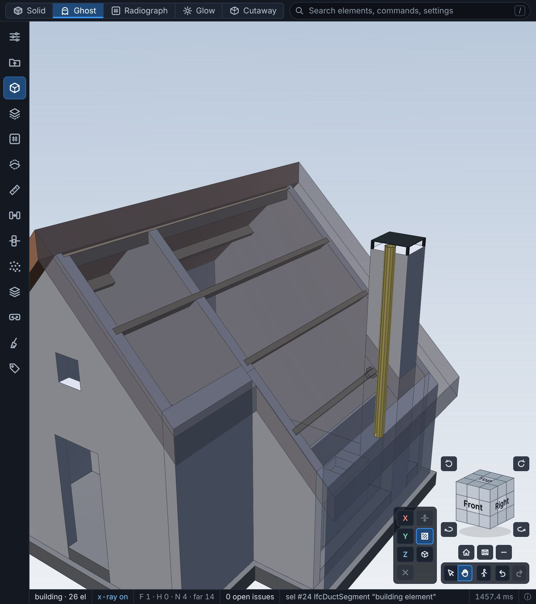
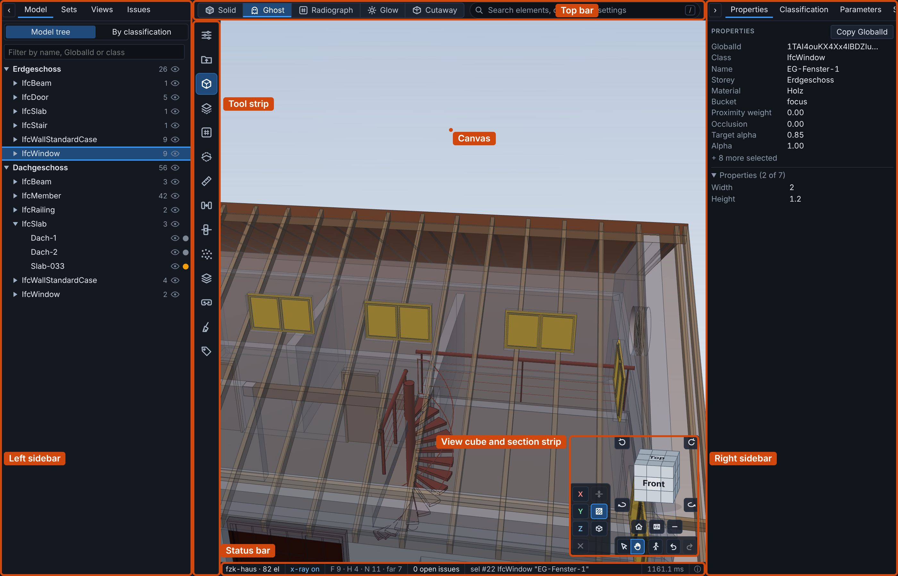
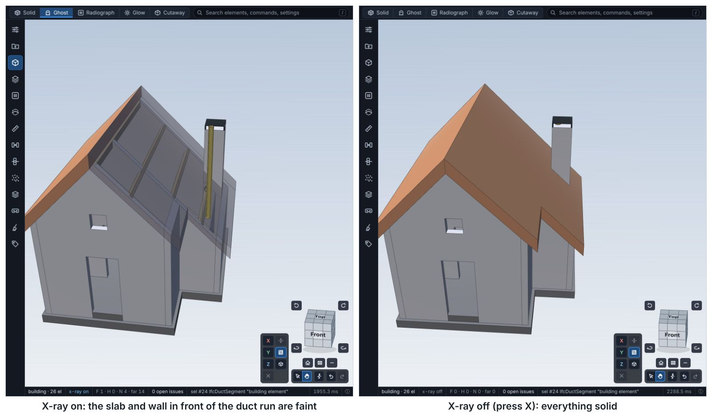
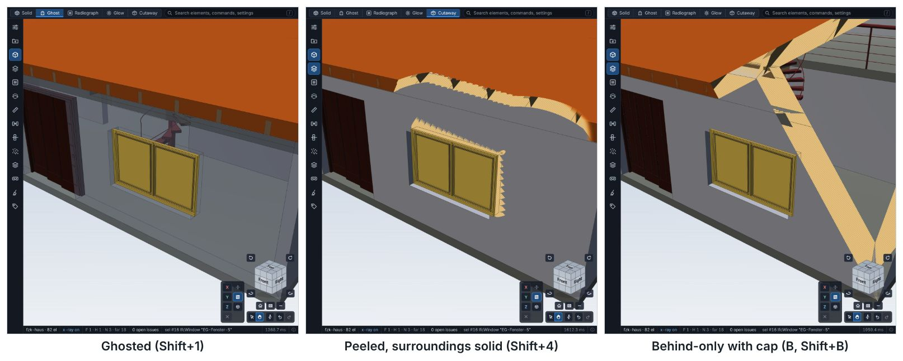
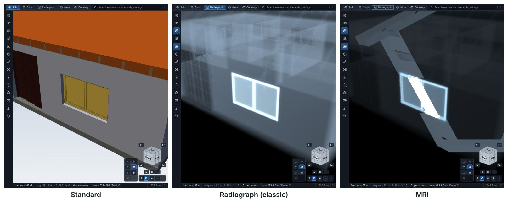

User manual
Seeing through a building model
How the X-ray BIM viewer works and how to use it: looking through a model, finding and checking elements, views and issues, presenting, 4D planning, sharing, and automation. Every chapter starts from a problem, explains the idea, walks through it on a sample model, then says what happens underneath and where it stops.
About 82,000 words. Two nouns for coordination: a view is a moment you captured, an issue is a problem someone must act on, and it points at views.
1.What the viewer is and the x-ray idea in one page
You open a building model to check a duct run above a ceiling. What you see is walls, slabs and beams. The duct is behind them. You can hide the walls one by one, but then you lose the room around the duct, and an hour later you have forgotten what you hid. You want the structure to get out of the way for a moment and come back when you look elsewhere.
This viewer does that. It opens building models (IFC and glb files) in your browser. When you select a part, it makes the things that block your view of that part faint, and leaves everything else solid. Around that idea it has tools to cut, measure, check, annotate and present. This chapter explains the idea and how the program is delivered. The other chapters build on it.
1.1 Focus, context, occluder
A radiologist sees a bone on an x-ray picture because the flesh around it is made faint, not removed. The flesh is still there, so the bone keeps its place in the body. The viewer does the same with a building.
Three words carry the idea. You will meet them in every chapter.
- Focus is what you care about right now: the part you select, plus the parts connected to it. If you select one duct segment, the focus is the whole connected duct run (the viewer follows the ports and the system the segment belongs to). The viewer draws the focus solid and, by default, in front of everything.
- Context is what may ghost: slabs, walls, beams, columns, footings, stairs and roofs, on the focus storey and one storey above and below.
- Occluder is a context part that stands between your eye and the focus, or that touches the focus. Only occluders change how solid they look. A column on the far side of the building, out of your way, stays as it is.
So here is why a wall ghosts when you select a duct: the duct is the focus, the wall is context, and the wall blocks your line of sight to the duct, so it becomes an occluder and fades.
How the viewer decides how much. It does not guess. It measures.
- It spreads sample points over the surface of the focus. The default is 64 points per focus part, and at most 500 in total.
- From each point it draws a straight line to the camera. These lines are the sightlines.
- For each occluder it counts how many sightlines it crosses and divides by the number of lines. That share is the occlusion, between 0 and 1.
- The more of the focus an occluder hides, the more it fades.
A slab that crosses 3 of every 4 sightlines (occlusion 0.75) fades to an opacity of about 0.24, where 1 is solid and 0 is invisible. A beam that crosses none keeps its normal look. The test is repeated after each camera move, so the picture follows you as you orbit. The change is eased in small steps, so nothing pops.
Proximity. Not every context part is equal. The viewer sorts each one into a bucket.
| Bucket | What it is | How it ghosts |
|---|---|---|
| Focus | The selection and its connected run | Never. Solid. |
| Host | Context that crosses or contains the focus, such as the slab a duct passes through | Strongest (weight 1) |
| Near | Context within a buffer around the focus, not a host | Weaker the further away it is |
| Far | All other context | Only if it blocks the view, and less than the others |
The buffer starts at 0.30 m and grows with the size of the focus part, up to 1.50 m. A thick duct reaches further than a thin pipe. A far part that blocks your view still ghosts in this viewer (the original research report ghosted only host and near parts). A far wall that blocks the whole focus settles at an opacity of about 0.40. You can turn that off (see 4.2).

Words used in this manual. A view is a captured moment: camera, what is shown, hidden, cut and selected. A preset is
a saved look (settings only). A mode is one of the five looks in the top bar: Solid, Ghost, Radiograph, Glow and
Cutaway. A set is a named group of elements. A query is a condition such as class = 'IfcWall' and storey = 'Level 2'.
An issue is a problem someone must act on. Appendix E has the full glossary.
1.2 What runs where
The viewer is a web page. It runs in your browser, on your computer. There is no server that holds your model. You can get it in three forms.
| Form | What it is | When to use it |
|---|---|---|
| Single file | xray-viewer.html: one file with the program, the sample models and the IFC reader inside. Open it by double-click. |
Trying the viewer, sending it to a colleague, working offline |
| Served app | The program run from its source with a local web server (npm run dev). |
Development, large models, the sample "Synthetic 5k" |
| Packed page | A single HTML file made with the xray-pack tool. It holds one model and a starting state. |
Handing a finished model to someone who needs nothing else (see chapter 30) |
Nothing is uploaded. Your IFC file is read inside your browser, by a background worker. The single file makes no network request. Two kinds of feature reach out, and only when you turn them on yourself: the map under the model sends the project location to a tile server (see 6.2), and some of the decision models in the classifier use a download or an endpoint you name (see chapter 18).
A packed page contains your model. Treat it like the model file itself. A share link holds settings, not the model (see chapter 29).
Use Chromium, Edge or Chrome. Firefox and Safari were not available for testing, so they are untested.
1.3 Who reads which part
You do not need to read the manual in order. Pick your route.
| You are | Read first | Then |
|---|---|---|
| Coordinator or site engineer [C] | Chapters 2 to 6 (look and cut), 7 to 8 (find), 10 to 11 (check) | 13 to 17 (views and issues), 20 (revisions) |
| 4D planner [P] | Chapters 2 to 3 and 8, then 24 | 25 to 28 (4D), 21 to 22 (films), 32 |
| Integrator or developer [D] | Chapters 2, 3 and 35 | 30 (packed pages), 32 to 34 (command line, agent skill, data) |
| Presenter | Chapters 4 to 6 | 13, 21 to 23 |
Sections tagged [C], [P] or [D] are for that reader only. Untagged sections are for everyone.
Part I (chapters 1 to 3) is the base. Part II (4 to 6) is the core of the viewer: seeing through the model. If you read only one more chapter after this one, read chapter 4.
See also
- Chapter 2: get a model on screen.
- Chapter 4: use the idea of this chapter and tune it.
- Appendix E: glossary.
2.Opening the viewer and a model
You have an IFC file from an architect or an engineer. You want to look at it now, without installing a program, without sending the file to a server and without waiting for a conversion. Or you have no file yet and want to see what the viewer does. Or the file is very large and the page seems to hang.
The viewer reads IFC files itself, in your browser. It turns each file into the same internal form it uses for its own sample models, then draws it. Reading a large file takes seconds to minutes, so the work runs in a background worker, and a status line tells you which step it is on. If the file cannot be read, one line says so and the model on screen stays.
2.1 Start from xray-viewer.html or from source
Try it (single file).
- Find
xray-viewer.html(in the zip it is named likexray-viewer-v12-20261101-ab12cd3.html, with a version, a date and a short code). Double-click it. Use Chromium, Edge or Chrome. - The page opens with a sample model on screen. You see the building, the top bar above it, a tree on the left and a tabbed column on the right.
- Click an element. A duct is a good start. The parts that block your view of it turn faint.
- Press
Xto switch x-ray off and on. Press?to see the list of keys.
Try it (from source). You need Node 22 and npm.
- In a terminal, go to the
webfolder and runnpm install, thennpm run dev. - Open
http://127.0.0.1:5173/?model=building. - Steps 3 and 4 above are the same.
The part after ?model= picks the model. The values are building, fzk-haus, plumbing, process-plant, synth5k,
debris-demo and procedural. If the value is unknown or its model cannot load, the viewer shows the in-memory
procedural model and a red message in the status bar.
How it works. The single file holds the program, the sample models and the IFC reader in one page. It has no
dependencies and makes no network requests. A normal build of the served app cannot be opened by double-click, because
browsers block its scripts when a page comes from file://. This is why the single file exists.
Limits and gotchas. Selection sets and class styles are kept per model name in your browser's storage. On a page opened from a file, some browsers do not keep that storage between visits, so stored sets and style edits may be gone the next time. Firefox and Safari are untested.
2.2 Open IFC, IFCZIP, glb by button or drop
Try it.
- Open the Parameters tab of the right sidebar. The first folder is Open model. (The first button of the tool strip on the left of the canvas does the same.)
- Click Open IFC or glb file and choose a file. You may choose several files. Or drag the files onto the page.
- Watch Load status. It counts through the steps and ends with
Loaded <N> elements in <S> s. - The model replaces the one on screen. Its name is
file:and the first file name, with+N morewhen you opened several.
Accepted files. .ifc, .ifczip (a zipped IFC) and .glb. A glb may come with a .json file of the same base
name that holds the element data. A .json file alone is not accepted. A glb without that .json file still opens,
but the viewer has to guess each element's class from its name ("slab", "wall", "beam", "column", "duct", "pipe", "tray"),
and the guess is "Unknown" when none fits.
Several IFC files at once. This is how you check a structural, an architectural and an HVAC model together. The viewer joins them into one model, called federated:
- the storeys with the same name and the same height (within 1 cm) become one storey;
- an element that has the same GlobalId, class and bounds as an earlier one is skipped (it is the same part, listed twice);
- an element with the same GlobalId but a different shape is kept and gets the name
<GlobalId>~<n>.
You cannot mix IFC and glb files in one load, and you cannot load several glb files at once.
Read a load error. Wrong input gives one line in Load status and in the red segment of the status bar at the
bottom. The model you had stays on screen. The cases are: IFC mixed with glb, several glb files, a lone .json, an
unsupported file type, an empty file and a corrupt file. An IFC file that the reader cannot read gives This IFC file could
not be read: it may be damaged or not an IFC file (<name>). Over 100 MB in total, the viewer warns and carries on. Cancel
load stops a load that is running and keeps the current model.
How it works. A background worker reads the IFC with a library called web-ifc. It builds the shapes of the elements (the mesh), reads the relations between them (which wall has which opening, which duct connects to which), and reads the properties. Then it merges everything into the arrays the screen draws. Nothing leaves your computer. The reader leaves out the parts that are not objects you would select: spaces, sites, buildings, storeys as objects, grids, annotations and openings. (The openings are used. They cut holes in their hosts.) The model is moved so that its centre sits at the origin, and the up direction is converted to the viewer's own.
Limits and gotchas.
- Only what web-ifc can build is shown. Some complex shapes (
IfcAdvancedBrep, B-spline, unusual boolean or swept shapes) and IFC4X3 alignment geometry are silently missing. An opening that cannot be cut leaves the host solid. - IFC2X3 and IFC4 are well tested. IFC4X3 beyond the sample files is untested.
- Colours may differ from other programs: the viewer uses the surface colour in the file, and falls back to a colour per class when the file has none.
- The properties it reads are the element's own property sets, at most 24 per element. Type properties are not read.
2.3 Sample Projects
Try it.
- In the Parameters tab, open the Sample Projects folder, right under Open model.
- Open the Model list and choose FZK-Haus. Wait until the loading message goes.
- The model on screen is replaced by a small house. Choose Building (Simple-Scene) to get a building with HVAC ducts.
The list holds the models that ship with the viewer, with readable names.
- Building (Simple-Scene): structural, architectural and HVAC models of one building, federated. Use it for ducts behind slabs (chapter 4).
- FZK-Haus: a small house exported from ArchiCAD, with windows and a roof. Use it for cutting (chapter 5).
- Plumbing: a plumbing model.
- Process plant: a synthetic process unit with pipes.
- Synthetic 5k: a generated building with 5,000 elements and 7 storeys. It is the benchmark model.
- Debris demo: a generated building with 400 elements and deliberate rubbish, used in chapter 9.
- Procedural: a small model built in memory. It is the fallback when nothing else loads.
- FZK-Haus 4D: FZK-Haus with a construction schedule, for chapters 24 to 28.
Models you opened from files follow the samples in the list, for this visit only.
Limits and gotchas. The single file carries Building, FZK-Haus, Plumbing, Debris demo and Process plant. It does not carry Synthetic 5k. Its entry reads "needs the served app or the zip", and choosing it leaves the current model in place. The sample names are also the keys under which sets, presets, views and share links are stored, so they never change.
2.4 Large models
A file with 100,000 elements and 90 MB used to freeze the page. Now the heavy work runs in the background, and the page
stays usable. It still takes time: the example in the documentation is Loaded 100000 elements in 23.4 s. Two options
make it faster.
| Option (folder Open model) | Values | What it does |
|---|---|---|
edges |
auto (default), all, none |
The outline lines of the model. auto skips them above 50,000 elements, because they are the largest extra buffer and slow to draw. none never builds them. all always does. |
properties |
common (default), none |
none skips reading properties: a faster, smaller load. Hover cards and the Properties tab then show no property sets. |
Set the options before you open the file. They apply to the next IFC file only, and are not stored.
Try it. Set properties to none and edges to none. Open your large file. Read Load status. It walks through
the steps: Reading, Opening, Meshing 4800 of 100000, Reading relations, Merging, Edges (or Edges skipped
(auto: over 50,000 elements)), BVH (the structure that makes picking and sightlines fast), Transferring geometry,
Uploading, and last Loaded N elements in S s. Model stats then shows elements, triangles, memory in megabytes and
load seconds. The Large model tool in the tool strip shows the same numbers with the time of each step.
Limits and gotchas.
- Memory is about 25 times the file size at 40 MB. Files of tens of megabytes are practical. A few hundred megabytes are not. There is no streaming and no level of detail.
- Reading properties is the slowest step in the browser.
properties: noneremoves it. - Edges are all or nothing. If the model skipped them, no element has outlines.
- After the load, the model tree and the class styles need about 1 s more at 100,000 elements.
- Cancel load stops the worker at once.
See also
- Chapter 3: the screen and moving around.
- Chapter 9: cleaning a messy model (the Debris demo).
- Appendix H: troubleshooting load errors.
3.The screen and moving around
You have a model open and you are lost. Where is the button for this? How do I turn the model around? Why did my click select a wall and not the pipe behind it? And how do I take back the last thing I did?
The screen has a small number of parts, and each part has one job. Learn those parts and the three ways of moving the camera, and the rest of the manual falls into place. Everything you can do with the mouse you can also do from the keyboard, so you never have to hunt for a button.
3.1 The screen map

From top to bottom and left to right:
- Top bar. A thin strip along the top of the canvas. On the left, five buttons: Solid, Ghost, Radiograph,
Glow, Cutaway (the modes, see 4.4). To the right, the search bar (chapter 7).
Shift+Tshows or hides the bar. - Left sidebar. Four tabs: Model (the tree of elements), Sets, Views and Issues.
[folds it. - Tool strip. A column of icons at the left edge of the canvas, with one button per tool: Open model, X-ray, View
modes, Measure, Clearance, Penetrations, Cleanup and others. A tool with settings opens a drawer beside the strip.
Only one drawer is open at a time.
Esccloses it.Tshows or hides the strip. - Canvas. The model.
- View cube (the gizmo), bottom right. A cube you click to look from a side, with the pointer-mode toggle, the undo
and redo buttons and the section strip under it.
Vshows or hides it. - Right sidebar. Tabs: Properties, Classification, Parameters, Script and 4D. A Revision tab
appears only while you compare model versions (chapter 20).
]folds it. The Parameters tab holds every setting of the viewer in folders, with a tooltip on each (hover for 350 ms). - Status bar. One line along the bottom. It shows the model name and element count, whether x-ray is on, the number of
focus, host, near and far elements, the element under the pointer or selected, and the frame time. Messages (loading,
errors) appear here as a red segment with a dismiss button. Click the model name, or the
ⓘbutton, for details and the credits of the sample models.
Try it. Open FZK-Haus (2.3). Press T twice, then [ twice, then ] twice, and watch the strip and the sidebars fold
and come back. Hover over a tool button to read its name.
Limits. Your fold choices for the right sidebar, the tool strip and the top bar are remembered in the browser. The view cube is not saved in views or share links.
3.2 Moving around: orbit, pan, zoom, Walk mode, the view cube
Think of holding a model house in your hands. You turn it, slide it, bring it closer. The viewer works the same way, in the style of Revit, Navisworks and Solibri: the mouse moves the model around a point you choose, and the keyboard does the same in small steps. A second way, Walk mode, puts you inside the building instead.
The left mouse button does one of two things, depending on the pointer mode. The mode is set by a toggle under the view cube, or by two keys. The other buttons and the wheel do the same in both modes.
Hand (key G, the default) |
Arrow (key R) |
|
|---|---|---|
| Left drag | Orbit | Draw a selection box |
| Click | Select | Select |
| Double-click an element | Select it and fly to it | The same |
Alt with double-click |
Enter Walk mode and drop in on that spot | The same |
| Right drag, middle drag | Pan | Pan |
Shift with middle drag |
Orbit | Orbit |
| Wheel | Zoom toward the cursor | Zoom toward the cursor |
| Double middle click | Frame everything | Frame everything |
| Touch | One finger orbits, two fingers zoom and pan | One finger draws the box, two fingers zoom and orbit |
Two details make this feel natural. The wheel zooms toward the point under the cursor, so what you point at stays under the
pointer. And an orbit turns around the point you grab: when a drag starts, the viewer finds the element under the cursor and
makes that the centre of the turn. If the cursor is over empty space, the centre stays where it was. In Hand mode, Shift with
a left drag pans. A double-click on empty space does nothing. The camera is never out of reach in Arrow mode, because the
right and middle buttons, the wheel and the keyboard still work.
The selection box (Arrow mode). Drag from left to right: a solid blue box that picks the elements lying fully inside
it. Drag from right to left: a dashed green box that picks every element it touches. This is the convention of CAD
programs. Shift adds to the selection, Ctrl or Cmd toggles, and Esc cancels the box while the button is down. The
box looks at bounding boxes only, not at what hides what, so it picks elements behind the ones in front.
From the keyboard. Arrow keys orbit. Shift with arrow keys pans. = and - (or +) zoom. Hold Ctrl to move at a
quarter of the speed. The number pad gives the standard views: 1 front, 3 right, 7 top, 0 isometric. F or .
frames the selection (F frames everything when nothing is selected), and Home frames the whole model. PageUp and
PageDown move up and down one storey. Alt+Left and Alt+Right step back and forward through your last 50 views of the
model (mouse buttons 4 and 5 do the same).
W, A, S, D, Q and E do nothing here. They belong to Walk mode, below.
The view cube. Click a face (Top, Bottom, Front, Back, Left, Right), an edge or a corner, and the camera glides there,
framing the selection (or the whole model). Drag the cube to orbit. The curved arrows at the top corners roll the picture
by 90 degrees, and the arrows at the bottom corners turn the camera 90 degrees to the left or right. Home frames the
model. The projection button switches between perspective and an orthographic look (Alt+5).
Walk mode
Orbiting looks at a building from outside. To check what you would see standing in a corridor, you need to be inside. Walk mode moves the camera as a person would: you stay at one eye height and go forward, back and sideways on the level.
Enter it with Shift+W, or with the walk button next to the Arrow and Hand toggle under the view cube. A chip at the top of
the view reads "Walk · Esc to exit", and the cursor becomes an eye. Leave it with Esc, a click on the chip, or the walk
button again.
WandS, orUpandDown, walk forward and back.AandDstep left and right.LeftandRightturn you on the spot.Qlowers the eye andEraises it.- Hold
Shiftto run (3 times faster). HoldCtrlto go slow (a quarter speed). - Drag with the left button to look around. The wheel walks forward and back. A click still selects.
- Double-click a spot on the model to drop in there (see below).
PageUpandPageDownjump one storey up or down.
While you walk, Shift+W does not leave: Shift with W runs forward. Use Esc to leave. Walk mode is also left when a
fly-through, a script or a 4D film plays (chapter 21).
Drop in here. Walking from far away is slow. In Walk mode, double-click a point on the model. The eye glides there (about 0.4 s) and stands on that spot at your eye height, facing the way you were facing. The eye height is the eye height (m) setting in the Keyboard folder of the Parameters tab. It is 1.6 m by default and can be 0.5 m to 3 m. If you click a surface that faces up, such as a floor or a stair tread, you stand on it. If you click a wall or a ceiling, you stand on the floor below that point, because a wall has no top to stand on.
Outside Walk mode, hold Alt and double-click a point. The viewer enters Walk mode and drops you in there. A plain
double-click outside Walk mode still flies to the element.
Storey jump. In Walk mode, PageUp and PageDown move you to the storey above or below. You keep your spot on the plan
and your height above the floor. A short message names the storey, for example "Level 2", or says that you are already at the
top or bottom storey. Outside Walk mode the same keys move the camera target one storey (see above).
Walls that stop you (optional). By default you walk through everything. Switch on Walk collision in the same
Keyboard folder and the movement keys and the wheel stop you about 0.3 m short of a wall. If you push at a slant, you slide
along it. Doors do not block you, and neither do ghosted or hidden parts, so you can still walk through a faint wall or a
hidden one. Floors and ceilings are not walls. Q and E ignore collision.
Try it. In FZK-Haus, walk into the house from outside.
- Press
Home. The whole house fills the view, seen from above and outside. - Press
Shift+W. The chip appears. Nothing moves yet. - Hold
Quntil the ground outside the house is just below the middle of the view: your eye is now low, at about the height of the ground floor. Drag with the left button to look level, toward the house. - Hold
W. You walk toward the house at the same height. Keep it down and you pass through the outer wall and stand inside the ground floor. HoldShiftas well to run, orCtrlto creep. - Press
Leftto turn and look around the room. PressPageUp. You move to the storey above, at the same spot, and a message names it. PressPageDownto come back. - Press
Escto leave, thenHome. HoldAltand double-click a wall of the house. The chip appears and you stand inside, on the floor below the point you clicked, at 1.6 m. - Open the Keyboard folder of the Parameters tab and switch on Walk collision. Hold
Wtoward a wall. You stop short of it. Switch it off again if you like. - Press
Esc. The chip goes away and the mouse orbits again, around a point a short way in front of you.
How it works. Walk mode moves the camera and a point a fixed distance in front of it, so leaving it leaves a sensible orbit. It is a state of your viewer only. It is not in share links, saved views, presets or packed pages, and opening another model ends it. A walk is one camera step on the undo stack (3.4).
Limits. There is no gravity. Collision is off unless you switch on Walk collision, so by default you pass through walls
and floors. It checks three points in the direction you move, and only while you move, so a thin railing can slip past. You stay
at the eye height you set until you change it with Q and E. Speeds scale with the size of the model, and the move speed and orbit speed settings change them.
The old keys: Navigation style
If you liked the older way, where W, A, S, D, Q and E always fly the camera and the middle button zooms, open the
Keyboard folder of the Parameters tab and set navigation style to Game. BIM is the default. The choice is
remembered in your browser. It is not in share links or views. Game style has no pivot pick and no double-click action.
Try it. Click Top on the cube. You look straight down. Click Home. Press Alt+Left to go back to the view before.
Turn the wheel with the pointer over a corner of the house, and see that corner stay under the pointer.
Limits and gotchas. The orthographic look is an approximation: a camera with a 2 degree field of view moved far back. There is no true orthographic camera. The view cube has no compass letters, because the model files carry no true north.
3.3 Select, hover cards and the Properties tab
Click an element to select it. Shift-click adds another, and Ctrl-click (Cmd on a Mac) toggles one. Press Esc to
clear the selection. Alt+S selects every element of the same class. Ctrl+A selects everything visible.
Two things surprise people.
- A click picks the nearest thing you can see. A ghost that is fainter than 0.3 opacity can no longer be clicked: your click goes through it to what is behind. This is on purpose, so you can select the duct through the faint wall. It also means you cannot select a very faint wall by clicking it. Use the Model tree or the search bar (chapter 7).
- Selecting any element makes it a focus, whatever its class. Select a slab and the other slabs and walls become context.
Hover cards. Rest the pointer on an element for 350 ms and a small card appears. It shows the element name, its
class · storey · material, a few properties (type, whether it is external, load-bearing, fire rating, length, width,
height, volume), and while x-ray is on a line such as x-ray: near · alpha 0.40. The card goes away when the pointer
leaves, when you press a key or when you click. Hold Alt to freeze the card, select its text, or press Copy to copy
every row. I switches the cards on and off. The element under the pointer is also outlined.
The Properties tab. The first tab of the right sidebar follows the selection. It shows the GlobalId (with Copy
GlobalId), class, name, storey, material, the x-ray state, and a list Properties (n) with the property sets and
quantities. By default the list shows the same filtered properties as the card, and the title reads Properties (k of n).
Click a row to copy its value. To see every property, switch on all properties in sidebar in the Hover info folder
of the Parameters tab. With several elements selected, the tab shows the first and says + N more selected.
Try it. In FZK-Haus, hover over a wall, and wait. Then click it. Open the Properties tab. Find IsExternal and
FireRating if the file has them.
Limits. Only the element's own property sets are read, at most 24 per element. Properties of the element's type (the
catalogue entry) are not shown. For a file opened with properties: none (see 2.4), the card shows nothing but the name,
class, storey and material.
3.4 Undo and redo
Ctrl+Z undoes and Ctrl+Shift+Z (or Ctrl+Y) redoes. The two buttons under the view cube do the same, and their tooltips
name the step, such as "Undo zoom" or "Undo selection".
Four kinds of change are on one stack:
- Camera. A whole wheel gesture, an orbit, a click on the cube or a jump to a view is one step. The camera is recorded when it has been still for 0.4 s.
- Section. Moving a cut plane (a drag of a handle is one step), or switching a cut on or off.
- Selection. Each change of the selected set.
- Settings. Each change of a control in the Parameters tab. A slider drag is one step. A preset or a mode button changes many settings and is also one step, shown as "N settings".
What is not undoable. The stack lasts for the session. It is not saved, not in share links, views or presets, and it is cleared when a model loads. It holds 100 steps. A new change throws away the redo list. Drawings on views have their own history. Settings that live outside the Parameters tab (some tool-strip toggles) are not recorded. The keys are not taken while you type in a text box.
Try it. Orbit, select a wall, change a slider. Press Ctrl+Z three times and watch each go back.
3.5 On a phone
On a screen 700 px wide or less, the layout changes.
- The model tree on the left becomes an overlay, and the right sidebar becomes a bottom sheet that rises from the bottom edge, at most 58 % of the height. The right sidebar starts folded, as a thin rail.
- The left sidebar, the Issues sheet and the bottom sheet are never open together. Opening one folds the others.
- The five top-bar modes become small icon buttons. Their labels stay as the accessible names.
- The view cube starts collapsed as a small cube button. Tap it to open it. The Arrow and Hand toggle and the undo and redo buttons sit beside it.
- In Arrow mode, two fingers zoom and orbit but do not pan. Switch to Hand to pan.
Apart from that, everything in this manual works on a phone. The views grid (chapter 13) and the revision walk (chapter 20) have phone-friendly layouts.
3.6 What's new
The first time you open a new version of the viewer, a small What's new card appears in the corner of the 3D view. It names
the version and lists the changes of the newest release. It takes the keyboard focus. Press Esc or Dismiss to close it.
It shows once for each version, in each browser.
- Show all changes on the card opens a list of every release, newest first, each with its date.
- The command palette action What's new (
Ctrl+Shift+K, see 3.7) opens the same list at any time. It has no key until you give it one in the shortcut editor.
The card stays away on the very first start in a browser, and in packed pages, kiosk pages, embedded pages and pages in a
frame. It also stays away when the browser blocks local storage. The text comes from CHANGELOG.md, the file at the root of
the repository that lists every release. It reads the newest section that has a release number. A section called "Unreleased"
(changes not yet released) is never shown.
Try it: press Ctrl+Shift+K, choose What's new, and read the list. Version 32 lists the classification facets, the concrete data, the By classification
tree, scripts with decisions and loops, the temporary works and the director's new options, one line each. The colour legend, the schedule strip
and the storyboard PDF are still "Unreleased" in CHANGELOG.md, so the card does not show them yet. Chapters 18A, 18B, 23A and 27A say how to use them.
3.7 Keyboard, command palette, cheat sheet
You can do nearly every action from the keyboard.
?orF1opens the cheat sheet: every action with its key, grouped.Ctrl+Shift+Kopens the command palette. It lists every action and every button and checkbox of the Parameters tab, with the folder path and the key. Type a few letters (the ranking favours the start of words), use the arrow keys, and pressEnter. Entries you used recently come first./orCtrl+Kopens the search bar (chapter 7).- Edit shortcuts (in the Keyboard folder of the Parameters tab) lets you change any key. Click a key cell, press the
new keys, and press
Backspaceto remove one. Cells with a clash turn red. Your changes are stored in the browser, and you can export and import them as a file.
Keys are ignored while you type in a text box. A few that you will use all the time:
| Key | Action |
|---|---|
X |
x-ray on or off |
Shift+0 to Shift+4 |
the five top-bar modes |
1 to 9 |
presets |
H, Alt+H, Shift+H |
hide selected, unhide all, hide everything not selected |
B, P |
behind-only, peelback |
C, Shift+C, Alt+C |
section box, fit box to selection, section plane |
Appendix A lists every key.
Where the keys go (focus). A list such as the model tree, the Views list or the Sets list keeps its own arrow keys,
Home, End, PageUp, PageDown, Enter and Space while it has focus. So PageUp in the tree moves up the tree, not up
a storey. Keys that the list does not use, such as F, H and X, still act on the selection. Chapter 7 gives the tree keys.
Esc is the way out. With focus in a list, the first Esc hands focus back to the 3D view and does nothing else. A second
Esc does what it always does: it closes an open panel or card, then clears the selection. In a text box, Esc also leaves the
box.
F6 moves focus around the screen: the 3D view, the left sidebar, the right sidebar, the top bar, and back to the 3D view.
Shift+F6 goes the other way. A folded sidebar or a hidden top bar is skipped (open it with [, ] or Shift+T first). The
region that has focus shows a ring. F6 is the one key that also works while you type in a text box. Together with Tab, it
lets you reach every part of the screen without the mouse.
See also
- Chapter 4: x-ray, the main feature.
- Chapter 7: the model tree, its keys and search.
- Chapter 21: what happens to the camera while something plays.
- Appendix A: keyboard reference.
4.X-ray: let the structure get out of the way
At a coordination meeting someone asks, "Where does that duct run above the corridor?" You rotate the model. All you see is slabs and walls. You hide the ceiling slab and now the floor above looks odd. You hide a wall and the room is no longer a room. Every fix costs you something else, and you will not remember what you hid.
X-ray avoids that. You select the thing you care about. The viewer finds what blocks it and makes only that faint, in proportion to how much it blocks. Chapter 1 gave the idea. This chapter shows how to use it, tune it and keep or remove specific parts by hand. It ends with the top-bar modes and the presets: one click to change the whole look.
4.1 Switch x-ray on and select a duct
Try it.
- Open Building (Simple-Scene) (2.3). X-ray is on by default. The status bar says so.
- Click a duct. If you do not see one, orbit until you find one.
- The duct and the run connected to it stay solid. A slab or a wall in front of it turns faint. You see its outline through the faint surface.
- Orbit. The faint parts change as your point of view changes. A wall that was in your way becomes solid again when you walk round it, and a new one fades.
- Press
X. All ghosts go solid at once: x-ray is off. PressXagain. - Press
Escto clear the selection. With nothing selected there is no focus, so nothing ghosts.

How it works. (See 1.1 for the idea.) Each time you select something or move the camera, the viewer does two things. First, it sorts every context part into focus, host, near or far (the classification). This uses only geometry, so it does not change when you orbit. Second, it draws sightlines from points on the focus to the camera and counts which parts they cross. That count sets how faint each part becomes. The faintness eases toward its new value by 20 % per step, so you see a smooth fade and not a flicker. A faint part is drawn with its outline kept, so you still see where it is. By default a reveal effect delays each fade by the part's distance from the focus, so the ghosts appear in a ripple (6.3).
Ghosts are blended so that the order in which they overlap does not matter (this needs a graphics card feature called float colour buffers; without it, overlapping ghosts may look uneven).
Limits and gotchas.
- If you select something that is not a duct or a pipe, it still becomes the focus. Select a slab and the other slabs and walls become the context.
- The connected run is followed only for services (duct, pipe, cable carrier, flow segments and fittings, terminals). For a wall you get that wall alone.
- Ghosts fainter than 0.3 opacity cannot be clicked: your click goes to what is behind (3.3).
- Focus in front (a display setting, on by default) draws the focus on top of everything, even behind an opaque wall. Turn it off if you want solid objects to hide the focus.
4.2 Tune ghosting
The defaults suit most models. When a picture does not read right, find the symptom in the list and change one setting. All the settings are in the Parameters tab, in the folders below. Hover for 350 ms to read the tooltip. Appendix B lists every one.
Too much ghosted, or too little. Folder Classification (Alg 1) decides which parts count as near the focus.
bufferBase (m)(default 0.30). Raise it and more walls and slabs near the focus fade. Lower it for ghosting close to the focus only.bufferScale(0.50): how much the buffer grows with the size of a focus part. At 0, every part uses the base buffer.bufferLo(0.30) andbufferHi(1.50): the smallest and the largest buffer in metres.storeyBand(1): how many storeys above and below the focus storey count as context. At 0, only the same storey.
Ghosts too solid, or too clear. Folder Sightlines (Alg 2).
alphaMin(0.15): the faintest an occluder gets. Lower it and blockers almost vanish.alphaMax(0.85): how solid a near part is when it blocks nothing. Raise it to 1 and the parts that do not block stay fully solid.gamma(0.5): the shape of the fade. Below 1, a part that blocks only a few sightlines still fades well. Above 1, only strong blockers fade.smoothingRate(0.20): speed of the fade. At 1 there is no smoothing.samplesPerObject(64) andmaxSamples(500): how many sightlines. More is steadier and slower. If the frame rate drops while you orbit, lowermaxSamples. If the ghosting flickers on a long run, raise it.
A stack of floors turns into a veil. When three slabs lie over the same duct, all three used to fade the same and
together looked like a white fog. layer weighting fixes that. front (the default) gives the slab nearest the camera
the most fade, and each slab below it half as much (layer falloff 0.5: credits 1, 0.5, 0.25). budget fades only the top
layer budget layers (default 2). uniform fades every layer alike.
A far wall blocks the view. occluder scope is all by default, so a far part that blocks the view also fades, at a
strength set by far weight (0.7). Choose near to ghost only host and near parts, as in the original report. In
Display, far mode set to hidden removes the far parts. opaque (the default) keeps them.
Outlines and colour. In Display: edgeAlpha (0.8) sets how dark the outlines of ghosts are, and never lower than
the ghost itself. ghost desaturate (0.8) pulls the colour out of ghosts so the focus stands out. focus in front is
described above. debug colour by bucket paints focus, host, near and far in separate colours: host red, near orange, far
grey. Use it to understand why something fades, then turn it off.
Tiers. Switch on Tiers mode (in the top section of the panel) when different kinds of parts compete for the view. Parts are ranked: services first, then beams and columns, then slabs, walls and footings. A part ghosts only the parts of a lower tier, so slabs and walls fade most, beams and columns less, and the selection stays solid. Off, every blocker follows one rule.
Depth grading. In the Cinematic folder, Depth-graded ghosting tints ghosts that lie well in front of the focus darker and bluer. It helps you read which ghost is nearer.
See why. In the Cinematic folder, Sightlines has a Show sightlines button. Click it and thin lines run from the focus to the camera for a moment: orange lines hit something, blue lines have a free view. Use it to find the cause of a ghost.
Limits and gotchas.
- Raising
samplesPerObjectmakes the update slower on a large selection. - Where this viewer differs from the original report (the selection joins the focus whatever its class, far blockers ghost, stacked layers are weighted by depth), the README lists the deviations.
- In Radiograph and MRI looks, most of these settings do nothing and are dimmed (6.1).
4.3 Pins, hides and class styles
The algorithm decides automatically. Sometimes you know better. Three tools override it.
Pin. Select parts and click Pin selected in the Parameters tab. A pinned part never fades below the user pin
floor (folder Overrides (Alg 7), default 0.60). Use it to keep a column or a wall readable behind ghosts. The default
class floor for columns is 0.50.
Hide. Select parts and click Hide selected (key H). A hidden part is not drawn and does not block any sightline.
Alt+H brings back everything you hid. Shift+H hides everything except the selection (an isolate). Clear pins/hides
undoes both pins and hides. Pins and hides refer to elements by GlobalId, so a view can carry them.
Class styles. A style sets a look for all parts of one class or one material. In the Class styles folder, open Classes, then a class (the number shows how many parts it has). The fields are:
| Field | Effect |
|---|---|
alphaMax |
Never more opaque than this, even when nothing blocks. "Steel at most 80 % opaque" is alphaMax 0.8. |
alphaMin |
How faint an occluder of this class may get. |
floor |
A pin floor for the whole class. |
color |
Replaces the base colour. |
hidden |
Hides the class. |
Class styles can also name a material instead of a class (a material alias, for example steel beams and steel columns
under one name "Steel"). Edits are stored per model in the browser. Reset to config drops them. Export JSON saves
them as xray.config.json, and Import JSON loads such a file. An installation can ship a default file next to the
viewer. Precedence, lowest first: that file, the model's own styles, then your edits.
Try it. In the Building model, select a beam. Click Pin selected. Orbit so that a wall is in front of it. The beam stays clearly visible. Click Clear pins/hides.
Limits and gotchas. A pin keeps a part at or above a floor. It does not make a part solid if the floor is below 1. A
hidden part is not deleted and returns with Alt+H or Clear pins/hides. With x-ray off, no hide applies, whichever way you hid the part (H, Hide selected or the Model tree): everything is drawn. The hides apply again when you switch x-ray on. In the Radiograph and MRI looks only hidden of
the class styles still applies.
4.4 Top-bar modes
The five buttons at the top left of the canvas change the whole look in one click.
| Mode | Key | What you see |
|---|---|---|
| Solid | Shift+0 |
Everything opaque. X-ray, imaging, peel and behind-only off. A section cut stays. |
| Ghost | Shift+1 |
The classic x-ray of this chapter, at factory settings. |
| Radiograph | Shift+2 |
A medical x-ray picture: the model as shades of material thickness, the selection as bright bone (6.1). |
| Glow | Shift+3 |
The selection gets a soft halo and a bright outline. The context stays ghosted. |
| Cutaway | Shift+4 |
A window shaped like the selection is cut through whatever blocks it. Everything else stays solid (5.1). |
Try it. Select a duct in the Building. Click each mode in turn. Click a lit mode again: you go to Solid, so there is always one click back to the plain model.
How it works. A mode is a preset. A click applies a built-in preset (Solid, Ghost = coordination, Radiograph,
Glow = focus-glow, Cutaway = peel-only). The button lights when the current settings still match that preset. When you
change any setting, the light goes out. At start the bar lights Ghost, because that is the factory look.
Limits and gotchas. Solid keeps your section planes, box and clearance colours, because a cut is not a transparency.
Use the preset plain to reset those too. Applying a mode is one undo step. Solid keeps the transparency that the model
itself has, such as glass. On a phone, the five buttons are icons. The top bar is hidden in packed kiosk pages and in
VR and AR.
4.5 Presets and keys 1 to 9
A mode is one click on a preset. A preset is a saved look: settings only, never a camera position. A view, a keyframe and a share link store more (see chapter 13).
Try it.
- Select a duct in the Building.
- Press
2. This is hide-blockers: what blocks the focus disappears, and everything else stays solid. - Press
1to return to the factory x-ray (coordination). - Press
3(behind-only) and4(peelback). Compare them (5.1). - Press
1again.
Keys 1 to 9 apply the first nine presets. The other five presets are not on a key.
| Key | Preset | Group | What it does |
|---|---|---|---|
1 |
coordination | Review | Factory x-ray (the Ghost mode) |
2 |
hide-blockers | Review | Blockers vanish; the rest solid |
3 |
behind-only | Cutaway | Removes what is in front of the focus |
4 |
peelback | Cutaway | A window through what blocks, the rest ghosted |
5 |
peel-only | Cutaway | The same window, the rest solid (the Cutaway mode) |
6 |
stacked-floors | Review | Strong fade for the top floor, mild for those below; depth grading on |
7 |
radiograph | Imaging | Radiograph look (the Radiograph mode) |
8 |
mri-scan | Imaging | MRI slice with a scan |
9 |
section-focus | Cutaway | A section box fitted to the selection, with caps |
The others have no key: presentation (cinematic effects), clearance-review, plain, solid and focus-glow.
Save your own. Set the viewer up the way you want. Open the Presets tool (or the Presets folder in the Parameters tab) and click Save current as preset. Give it a name and one sentence, and choose which groups of settings to store. The defaults are sightlines, display, far mode, view modes, imaging, section and cinematic. Your presets appear under My presets. You can edit, duplicate (also a built-in, which cannot be edited), delete, export and import them as a file, and Share one as a link. Opening a shared link applies the preset once and does not save it. Your presets live in the browser.
How it works. A preset lists only the settings it changes. Before it applies, it resets the groups it names to the
factory values, so a preset does not stack on the one before. It never changes the model or the selection. It does not
store a camera. Four presets (behind-only, peelback, peel-only and section-focus) also move the camera to frame the
selection when applied, and they show nothing useful with nothing selected.
The built-in list holds 14 presets: the nine on keys, and presentation, clearance-review, plain, solid and focus-glow.
Limits and gotchas. The active mark on a preset is a comparison of settings. A setting that changes by itself (a running animation) clears it. A shared preset runs its actions too, so open links only from people you trust.
See also
- Chapter 5: cutting and peeling.
- Chapter 6: radiograph, MRI and other looks.
- Chapter 13: views, and the full ladder.
5.Cutting and peeling (one clipping system)
Ghosting shows you what is behind a wall, but a ghost is still a veil. Sometimes you want to see the thing clearly, as if the wall were not there. Or you want to see a room in section, the way an architect draws it. Or you want to lift a building apart, floor by floor, to show how it is stacked.
Three kinds of tools do this. Peeling removes what is in front of the part you selected, in a window around it. A section cuts the whole model with a box or a plane. Exploding slides the parts apart without cutting anything. The section and every other place that sets a cut use one set of cut planes (5.4). Peeling is separate: it follows your selection, not planes.
5.1 Behind-only and partial peelback
Both tools need a selection, because they work on the focus (chapter 1). With nothing selected, or with x-ray off, they do nothing.
Behind-only (key B). The viewer imagines a flat plane square to your view, through the nearest point of the focus.
Everything on the camera side of that plane is the front. It is cut away, or ghosted, or cut and capped (the cut shows
a flat hatched colour so a solid looks sectioned). Everything behind the plane is drawn fully solid. Shift+B cycles the
three treatments: cut, ghost, cut + cap. The plane follows your camera as you orbit. Choose locked for orientation
to freeze it, or horizontal for a plan cut: the plane sits at the top of the focus and everything above it goes.
Partial peelback (key P). The viewer cuts a window through whatever is in front of the focus. The window has the shape
of the focus and widens toward you, like a funnel, so the wall around the window stays in place. Big slabs are split, not
hidden whole: part is removed and the rest stays. Alt+= makes the window 25 % larger, and Alt+- makes it 25 % smaller.
The setting outside says what the rest looks like: x-ray (peel plus ghosts, the default) or solid (peel only, everything
outside the window solid).
Try it.
- Open FZK-Haus. Click a window in an outside wall. Orbit to look at it from outside.
- Press
P. A window opens in what hides the selected window, and you see the room behind it. The rest of the model is ghosted. PressAlt+=once or twice to widen the opening. - Click Cutaway in the top bar, or press
Shift+4. The wall is solid around the opening: this is peeling withoutsideset tosolid, and it frames the selection for you. - Press
Shift+1to go back to the plain x-ray, then pressB. A plane cuts everything in front of the window, and the room behind is solid. PressShift+Bto try the other treatments. PressBagain to switch it off.

How it works. The decision is made for each pixel, not for each element, so a slab can be half removed. For the peel,
the viewer draws the focus into a small hidden picture, then spreads each focus pixel outward to find, for every other
pixel, the nearest focus pixel and its depth. A pixel is cut when it lies in front of that depth and close enough to the
focus in the picture. The distance allowed grows with the gap between the pixel and the focus. This is why the window
widens toward you. Revealed back faces are painted flat in the cap colour, so a solid wall appears cut.
Choices.
- Behind-only:
offset (m)(default 0.2; a positive value keeps a margin of solid around the focus),front alpha(0.12, used byghost),apply to(all contextoroccluders only),keep x-ray behind. - Peelback:
radius (m)(0.4),slope(0.6, how fast the window widens),feather (m)(0.08, the soft edge),rim band(an accent band on the edge of the window),animate(the window grows over 0.5 s).
All are in the View modes folder of the Parameters tab, and in the View modes tool. Both modes can be on together. The peel wins inside its window.
Limits and gotchas.
- A click goes through what a cut removes, so you do not select things you cannot see. For the peel this is an approximation at the rim, a few pixels off.
- A focus that runs deep along your view (a duct pointing away from you) cuts with the depth of its nearest part.
- If your graphics card has no float render targets, the peel falls back to a coarser method with up to 16 ellipses. The window is then less exact.
- Caps are painted only on closed solids (5.2).
5.2 Section box and section plane
A section cuts the whole model with a box (six sides) or a plane (one side). Unlike peeling, it does not care what is selected.
Try it.
- In FZK-Haus, select any element, then press
Shift+C. A section box fits around the selection with a margin of 0.5 m and switches on. Everything outside the box is cut away. - Six round handles appear on the box faces. Drag one: that face moves along its axis. A readout shows the face position and the size of the box. A face stops 5 cm before the opposite one.
- In the view cube's section strip, click Y. A plane square to the vertical axis cuts the model through the centre of the selection: a plan cut. Click Y again to remove it. X and Z cut the other two ways.
- Click Flip to keep the other side. Click Caps to turn the hatched caps on or off.
- Drag the arrow on the plane to push or pull it. A readout shows the offset in metres. Drag a ring to tilt the plane in
steps of 15 degrees (hold
Shiftfor free tilting). - Click Clear to remove everything.
The strip.
| Button | What it does |
|---|---|
| X, Y, Z | A plane square to that axis (Y is vertical), through the selection or the model. Click again to remove. Alt+C toggles the plane. |
| Box | Fit the box to the selection (else the model) and switch it on (Shift+C). C toggles the box. |
| Flip | Keep the other side of the plane. |
| Caps | Hatched caps on cut closed solids. |
| Clear | Remove box, plane and any plane set by an issue's view. |
The Section tool in the tool strip adds numeric fields for the box minimum and maximum, which you can type into.
Fit box to model fits the whole model. margin (m) changes the margin, and changing it refits.
How it works. Each cut is tested per pixel in every drawing step, so a wall that crosses the plane is cut exactly and the outlines of the cut part are not drawn. A cut face has no real surface. When you look into a cut solid, you see its back faces, and the viewer paints those flat in the cap colour with a light hatch. That is what makes it look like a section.
Limits and gotchas.
- Caps work only on closed solids. At load, the viewer checks each element: if every edge is shared by two faces it counts as closed. A single-sided pane or sheet (some glass) is open, and shows its back faces shaded like any other face. A badly joined solid with hundreds of loose edges also counts as open.
- A ghosted element is cut without a cap, because ghosts do not draw back faces.
- The box is aligned with the viewer's axes. It cannot be turned.
- The handles are drawn without a depth test. A handle behind the model is still visible.
- Up to 8 planes at one time (a box uses 6, a plane 1, one is spare).
- A click skips what a plane removes, so you do not select cut-away parts.
5.3 Exploded storeys
Exploding moves parts apart, without cutting any of them. It is a good way to show how floors stack.
Try it.
- Open Synthetic 5k (needs the served app) or a model with several storeys. In the Model tree (chapter 7), select
several storeys, or press
Ctrl+Ato select everything visible. - In the Parameters tab, open the Cinematic folder, then Exploded view. Set
Modetostoreys. - Click Explode. The floors slide apart vertically, with
Storey gap (m)(default 3 m) between neighbours. The middle storey stays in place. The button now reads Collapse. Click it and they slide back.
The explode list says which parts move. auto explodes the selection when you selected more than one element, and
otherwise the parts that block a single selected element. selection, occluders and both are explicit. Mode is
radial (the default: parts burst outward from the middle), storeys (floors lifted apart) or radial+storeys. Radial
factor, Min push (m) and Duration (ms) shape the move.
How it works. The move is only a displacement applied when drawing. The model itself does not change.
Limits and gotchas. Picking stays at the unexploded positions. A click on an exploded part selects what lies at its original place, so a pick next to a cut of an exploded part can differ from what you see. A change of the selection collapses the explosion. A view can remember that the model was exploded.
5.4 One clipping system
The section box, the section plane, the plane strip on the view cube, the views that belong to issues, and the Plan and
Section switch of a view all do the same thing: they put cut planes into one list in the renderer. Whatever you start,
you get the same cut, the same hatched caps, and the same Clear button.
| Where it starts | Which planes | When |
|---|---|---|
| Section tool and view cube strip | Box (6 planes), plane (1) | You switch them on |
| An issue's view (in a BCF file, a viewpoint) | Whatever planes it carries | You apply the view. It clips and caps. Creating an issue captures the current planes, a box counting as six. |
| 3D · Plan · Section switch on a view with drawings attached to the model | Plan: one horizontal cut at the storey level + 1.2 m. Section: one vertical cut through the middle of the target | You press Plan or Section |
| A view | Its section settings, and the planes of an applied issue view | You restore the view |
The Plan and Section switch looks straight down (Plan, north at the top) or straight at the cut (Section) in the viewer's approximate orthographic projection. When you leave 3D, the viewer remembers the section you had and puts it back when you press 3D again.
What this means for you.
- Who is in charge. The section tool sends planes only when you change one of its settings. If something else sets planes (an issue's view, the Plan switch), the tool steps back and takes over again only when you change a section setting. This stops two tools fighting over the same plane.
- The Clear button is honest. While an issue's planes are in force, Clear turns amber and says how many planes it removes, and the X, Y, Z, Box and Flip buttons are not lit. The section settings are not what the view shows.
- Behind-only and peelback are separate. They are not planes. They work together with planes, and the cuts add up.
- Undo. A change of planes that stays still for 0.4 s is one undo step. Applying an issue's view with a camera move is one step, and so is the Plan or Section switch.
The 3D · Plan · Section switch appears in the detail of a view, in the detail of an issue's view and in the drawing toolbar. It appears only when the view has drawings that are attached to the model (14.2). A view with only view-locked drawings has no switch. Chapter 13 describes it from the view's side.
Limits and gotchas. Up to 8 planes at one time. While an issue's planes are applied, they replace the section tool's own planes until you change a section setting. The Map under the model is not cut by section planes: it is the ground the model stands on.
See also
- Chapter 4: ghosting and presets (
behind-only,peelback,peel-only,section-focusare presets 3, 4, 5 and 9). - Chapter 13: views, and Plan and Section of a view.
- Chapter 17: exchanging issues, where cut planes travel.
6.Imaging looks and context
Ghosting works well when you want to see one part through the others. But sometimes the question is different. Where is the dense part of the building? What does a slice through the middle look like? Where on the earth does this building stand? And when you present to a client, you want a picture that looks good, not only one that is correct.
This chapter covers three things that change how the model is drawn, without changing what is in it. Two imaging looks borrow from medicine: the radiograph (an x-ray picture) and the MRI slice. A map puts a satellite or street picture under the building. Cinematic effects add glow, fog, shadows and camera moves for presentations.
6.1 Radiograph and MRI slice
The idea. In a radiograph, thick, dense material blocks more of the rays, so it shows brighter. The viewer does the same. It adds up the thickness of material along each line of sight, weighted by how dense the material is, and turns the total into brightness. Your selection is the bone: drawn bright and glowing. Everything else is tissue, a soft picture of how much material lies there. There are no ghosts. A wall seen edge-on, which is thick along your view, shows bright. A thin window shows dim.
Try it.
- Open FZK-Haus. Click a window.
- Click Radiograph in the top bar (or press
Shift+2). The picture turns into a black-background x-ray: the house in light blue-white, the window as warm white bone with a glow. - Orbit. Walls seen along their length shine more than walls seen face-on.
- Press
M. The look changes to MRI: a thin grey slice through the selection, crisp, and a faint picture of the rest. - Open the Parameters tab. At the top is a Render style list (Standard, Radiograph, MRI) and below
it an Imaging folder. Choose a different
palette:classic(black ground, light blue-white tissue),negative(white ground, dark ink, deep blue bone) orfluoro(dark blue-green ground, green tissue). - Press
Magain to go back to Standard.

Controls (folder Imaging).
exposure(1) andcontrast(1): how bright and how hard the picture is.auto exposure(on): a tall stack of floors would make every pixel thick and turn the picture flat pale blue. With auto exposure, the viewer measures the thickness in the current view, every few frames, and sets the brightness so that a typically thick spot (the 90th percentile of the picture) reaches about 80 % brightness. Yourexposureslider multiplies that.1is the automatic look and2is one doubling brighter. The bone keeps the plain slider value, so it stays bright. Orbiting into a thicker stack dims the picture a little.bone glow(1): strength of the glow around the selection.tissue edges: faint outlines over the picture.- Material counts. The viewer reads the material name of each element and gives it a density: insulation 0.05, plaster and gypsum 0.3, timber 0.4, glass 0.6, anything else 0.7, brick and masonry 0.8, concrete 1.0, steel 3.0. Steel therefore shows much brighter than concrete of the same thickness. The selection counts as dense whatever its material.
MRI slice (folder MRI slice). A slab of the model through the selection. Inside the slab you see a crisp cut: solid
elements are cut and painted flat in a grey set by the density of the material, and the selection is white. Outside the
slab you see a faint radiograph. axis is camera (square to your view, through the selection) or x, y, z
(y is vertical). thickness (m) is the width of the slab (0.3). position runs from 0 to 1 across the selection (the
whole model with no selection). scan moves the slab to and fro, with a bright line at its edges. scan speed is the
share of a sweep per second (0.25, so a sweep takes 4 s).
How it works. The viewer draws every visible element into a hidden picture, adding thickness times density instead of colour. A front face adds, and a back face subtracts, so the sum along a line is the thickness through closed solids. Then it turns the sum into brightness with a smooth curve, colours it with the palette, and adds the glow for the bone.
What still applies. Hides and isolates, class styles that hide, far mode hidden, the section box and plane, and behind-only
and peelback all still work. The ghost settings do not, because there are no ghosts. The panel dims the folders that have no
effect (Tiers mode, Sightlines, Overrides, the ghost controls of Display) and labels them not used in radiograph. A note
under Render style says so.
Limits and gotchas.
- An imaging look shows only while x-ray is on. Press
Xand the normal view returns, with the look kept. Choosing a look by hand (M, the list or the tool) turns x-ray on. A preset does not: it sets what it names, andradiographsets x-ray on itself. - It needs float colour buffers in your graphics card. Without them the look stays Standard, and the status line says why. Without a float-blend extension the sum is in 16 bit and loses precision far from the camera.
- It assumes closed solids. An open mesh adds nothing, and a flipped one adds a negative thickness. Overlapping elements (for example a window that was not cut out of its wall) add up.
- Hover highlight, sweep reveal, depth grading, fog and the dressing's sky are not part of an imaging frame.
- In VR and AR the standard look is drawn instead.
6.2 Map under the model
The idea. A building is not alone. A satellite picture or a street map under it shows the road, the neighbours and the north direction, which helps in site meetings. To get it, the viewer must ask a map server for pictures of a place, and that tells the server where the project is. For this reason the map is off by default, and the viewer asks first.
Try it.
- In the Parameters tab, open the Map folder.
- Switch on
show map under model. A notice reads "Map tiles are fetched from; this reveals the project's location to them." Nothing is requested until you accept. - Click Show the map. The ground under the model fills with tiles over a moment. The status line under
locationsays where the place came from:From IfcMapConversion (EPSG:25832),From IfcSite,ManualorUnknown. - Choose
provider: Esri World Imagery (satellite), OpenStreetMap (street map) or a custom XYZ template. The viewer asks again for a new provider. - Change
opacityandradius (m)(the disc around the model, 150 by default).
Where the model is. The viewer looks in this order: a place you set by hand; the map conversion in the IFC file
(IfcMapConversion with a projected coordinate system, if it is a UTM zone in WGS 84, ETRS89 or NAD83; other systems
are not supported); the latitude, longitude and true north of the IFC site; otherwise unknown, and nothing is drawn. If it is
unknown or wrong, click Align manually...: type latitude, longitude (paste from any map) and the bearing of the
model's +Y axis from true north in degrees. Or drag on the ground (hold Shift to turn it). Top view looks straight
down. Done keeps the place and Cancel drops it. Use the model's own place forgets your manual place.
How it works. A flat disc of tiles is drawn 2 cm under the lowest storey, behind the model. The detail of the tiles follows the camera distance, so a tile pixel is about a screen pixel. Tiles load nearest first and fade in. The map is not part of the model: you cannot pick it, measure it, or classify it, and the section planes do not cut it. You see it from above only. From below it is not drawn, so an x-ray view from underneath stays clear.
Privacy, in short.
- The map is off at every start. The switch is never stored.
- With the map off, the viewer makes no network request, including the single file.
- The map is in no share link, view, preset or packed page. An API key or custom URL is kept for the visit only and sent only to the tile server. The place you set by hand is stored per model, in the browser.
- OpenStreetMap asks for light use only. Do not use it for heavy or bulk viewing.
- The attribution of the provider shows at the bottom right while the map is drawn.
Limits. The radiograph and MRI looks draw the model only. A placed PDF sheet (chapter 16) is drawn over the map.
6.3 Cinematic effects
The idea. These effects change how the picture looks and feels. They do not change the classification or which parts fade. Use them to present, not to analyse: a haze or a glow can hide the thing you are checking.
All are in the Cinematic folder of the Parameters tab. Several are on by default. Others are off.
| Effect | What it does | On by default |
|---|---|---|
| Camera fly-to | The camera glides to what you select. Framing margin (2.2) sets how much room is left. Closest distance (m) (4 m) stops it going too near a small part. |
Yes |
| Staggered reveal | Occluders fade one after another, spreading outward from the focus. | Yes |
| Sweep reveal | A bright stripe wipes from the camera through the occluders as they fade. Mode: stagger, sweep or both. |
Yes |
| Scene dressing | A gradient sky, distance fog, key and fill light, an optional ground shadow. | Yes |
| Depth grading | Ghosts well in front of the focus are tinted darker and bluer. | Yes |
| Focus bloom | A soft halo around the selection only. | No |
| Edge glow | A glowing outline. glow scope: the focus, the focus with host and near parts, or all. The Glow mode of the top bar uses focus. |
No |
| AO + vignette | Soft shading in creases, and darker corners. These cost frame rate. | No |
| Exploded view | Parts slide apart (5.3). | Off until you click |
Subtle pulse makes the halo and the outline breathe slowly, about every 3 seconds, to draw the eye.
Try it. Select a duct in the Building model. Switch on Selective bloom and Edge glow. The duct gets a soft halo
and a bright outline. Or click Glow in the top bar, which does both with a good setting. Select another element: the
camera glides, and the walls fade in a ripple. Now apply the preset presentation (open the Presets tool and choose
it). It switches on scene dressing, bloom, fly-to, reveal and the sweep in one step.
How it works. The glow is drawn from a mask of the focus only, so context never glows. The bloom strength is held at a maximum of 0.175, because larger values washed the selection out. A link or view that stores a stronger value is held at that value. Effects that need more graphics work (AO, bloom) lower the frame rate on a weak machine.
Limits and gotchas.
- Turn the effects off when you judge a picture. Fog and sky shift colours, bloom softens edges, and AO darkens creases that are not there.
- If you do not want the stripe of the sweep reveal, set its
Modetostaggeror switch it off. - The older Tour folder steps through your saved selection sets one by one. For a presentation, build a fly-through from views (chapter 22), which has timing, captions and video export.
See also
- Chapter 4: top-bar modes and presets, where Radiograph and Glow are one click.
- Chapter 5: cuts, which work in the radiograph too.
- Chapter 22: fly-throughs for presentations. Appendix G: what the map sends.
7.Model tree and search
The problem
A real model has thousands of elements and most of them have names like Basic Wall:Generic - 200mm:312847. You know what
you want: the pumps on level 2, a door someone mentioned, the setting that makes ghosts fainter. Orbiting and clicking
until you hit it is slow. You need two things: a list that mirrors how the building is organised, and one box that
finds anything by typing a few letters.
The idea
The Model tree is the building as a list. The top level is the storeys, lowest first. Inside a storey are the IFC
classes (walls, slabs, ducts), and inside a class are the elements. A class is the IFC type of the element, such as
IfcWall. Elements that belong to no storey sit under a last node called No storey. If the model defines systems,
a Systems branch is added at the end.
The search bar is the other way in. It sits in the top bar. One box searches seven things at once: elements, commands, presets, views, sets, issues and settings. A radiologist has a light box for the film and a chart for the patient. The tree is the light box, you walk it. The search bar is the chart, you ask it.
Search also understands conditions. Type class = 'IfcDuctSegment' and the box stops searching for text and starts
counting the elements that satisfy the condition. The language of those conditions is taught once, in 8.2.
7.1 Browse the model tree
Try it
- Open Sample Projects and choose FZK-Haus. The left sidebar opens on the Model tab.
- Click the small arrow in front of a storey. The classes inside it appear, each with a number: how many elements are below it.
- Open a class, then click an element. It is selected in the 3D view and its data appears in the Properties tab on the right. Hover a row to see its full name, class and GlobalId in a tooltip. The element is also highlighted in the 3D view while the pointer is on the row.
- Click the class row. Every element of that class in that storey is selected. Hold
Shiftand click another class to add it. - Click the eye icon at the right end of a storey row. Everything on that storey hides, and the eye changes to a crossed eye. Click it again to show them.
- Press
Alt+F. The cursor jumps to the filter box above the tree. Typedoor. The tree shrinks to the matching elements, with every branch open, and a count appears beside the box (5 matchesfordoorin FZK-Haus: its five IfcDoor elements). PressEscapeto clear the filter and give the keys back to the page.
How it works
The tree is built once per model from the element list. Storeys sort by elevation, classes alphabetically and
elements by name in natural order, so Wall 2 comes before Wall 10. An element with no name shows its GlobalId.
Long names are shortened on screen and shown in full in the tooltip.
Each row has a small coloured dot. For an element it shows the role the x-ray gives it right now: focus, host, near, far or none (chapters 1 and 4). For storeys and classes the dot is plain.
The filter looks at name, GlobalId and class. While you filter, the tree remembers which branches were open, and puts them back when you clear the filter. The tree draws only the rows you can see, so a model with 100,000 elements scrolls without delay.
Use the tree from the keyboard
The tree is one Tab stop: press Tab (or F6, see 3.7) until it has focus, then move with these keys. The row you are on
shows a ring. It is separate from the blue fill of selected rows.
| Keys | What they do |
|---|---|
Up, Down, Home, End, PageUp, PageDown |
Move to another row. A page is the rows you see, minus one. |
Right |
Open a closed row. On an open row, go to its first child. |
Left |
Close an open row. Otherwise go to its parent. |
* |
Open all rows at the same level as this one. |
Enter, Space |
Select what the row holds, replacing the selection. A storey or class selects all its elements. |
Ctrl+Space |
Add the row's elements to the selection, or remove them if they are already in it. |
Shift+Up, Shift+Down |
Move, and add the new row's elements to the selection. |
| Letters | Type-ahead: jump to the next row whose name starts with what you typed. The text resets after half a second. |
Type-ahead takes a letter only when no global key uses it. d and t jump to rows. f, h, x and i keep their normal
job, so f still frames the selection and h still hides it, even with the tree in focus. For a row that starts with such a
letter, hold Shift: Shift+I, then fcDoor (once the text has started, every letter joins it), finds IfcDoor. Pressing
one letter again and again cycles through the rows with that initial. The eye button of a row has no Tab stop, because h,
Shift+H and Alt+H already act on the selection.
Esc hands focus back to the 3D view. A second Esc clears the selection, as usual.
The tree follows your clicks in 3D. Click an element in the 3D view, find it with the search bar, or step to it with Tab.
The tree opens its storey and class, scrolls the row into view and makes it the row you are on. Focus stays where it was, so
you can keep working in 3D.
Hide, isolate, show
The eye on a row hides or shows everything below that row. A half-dimmed eye on a storey or class means some of its elements are hidden and some are not. These are your hides. They are separate from the hides that cleanup makes (chapter 9) and from the ghosting of x-ray, which fades elements but keeps them.
Three keys do the same from the keyboard, on the current selection.
| Key | What it does |
|---|---|
h |
Hide the selected elements. |
Shift+H |
Hide everything that is not selected (isolate the selection). |
Alt+H |
Show everything you hid. Pins stay. |
Hidden elements are not drawn, cannot be picked and are removed from the selection.
Limits and gotchas
- The tree keys work only while the tree has focus. With focus on the 3D view, the arrow keys move the camera.
- The tree selects and hides. It does not rename, move or delete elements, and it never changes the file.
- An element can appear in two branches (for example under a storey and under a system). Each row is its own row, but both select the same element.
- On a phone the tree is an overlay that you open with its rail button (chapter 3.5).
[shows or hides the tree.
7.2 The search bar
Try it
- Press
/orCtrl+K. The cursor goes into the search box in the top bar. On a phone, tap the search icon first. - Type
wall. Results appear after a short pause, grouped under headers: Elements, Commands, Presets, Views and so on. The group with the best match is on top. - Press the Down arrow. The first element row is highlighted in the 3D view while it is the active row.
- Press
Enter. The element is selected and the camera frames it. - Open the box again, type
rdct. It findsRectangular Duct: letters can be an abbreviation of the start of each word. Matched letters are highlighted. - Type
duct level 2. All three words must match, in any order. A word can match the start of a name, the start of a word inside it, or any part of it. - Type
>hideand pressEnter. The>limits the search to commands and settings, so you see only what the keyboard could do. - Type
fireand look under Settings (or any other term from the parameter panel).Enteropens the right folder in the Parameters tab, scrolls to the control and flashes it.
What each section does
| Section | What matches | Enter does |
|---|---|---|
| Elements | name, class, GlobalId, storey, material, property values | selects the element and frames it |
| Commands | every action, with its keys | runs the action |
| Presets | the presets (chapter 4.5) | applies the preset |
| Views | the views of this model: saved views, views that only have drawings, sheet pages; by name and note | restores the view |
| Selection sets | the sets of this model (chapter 8) | selects the set and frames it |
| Issues | issues of this model, by title, description or comment | opens the Issues tab on it and brings its view back |
| Settings | every named control of the parameter panel | opens it and flashes it |
Shift+Enter adds to the selection instead of replacing it, and leaves the camera alone. Elements show up to 50
rows and then N more…. Another Enter or a click on that row shows up to 200. Other sections show 5 to 8 rows.
Focus the empty box and it lists the last 8 things you used, newest first. This list is kept in the browser. Items that no longer exist are skipped.
How it works
When a model opens, the viewer reads every element's name, class, GlobalId, storey, material and property values into one
text index. A query looks up its rarest word in that index and scores only the rows that contain it. On a synthetic
100,000-element model the index took about 0.2 s to build and a query 1 to 15 ms. Up to 20,000 elements the index is
ready at once. A larger model is indexed in the background, and the footer says Indexing the model until it is done.
Limits and gotchas
- One letter matches only the start of a name or class.
- The search finds only what is loaded in the current model.
- In kiosk pages and in AR/VR the bar is hidden.
/andCtrl+Kthen do what they did before: focus the tree filter and open the command palette. - The full-screen command palette is still there on
Ctrl+Shift+K. It lists every action and every button of the parameter panel.
7.3 Conditions typed into search
Try it
- Press
/and typewhere class like 'IfcWall%'. - The list is replaced by one row:
N elements match, with the top classes. The footer repeats the count. It updates as you type. - Add
and storey like '%1%'. The count drops. - Press
Enter. All the matching elements are selected.Shift+Enteradds them to the selection. - Break the query on purpose:
where class =. A red note says what is wrong and where, for exampleExpected a value after "=", found the end of the query. - Try
count where class like 'IfcWall%'. You get a number, not a list: a quantity summary. Chapter 8.2 explains these.
How it works
Search decides that your text is a condition in one of three ways. It starts with where or ?. It starts with
count, sum, avg, min or max. Or it looks like one: a column name followed by =, !=, <>, <, <=, >,
>=, LIKE, IN (, IS NULL or BETWEEN. In the last case a failed parse falls back to plain text search, so a
name that contains an = still works. With where or ? you only get the query.
A column that no element has reads as empty, and the box names it in a note. That is nearly always a typo.
Limits and gotchas
- Search does not save a query. To keep one, make a criteria set (8.2). The properties context menu (8.2) can write the query for you.
- Everything in this section, the words and the signs, is the language of chapter 8.2. Learn it there once.
See also
8.Selection sets and the query language
The problem
You select all external walls of level 2 with a dozen clicks. Then the meeting ends, you close the page, and next week the model has a new version and you must do it again. Or a colleague asks for "all fire-rated walls over 2 m3" and you have no way to say that to the viewer except by clicking.
The idea
A set is a named group of elements. There are two kinds.
A static set is a list. You select some elements, give the list a name, and it remembers exactly those elements. It is a photograph.
A criteria set is a rule. You write a condition, such as class = 'IfcWall' and storey = 'Level 2', and the
viewer finds the elements that satisfy it. It finds them again every time the model loads, so it follows the model. It is
a standing order, "bring me every external wall", not a list of the walls it brought last time.
A condition like that is a query. The query language is a small part of the SQL WHERE clause. You do not need to
know SQL. The viewer treats the model as one big table with a row per element. The columns are things like class, name,
storey and every property. A query describes which rows you want.
This chapter teaches that language once. The search bar (7.3), criteria sets, 4D trade and zone queries (chapter 25), animation scripts (chapter 23) and the issue checks all use the same language. Other chapters point here.
8.1 Save the selection as a static set
Try it
- Open Sample Projects and choose FZK-Haus.
- Select a few elements: click one, then
Shift+click others (or use the rectangle select of chapter 3.2). - In the left sidebar open the Sets tab and press Save selection as…. Type a name, for example
Test walls, and confirm. - A new line appears: the name, a count and two small buttons, + and ⋯.
- Press
Escapeto clear the selection. Click the name of the set. The elements are selected again and the camera frames them.Shift+click the name adds them to what is already selected. The + button does the same. - Open ⋯. For a static set you see Update from selection, Rename, Duplicate and Delete. Delete asks you to click twice.
How it works
A static set stores GlobalIds, not internal numbers. A GlobalId is the stable identity every IFC element carries.
Because of that a set survives a new conversion of the same file, and it works on the next version of the model if the
elements kept their ids. If a count reads n/m, then m - n members of the set are not in the loaded model.
Sets are kept per model, in the browser's own storage on your computer. They are not in the IFC file. Chapter 19.4 lists what is saved where.
The Filter sets box above the list shows the sets whose name or query contains your text. The keyboard works too: Up and Down move between sets, Left and Right move between the name, + and ⋯, Enter or Space acts.
Limits and gotchas
- A static set is only as good as your memory of what it should contain. If the model grows, it does not.
- Sets belong to the browser and the model name. Another computer needs the export file (8.3).
8.2 The query language
Everything in this section works in the search bar (after where), in the criteria editor, in the Properties
context menu and in 4D, scripts and checks. Examples use the sample models, but every part is the same on yours.
Try it: a criteria set
- In the Sets tab press New criteria set. A small editor opens.
- Type the name
External walls. - In the first row choose the field
class, the operator=and the valueIfcWall. The value box suggests the values the model really has, most frequent first. - Add more rows if you need them, and join them with Match all or Match any. As you edit, the
Query box shows the text the rows write, for example
class = 'IfcWall'. - Look at the live line under the editor. It says
n matches of N elements. If you made a mistake it shows the error and puts a caret under the place. - Press Preview. The matches are selected and framed, nothing is saved yet.
- Press Save. The set appears in the list with a funnel icon.
- Open ⋯. A criteria set has Re-evaluate now and Edit criteria… instead of Update from selection.
Ctrl+Enterin the Query box also saves.
The shape of a query
A query is one or more conditions joined by AND, OR and NOT. A condition compares a column with a
value.
class = 'IfcWall'
- A column is a field of the element:
class,storey, a property. - A value is text in single quotes (
'IfcWall'), a number (2.4,-1), or one of the wordsTRUE,FALSE,NULL. - A single quote inside text is doubled:
'it''s'. - Keywords ignore case:
and,ANDandAndare the same.
Combine conditions:
class = 'IfcWall' AND storey = 'Level 2'
class = 'IfcWall' OR class = 'IfcSlab'
NOT class = 'IfcColumn'
AND binds tighter than OR, and NOT binds tighter than AND. Use brackets when in doubt:
(class = 'IfcWall' OR class = 'IfcSlab') AND storey = 'Level 2'
Without the brackets that would mean "every wall, plus the slabs on level 2".
Comparisons
| Write | Means |
|---|---|
= or == |
equal |
!= or <> |
not equal |
< <= > >= |
smaller, at most, larger, at least |
LIKE 'text%' |
matches a pattern (below) |
NOT LIKE |
does not match the pattern |
IN ('a', 'b') |
equals any of the listed values |
NOT IN (...) |
equals none of them |
BETWEEN a AND b |
from a to b, both ends included |
IS NULL |
has no value |
IS NOT NULL |
has a value |
LIKE matches text against a pattern. % stands for any run of characters, including none. _ stands for exactly
one character. The pattern must match the whole text, not just a part of it, so name LIKE 'door' finds only the name
door, and name LIKE '%door%' finds every name that contains it. To mean a literal % or _, put a backslash before
it.
IN is a short way to write several ORs: class IN ('IfcWall', 'IfcWallStandardCase').
BETWEEN includes both ends: sizeY BETWEEN 2.4 AND 3.2.
A column on its own is a test for TRUE. "Pset_WallCommon.IsExternal" means the same as
"Pset_WallCommon.IsExternal" = TRUE.
Columns
| Column | What it holds |
|---|---|
class (also ifcClass) |
the IFC class, such as IfcWall |
name, material |
the text, or NULL when empty |
storey |
the storey name, or NULL when the element has none |
storeyElevation (also elevation) |
the storey elevation in m |
globalId, id |
the IFC GlobalId; the viewer's own element number |
xMin yMin zMin xMax yMax zMax |
the bounding box, in m, viewer axes (y is up) |
sizeX sizeY sizeZ |
the size of the bounding box in m (sizeY is the height) |
volume |
the volume of the bounding box in m3, not the volume of the element |
| any property | "Pset_WallCommon.IsExternal", "BaseQuantities.NetVolume", "Attr.ObjectType" |
The core column names ignore case. A property is named PropertySet.Property. A property name with a space, or a name
that is also a keyword, goes in double quotes: "Pset_WallCommon.Fire Rating", "not". A dotted name without spaces
may stay bare: Pset_WallCommon.IsExternal. Property keys match exactly first and then without regard to case.
You do not have to remember any of these. In the criteria editor, the field box suggests the columns that the model has,
with counts. In the Properties tab, right-click a row and the viewer writes the query for you (below).
Single quotes are for values. Double quotes are for column names. 'storey' is the word storey, "storey" is the column.
Missing values (NULL)
A missing property, an empty name and "no storey" are all NULL. NULL is not zero and not an empty string. It means "nothing is known".
A comparison with NULL is neither true nor false. It is unknown, and an element is selected only when the query is definitely true. The surprise is this:
"Pset_WallCommon.IsExternal" != TRUE
does not find walls that have no such property, because for them the answer is unknown. To include them write
"Pset_WallCommon.IsExternal" != TRUE OR "Pset_WallCommon.IsExternal" IS NULL
x = NULL never matches. Use IS NULL. NOT IN with a NULL in the list matches nothing.
Text, numbers and case
- Text comparison ignores case:
class = 'ifcwall'findsIfcWall. - Two numbers compare as numbers. A number and a text that looks like a number compare as numbers too:
'0.24' = 0.24. Two texts compare as text. - A yes/no property can be compared with
TRUEandFALSE, or with the texttrue,false,yes,no.
Worked examples
class IN ('IfcWall', 'IfcWallStandardCase') AND "Pset_WallCommon.IsExternal"
"BaseQuantities.NetVolume" > 2 AND storey = 'Erdgeschoss'
name LIKE 'Riser%' OR "Attr.ObjectType" LIKE '%duct%'
sizeY BETWEEN 2.4 AND 3.2 AND NOT class = 'IfcColumn'
"Pset_WallCommon.FireRating" IS NULL AND class LIKE 'IfcWall%'
The last one is a quality check: every wall that has no fire rating.
Errors
When a query does not parse, the message names the character where it went wrong, for example Expected ")" to
close the "(" at character 23, found the end of the query. If you use a keyword as a column name the message
says to put it in double quotes. A column that no element has is not an error: it reads as NULL, and the editor warns
you in a note, because that is nearly always a misspelling.
Counting and adding up
A query that starts with count, sum, avg, min or max does not select elements. It gives you a number. Type it in
the search bar (7.3).
count where class like 'IfcWall%'
sum netsidearea where class like 'IfcWall%'
sum length, count where class = 'IfcPipeSegment' by storey
avg length, max length where class = 'IfcBeam'
sum volume by class
| Part | Meaning |
|---|---|
count |
how many elements |
sum, avg, min, max plus a quantity |
total, mean, smallest, largest. sum of length and sum(length) also work |
a, b or a and b |
several numbers at once |
where <condition> |
optional: the query language above. Without it the summary covers every element that is not hidden. With it, every matching element, hidden or not |
by <column> |
optional: one subtotal per storey, class, material or property (by storey, by class, by Pset_WallCommon.FireRating). level means storey |
A quantity is named loosely. The viewer looks it up on each element on its own, so length reads the beam length on a
beam and the wall length on a wall. Useful names are length, width, height, depth, thickness, perimeter,
area, volume and weight. You can also type the last part of a property (netsidearea), several words (net side area)
or the full key (Qto_WallBaseQuantities.NetVolume).
The answer appears under the search box (for example 42 pipe segments, sum of length 318.4 m) and, with by, the top
three groups. Enter selects the elements and frames them. Shift+Enter leaves the selection alone. A small card under the bar repeats the answer, stays
while the pointer is on it, and fades after about 6 s. A click on it copies the text.
What if an element has no value? Values must be numbers. An element whose property is missing or not a number is
skipped, and is counted and listed in the console with the reason. For some quantities the viewer then makes an
estimate from the shape of the element, and the total says how many: (6 est.).
| Quantity | Estimate | Not available when |
|---|---|---|
volume |
the volume of the mesh | the mesh is not a closed solid |
length |
the longest side of the bounding box | the element has no geometry |
height |
the vertical size of the bounding box | the element has no geometry |
area |
half the surface of the mesh | the element is not a closed thin plate |
A slanted pipe reads short by this box method, and a thick plate reads a few percent high. Treat estimates as a check, not as a quantity take-off. Other quantities have no estimate. A property that is present but not numeric is never estimated.
Values are in the unit of the model, which is metres for every loader today, and shown as m, m², m³, kg.
Small numbers show more decimals (0.125 m³), large ones fewer (2 310 m).
On a model with no quantity properties, sum and avg rely on the estimates. FZK-Haus carries BaseQuantities.*; Synthetic 5k
and Building carry Qto_*BaseQuantities.*.
Right-click to write a query
Right-click any row of the Properties tab (Class, Name, Storey, Material, GlobalId or any property), or use the ⋯ button that shows on hover. The menu lets you write the query without typing it.
| Item | What it does |
|---|---|
| Select all with this value | selects every element with the same value, e.g. class = 'IfcWall'. For "No storey" it writes storey IS NULL |
| Add to selection all with this value | the same, added to the selection |
| Select all with this property | "Pset_WallCommon.FireRating" IS NOT NULL |
| Copy value | copies the value as shown |
| Save as criteria set… | opens the criteria editor with the query and a suggested name |
This is the quickest route: select one fire door, right-click its property, choose Save as criteria set….
How it works
When you type a query, the viewer splits it into pieces, checks the grammar, and compiles it to a small function. That function is called for every element's row, and the elements for which it answers "true" are the matches. No database is involved. A query over 100,000 elements takes about 20 ms, so the count under the editor can update on every keystroke.
Limits and gotchas
- Properties are only those the viewer read from the file, at most 24 per element.
- Comparisons between two columns work (
sizeX > sizeZ), but the row editor can not show them. Write them in the Query box. - The row editor shows only flat
ANDor flatORlists. As soon as the text has brackets,NOT,BETWEEN, or a mix ofANDandOR, the rows are greyed out and you edit the text. Nothing is lost. - There are no functions (
upper()), no arithmetic, no joins, and no way to query relations between elements (what is hosted by what). volumeis the volume of the bounding box. Use a property such as"BaseQuantities.NetVolume"for the real one.- Bounds are in viewer coordinates (y up, shifted by the model origin), not in IFC project coordinates.
8.3 Export, import, and use a set elsewhere
Try it
- In the Sets tab press Export. A JSON file (
xray-sets/1) downloads. - Open the same model in another browser, or on another computer.
- Press Import and choose the file. The sets appear. A set with the same name as one already there replaces it.
Using a set as a target
A set is a name for a group. Other parts of the viewer accept that name.
| Where | How a set or a query is used |
|---|---|
| Search | Enter on a row in the Selection sets section selects the set (7.2) |
| 4D mapping (chapter 25) | assign a value to a selection set, or to a criteria query with a live count |
| Animation scripts (chapter 23) | set "External walls" names the set. where class = IfcPump writes a query in place |
| Parameters document (19.1) | the sets are in the selectionSets section |
Scripts write where queries a little looser than this chapter: class = IfcPump works without quotes, and
class A, B means the same as class IN ('A', 'B'). The script text is rewritten to the query language and parsed by the
same parser. Chapter 23 lists the differences.
How it works
A criteria set stores the query and also the GlobalIds it found last time. That is why an older version of the viewer still sees it as a plain list. When you open the model the viewer runs the query again, and the list is refreshed. If it finds fewer elements than before, the model changed.
The export file and the selectionSets part of the parameters document hold the same data. A hand-written criteria set
may leave out the GlobalIds, and they are filled in on the first evaluation.
Limits and gotchas
- Re-evaluate now is needed only when you edit the model's data while it is open. On load it is automatic.
- Sets belong to the model by name. Opening a file with another name starts with no sets.
- Import replaces sets of the same name without asking.
See also
9.Cleaning a messy model
The problem
Exports from design tools carry rubbish. A bolt floats in mid-air. A 3 cm offcut sits in a ceiling void. A marker object lies 300 m from the building and makes "zoom to fit" show a speck. Two identical beams sit in the same place and flicker. You cannot see the building, and the rubbish costs memory. You also cannot delete anything: the file is not yours to change.
The idea
Cleanup finds elements that look like debris and hides them. It never deletes. It makes a list of suspects by rules, shows them to you, and only then hides them. It remembers which elements it hid, so one button gives them back.
Think of it as a clinical filter, not surgery. You describe what you consider debris in numbers. The viewer applies your description and shows the result. You change the numbers until the result is right.
There are five kinds of suspect.
| Kind | What it catches |
|---|---|
| Floating | elements that touch nothing connected to the main structure, and are small |
| Tiny | elements whose largest side is below a limit (50 mm by default), connected or not |
| Distant strays | elements far from the rest of the model, such as geo-reference markers |
| Duplicates | elements of the same class and shape in the same place (they z-fight) |
| Degenerate | elements with no triangles, impossible bounds or a class that is not physical (spaces, annotations, grids) |
Three class toggles are a blunt extra: proxies (generic IfcBuildingElementProxy), furniture and
accessories and fasteners.
9.1 Find, preview, hide, restore
Try it
- Open Sample Projects and choose Debris demo. It is a 400-element building with 24 pieces of rubbish
added, all named
Debris …and kept in a set called Debris (chapter 8). - Open the Cleanup tool in the tool strip, or the Model cleanup folder in the Parameters tab. Both show the same rules.
- Leave the defaults. Press Preview matches. The matches turn magenta. When there are fewer than 50, the camera frames them.
- Some matches sit inside walls and are hidden behind them. Press Select matches to select them. Selected elements are always visible.
- Compare with the set: open the Sets tab and click Debris. The two selections are nearly the same. The cluster of three touching 12 cm boxes is missing from the cleanup matches. They touch each other, so they do not count as "floating".
- Change the floating
modetosmall clusters. The preview is cancelled when you change a rule. Press Preview matches again. The cluster is now in. - Press Hide matches. The debris disappears from the view.
- Hide one wall yourself with
h. Then press Restore cleanup. The debris returns. The wall stays hidden: cleanup gives back only what it hid. - Press Export report if you want a record. You get a JSON file with each element, its class and the reason.
What the rules mean
Floating. Two elements touch when the gap between their bounding boxes is at most contact tolerance (10 mm by
default). Chains of touching elements form groups. The group with the largest total bounding volume is the main
structure. The viewer counts volume and not the number of pieces, so thousands of small pipe parts cannot outrank the slabs
and walls. The main structure never matches. Everything else that is smaller than the threshold matches.
size metricis how "small" is measured:largest dimension(default, 0.5 m),bounds volume,mesh volumeortriangle count.modeissingle elements(only elements that touch nothing) orsmall clusters(whole groups smaller than the threshold).precise contactsalso checks the real surfaces, not only the boxes. It drops diagonal elements whose boxes overlap but whose surfaces do not.
Tiny. The largest bounding side is below max size. Connected or not.
Distant strays. The viewer finds the middle of the model and the typical distance from it. An element whose centre is
more than distance factor times that distance away (6 by default) matches. Two limits narrow it down. min gap requires
the element to be at least that far outside the main model. max size stops a large misplaced part, such as a whole
second building, from being hidden as rubbish. Set either to 0 to turn it off.
Duplicates. Same class, same triangle count, bounds within 2 mm. The lowest id stays and the others match.
Degenerate. No triangles, bounds that are not numbers, a side below 0.1 mm, or a class that is not a physical thing.
Each match has a reason in plain words, such as floating lone element, no contacts: largest dimension 0.300 m < 0.500 m.
The report lists it.
Units
Each threshold names its unit in its label. A length unit list at the top of the folder switches the whole folder
between mm, cm and m. The numbers convert for display. The rules are always stored in metres. The unit is a
personal preference and is not part of the rules.
How it works
Cleanup measures bounding boxes first, which is fast. Twenty thousand boxes take about 0.2 s. It reads the mesh only
when a rule asks for it, such as precise contacts or mesh volume.
Hiding goes into the same list as your own hides (the eye icon and h, chapter 7.1), with a note of who hid what.
That note is what lets Restore cleanup undo only its own work. Hidden elements are ignored by picking and by the
x-ray, and they are removed from the selection.
Choices and settings
- Apply on load runs the rules and hides the matches every time the model loads. Use it for a model you always clean the same way.
- Rules are stored per model in the browser, and they are part of the parameters document (chapter 19.1). The match list is not.
- The palette has
cleanup.preview,cleanup.hideandcleanup.restore, without default keys.
Limits and gotchas
- Boxes are treated as solid. An element inside the box of a large curved element counts as touching it, unless
precise contactsis on. - A preview paints over the colour of the element. Clearance colouring (chapter 10.2) uses the same paint, so switch one off before the other.
- Changing any rule, hiding the matches, or changing the model cancels the preview.
- Judge the first result by eye. A floating threshold of 0.5 m also catches small parts that are meant to be there. Look at the preview before you hide.
9.2 Nothing is deleted, and saving a lighter copy
Cleanup changes what you see. It does not change the model in memory and it does not change the file. Close the page and the hides are gone, unless you saved the rules, Apply on load is on, or you saved a view (chapter 13), which stores hides.
To get the result out of the viewer you have two ways.
Save cleaned IFC. The command Save cleaned copy… writes a new IFC file without the elements that cleanup hid, with
relations repaired. Chapter 19.3 describes it.
Simplify and save a glb. The Simplify folder inside Model cleanup makes the model lighter before saving it
as a .glb file. Every tool has Preview, which shows what it would change and the triangles before and after, and
Apply, which stages the change.
| Tool | What it does |
|---|---|
| Decimate mesh | reduces the triangles of each element, never moving a corner and never growing the bounding box |
| Small details | removes elements below a size or volume, optionally only fasteners and accessories |
| Hidden interior | removes elements that no ray from outside can reach. One open ray is enough to keep an element |
| Instances | stores one mesh for elements with the same shape and colour, even if moved or turned |
| Weld and clean | joins coincident vertices and drops zero-area triangles and repeated faces |
Save cleaned model opens a summary: the elements removed (with the rule), simplified and instanced, the triangles
before and after, and an estimated size. strip property data leaves names and properties out. Save .glb downloads
cleaned-<model>.glb, and Open the saved file to check opens it in the viewer. Undo simplification forgets staged
changes. A running preview shows Working: n of m and stops with Cancel run.
The .glb has one node per element, named by GlobalId, so selection and hover work when you reopen it. A glb cannot hold
storeys, relations or full property sets, so its tree is grouped by class only.
Limits and gotchas
- Simplification shows in the saved file, not in the live view. Removals do hide in the view.
- Run Instances after the other tools. Copies that were decimated differently do not match.
- Mirrored copies are not instanced.
- Hidden interior is conservative on purpose, and windows, spaces and openings never block a ray.
- Writing the simplified meshes back into the IFC is experimental. It is off unless the page address has
?experimental=simplifiedIfc. This manual does not cover it.
See also
10.Measure and clearance
The problem
"Is there room for the insulation between that duct and the beam?" "How far is this pipe from the wall?" You can guess from the picture, but a guess is no use at a coordination meeting. And when a whole run of pipes passes near structure, you do not want to measure one gap at a time. You want to see every place where something is too close.
The idea
There are two tools, and they answer different questions.
Measure answers one question at a time. You click two things and get a distance. A distance can be between two points you click on a surface, or the shortest gap between two whole elements.
Clearance answers the question for everything at once. You pick a focus (the duct), and the viewer colours every nearby structural element by how close it is to that focus. Red is touching or overlapping. Amber is tighter than your limit. A blue ramp shows the rest. It is like a heat camera that looks at distances.
10.1 Point-to-point and element-to-element
Try it
- Open Sample Projects and choose Building (Simple-Scene).
- Open the Measure tool (the ruler icon in the tool strip). Its drawer opens. While it is open, clicks on the 3D view measure.
- Keep
modeonpoint to point. Click one point on a wall surface, then another point on the floor. A dashed line follows the cursor with the live length. After the second click the dimension stays, with its label. - Turn on
snap to vertices. Move toward a corner: a yellow ring appears when the cursor is within 12 px of a corner, and the click lands on the corner exactly. - Switch
modetoelement to element. Click the duct, then a wall. The label shows the shortest distance between the two surfaces, and the two closest points are marked. If the elements touch or cross, it shows 0. - Look at the drawer. Each measurement is listed with a delete button. Clear removes them all. Export CSV saves them.
- Press
Escape. If a first point is pending, it is cancelled. A secondEscapecloses the drawer. The dimensions stay on the model after the drawer closes. Measuring just stops.
How it works
For point-to-point, the viewer shoots a ray from the camera through the pixel you clicked and takes the first surface it hits. Hidden elements are skipped. Ghosted ones are not, so you can measure a ghosted wall. Because the point is on a surface and not in the air, the distance is always between real things.
For element-to-element the viewer searches both meshes for the closest pair of points. That is the true minimum distance, not the distance between centres or boxes.
A label that would land under the gizmo, the status bar, a drawer or a legend slides to the nearest free place and is joined to its dimension by a dashed leader line.
Choices and settings
units: metres with 3 decimals, or whole millimetres.snap to vertices: on or off.- Export CSV: one row per measurement, with the distance in m and in mm, the differences in x, y and z, both end points in IFC world coordinates, and the GlobalIds of the elements.
Limits and gotchas
- Dragging to orbit never makes a point. A measuring click does not change the selection.
- The ray hits the first visible surface. If you want to measure to something behind a wall, hide the wall or use element-to-element.
- A distance is straight-line. It does not follow a pipe route or a walking path.
- The dimensions stay on the model when you close the drawer. Use Clear (or
Clear measurementsin the Measure folder of the Parameters tab) to remove them. - The same settings live in the Parameters tab:
mode,units,snap to vertices. They are part of the parameters document (chapter 19.1).
10.2 Clearance colouring
Try it
- In the Building model, select the duct. Click it, or find it with the search bar (7.2).
- Open the Clearance tool in the strip. Colouring starts. (The command palette also has
clearance.toggle.) - The context elements, meaning walls, slabs, beams and columns, take colours. Red is a clash. Amber is closer than
tight. Everything else within range is fine and runs from teal (near) to blue (far). Anything beyondmax rangekeeps its normal colour. A legend sits at the bottom right of the view. - The drawer shows counts per band and the time it took.
- Select another element. The colours are recomputed for it.
- Raise
tight (m)from 0.05 to 0.2. More elements turn amber. - Switch clearance off. The original colours return.
What each band means
| Band | Colour |
|---|---|
| clash: distance 0 or overlapping | red |
tight: below tight (m), default 0.05 |
amber |
ok: up to max range (m), default 0.5 |
blue ramp, teal near and blue far |
| beyond max range | unchanged |
The focus is the selected element and the run connected to it (chapter 1). The context is the structure around it. Clearance measures from focus to context only. It does not tell you the distance between two walls.
How it works
Only context elements whose bounding boxes are within max range of the focus get the expensive surface-to-surface
distance. They are tried nearest first and the search stops as soon as the boxes cannot beat the best distance found.
That keeps it fast on large models. The colours are put back when you switch off, when the focus changes (then they are
recomputed), and when the model changes.
Raise issues from results
The drawer has an Issues block. Raise issues from results makes one issue for every context element that clashes or
is tighter than tight (m). The title reads like Clearance 120 mm < 300 mm: Pipe-4 / Beam-9. Each issue holds both
GlobalIds, a view with the camera on the pair, and a drawing tied to the pair. The colouring must be on and a focus
selected. Chapter 15.3 explains what happens when you raise again: only new pairs are added, and pairs that a later run
no longer finds are marked, so you can close them.
The issues carry the labels clash or clearance. The button is Raise issues from results.
Limits and gotchas
- It colours by element, not by region. A big slab that a duct passes through shows red along its whole extent.
- Elements that host or contain the focus (the slab a duct goes through) always show as clash. For those, use chapter 11.
- The colouring writes to the same colour layer as the cleanup preview and the x-ray debug colours. Switch one off before you switch another on.
- Clearance is a distance between surfaces. It does not know whether a gap is meant to hold insulation, a hanger or a person.
See also
11.Penetrations
The problem
Every duct, pipe and cable tray that crosses a wall or a slab needs a hole. If the hole is missing, someone cuts it on site, through reinforcement, at the wrong place. If the hole is too small, the duct does not fit. Finding all crossings by orbiting the model takes days on a real building. And the answer you need is a list: which crossings, on which storey, in what host, with or without an opening.
The idea
A penetration is a place where a service element (MEP: a duct, a pipe, a tray) passes through a structural host: a slab, wall, beam, column, footing or roof. The viewer finds every such crossing, and for each one asks: does the host have an opening there?
An opening is a hole the designer put in the model, an IfcOpeningElement. It is not drawn, but its box is known.
The viewer compares the place where the element crosses with the boxes of the openings of that host.
The result is a table, one row per crossing. It is a candidate list for review, not a verdict. The viewer cannot know what the designer meant, only what the model says.
11.1 The penetration schedule
Try it
- Open Sample Projects and choose Synthetic 5k. It is a synthetic 5,000-element building with services.
- Open the Penetrations tool in the tool strip. A wide drawer opens and analyses once.
- Read the summary counts at the top. Under them are filter chips for status, storey and host class.
- Click a column header to sort. Use the filter chips to narrow the list by status, storey or host class.
- Click a row. The MEP element is selected, the camera flies to the crossing, and a marker pulses there.
CtrlorShiftclick selects several rows. - Look at the markers in the model. Red means no opening. Green means an opening. Grey means the model has no opening
data. The
markersoption turns them on and off. - Press Export CSV to save the filtered rows.
On Synthetic 5k every crossing shows as opening with a gap of 10 mm. That is by construction: the sample was built with an
opening 10 mm larger than each overlap. It shows you what a clean result looks like. On a real model you will see
none.
What the columns say
| Column | Meaning |
|---|---|
# |
row number |
| MEP element, host | the two elements that cross |
| storey | the storey of the host, or of the element if the host has none |
| location | the centre of the box where the two overlap |
| orientation | vertical (at least 75 degrees from horizontal), horizontal (at most 15) or inclined |
| size | the two smaller extents of the element's box, in mm |
| host thickness | the smallest extent of the host's box |
| opening status | opening, none or unknown |
| gap | the smallest clearance between the element and the opening, in mm |
Opening status
opening: an opening of that host contains the location, or the element is hosted by that host by a filler relation.none: the model has opening data, and none of this host's openings contains the location. A host with no openings counts as none.unknown: the model has no opening data at all. This happens with older converted files and with.glbfiles.
Gap is how much room is left around the element inside the opening, in mm. Half of the difference between the opening and the element, in the two directions across the run. A negative number means the opening is smaller than the element. It is empty when the element is hosted only by relation.
How it works
The viewer takes the MEP elements: either all elements in the focus classes (scope = focus classes) or the current
focus only (focus only). It takes the hosts: every context class whose name contains slab, wall, beam, column, footing
or roof. It finds candidate pairs by sweeping the bounding boxes. Then it checks the real meshes. If the surfaces cross,
or one contains the other, it is a penetration. A duct that runs beside a wall, where the boxes overlap but the meshes do
not, is not.
The orientation comes from the direction of the element's long axis, found from 48 points sampled on its surface. The size is read from the box, so it is approximate for inclined runs.
Opening boxes come from relations.openings in the model data. Both readers, the converter and the in-browser IFC
reader, produce them, and a test compares both.
Choices and settings
scope:focus classes(all MEP) orfocus only(the current focus).markers: show or hide the markers.- Analyse runs it again, for example after you changed the scope.
- Export CSV: the filtered rows, with ids, classes, names, storey, orientation, sizes, thickness, status, gap and the
location in m. Cells that start with
=,+,-or@get a leading apostrophe so a spreadsheet does not run them. - The drawer lists at most 500 rows. Filter or export for the rest.
- The settings are in the parameters document (19.1), but not in share links.
Limits and gotchas
- Every overlapping pair is listed. An element that ends inside a host, or touches it for a short distance, appears too. Read the list as a set of candidates.
- A host that has openings in the IFC but whose data lacks the opening boxes reads
unknown. Reconvert the file with the current converter, or open the IFC file in the browser. - Size and gap are approximate for inclined runs.
- Sample models
buildingandplumbinghave no opening relations. Synthetic 5k and Debris demo have synthetic ones.
11.2 Raise findings as issues
A schedule nobody acts on is wasted. The drawer has an Issues block with Raise issues from results. It makes one
issue per row, titled like Penetration: Duct-12 through Wall-3. Each issue holds both GlobalIds, a view with the camera
on the crossing, and a drawing tied to the pair. It takes the selected rows, or the filtered rows when none are selected.
Raising again only adds new pairs. A pair that the new analysis no longer reports gets the note Not found in latest run,
and Close n not found closes them. Above 200 new rows the viewer asks, and offers the 200 worst, the ones with no
opening first. The rules for these issues, including how pairs are matched between runs, are in chapter 15.3.
Raise issues from results is the only way from this drawer to issues. To send the issues to another tool, export them as BCF (chapter 17).
See also
12.As-built scans
The problem
The design says the duct runs 300 mm from the wall. On site it was fitted by hand. Someone scanned the room with a laser scanner or a phone, and now you have millions of points and a model. Is the duct where the model says? Looking at the two side by side tells you little. You need the viewer to say, point by point, how far the scan is from the model.
The idea
A point cloud is what a scanner records: a very large number of points on the surfaces it saw. The viewer draws it in the same scene as the model, so you can orbit them together. Then it does two things.
First, it aligns the cloud to the model. A scanner does not know where the building's origin is. Alignment moves and turns the cloud so that the real wall sits on top of the modelled wall.
Second, it measures deviation: for every point, the distance to the nearest model surface. Points within your tolerance turn green, points up to twice the tolerance turn amber, points further out turn red. Where the duct was fitted 50 mm off, its points are red, and the rest of the room is green. That is the as-built check.
12.1 Load a cloud and align it
Try it
- Open Sample Projects and choose Building (Simple-Scene).
- Open the Scan tool in the tool strip. In the drawer press Open point cloud, or drop a scan file anywhere on the viewer.
Use the file
building-scan.las. The scans are not in the Sample Projects menu and the single file does not carry them. You find them in the folderweb/public/samplesof the source or of the zip. - The status line shows the file's point count, how many are shown, the format and the parse time. The points appear in the model.
- Look at
coordinates. The sample is in project coordinates (what survey tools write), so it is set toprojectand lands in place. If a cloud lands far away or lying on its side, tryviewerinstead. - To try alignment, open
building-phone-scan.plyinstead. This is a scan of one room from a phone, in its own frame, and it will not land in place. Setcoordinatestoviewer, because phone scans are Y-up. - Press Align by 3 points. Click a point on the cloud, then the same feature on the model, such as a floor corner. A cyan numbered circle marks the cloud point and an orange numbered square the model point. Do this 3 times or more, using features that are far apart.
- The drawer lists the leftover error of each pair and the overall RMS. Press Apply alignment.
- Press Refine (ICP). The cloud settles onto the surfaces. The status line reports how far it moved and the remaining error.
- If you slip, Undo alignment steps back through the last 20 actions. Reset alignment clears everything.
Formats
| Format | Notes |
|---|---|
| LAS 1.0 to 1.4 | uncompressed only; colour, intensity and classification are read |
| LAZ | not supported. The viewer says how to convert it (PDAL or LAStools) |
| E57 | the usual output of terrestrial scanners and many phone apps; all scans in the file are merged |
| PLY | ascii or binary |
| PCD | ascii, binary, compressed |
| XYZ, TXT, PTS | text, with optional colour and intensity |
The format is read from the first bytes of the file, so a wrongly named file still opens. Files over 5 MB are read in the background, with progress in the status line.
What each alignment step does
| Step | Use it when | What it does |
|---|---|---|
coordinates |
always, first | says which frame the file is in: project (IFC, Z up) or viewer (Y up) |
offset x/y/z, rotation (deg) |
a small fix by hand | nudges the cloud, in m and degrees |
| Auto-align to model | the scan covers the whole building | puts the centres together and tries four headings |
| Align by 3 points | the scan covers part of the building, or auto-align missed | solves the move and the turn from pairs you click |
| Refine (ICP) | after a rough fit | pulls the cloud onto the surfaces |
Two switches matter. keep vertical is on by default. It solves only the heading and the move, because phone and
tripod scans are level, and a tilt is nearly always a clicking error. allow scale is off. A scan is in metres, so a scale far
from 1 is a warning sign. Only 3-point alignment can change the scale.
align within limits 3-point alignment and ICP to the section box or the selection. This is how you check one room at a
time: put a section box around the room, set align within to section box, refine, then compute deviation. The next
room needs a new box and a new fit.
How it works
The cloud and the model are one scene, and points are depth tested against the model. So a point behind a wall is hidden, also when the wall is ghosted. The cloud is drawn before the ghost pass, so it stays visible behind ghosts.
Three points are the least that fix a position, and more pairs average out your clicking error. The viewer solves for the move and turn that best fits all pairs. ICP does the same without clicks: it samples about 20,000 points, finds for each the closest model surface (taking the direction of the surface into account, so a point does not jump to the other face of a thin wall), and repeats up to 30 times, throwing away the worst 15 percent each round. If the result is worse than the start, it keeps the old alignment and says so.
After ICP the drawer shows a 3 x 3 grid of the remaining error over the plan. If one corner is much worse, the scan has probably drifted: a long phone walk bends slowly. A rigid fit cannot fix that. That is what room-by-room is for.
Limits and gotchas
- One cloud at a time.
- A point cloud is a sample. The point budget (3 million by default, up to 10 million) caps how many points are drawn. A larger file is sampled evenly at random. Changing the budget does not read the file again.
- ICP has a narrow reach: about 15 degrees and half a metre. Start with 3 points if the scan is far off.
- You cannot measure on the cloud. Points are picked only for alignment.
- In a single-file page the file is read on the main thread, so a big cloud blocks the page for a moment.
12.2 Colour by deviation
Try it
- With the sample scan aligned to the Building model, leave
tolerance (m)at 0.02 (2 cm) anddeviation scopeatall elements. Press Compute deviation. - The points colour: green within 2 cm, amber from 2 to 4 cm, red from 4 to 10 cm, grey beyond 10 cm. A legend appears at the bottom right of the view, and the status line gives the share within tolerance, the median and the 95th percentile.
- Look for the duct. In the sample scan it was displaced on purpose by 80 mm. Its points are red, and the walls are mostly green.
- Select the duct. Set
deviation scopetofocus onlyand compute again. Now every point is measured against the duct only. The rest of the room turns grey, because it is not near the duct.
Reading the colours
| Colour | Distance d from the nearest surface, with tolerance tol |
|---|---|
| green | d up to tol |
| amber | d above tol up to 2 tol |
| red | d above 2 tol up to 5 tol |
| grey | d above 5 tol, unrelated |
Grey is not an error. It is the scan of something the model does not contain: furniture, a person, another room. With
focus only nearly everything else is grey.
How it works
For each shown point the viewer asks the model's geometry for the nearest surface, up to 5 times the tolerance away. For a cloud with more than 500,000 shown points it uses an even sample of 500,000. It works in slices of 8 ms, so the page stays usable and shows progress. Changing the alignment, the budget, the coordinates, the tolerance or the model throws the result away, because it no longer describes what is on screen.
Amber and red points are drawn a second time on top of everything, so a displaced duct inside a ghosted wall still shows.
Choices and settings
tolerance (m): default 0.02. Set it to the tolerance your specification gives for the work you check.deviation scope:all elementsorfocus only.colour by:rgb,intensity,height,classificationordeviation.point size,size attenuation,visible.- The alignment and display settings are in the parameters document (19.1). The points themselves are not. Reopen the file next time.
Limits and gotchas
- Deviation is the distance to the nearest surface, not along a wall's normal, and it does not know which side of the surface the point is on. A point 5 cm behind a wall counts as 5 cm off.
- Distances beyond 5 times the tolerance are not measured.
- A bad alignment shows as deviation everywhere. If the whole room is amber, fix the alignment before you blame the duct.
- Points are plain squares of one colour. There is no level-of-detail tree, so very large clouds are shown as a sample.
- Scanned clouds miss surfaces that the scanner could not see. A missing patch is not a deviation.
See also
13.Views
13.1 Why views
A model has 80,000 elements. Your colleague has a question about one wall behind one duct. You can write "level 2, grid C, behind the supply duct, with the ceiling cut away". Then you hope they find it. Or you can send the exact moment: the camera, what is hidden, what is cut, what is selected. A sentence about a model is long and vague. A picture of the right moment is short and exact.
The viewer keeps these moments as views. A view is a captured moment: the camera, what is shown, hidden, cut and selected, and the look of the model at that time. A view may also carry drawings (chapter 14). A page of a PDF drawing set is a view too (chapter 16).
There are only two nouns in this part of the manual. A view is a moment. An issue is a problem someone must act on, and it points at one or more views (chapter 15). If you want to say "look at this", make a view. If you want to say "someone must fix this", make an issue from a view.
Every view of the loaded model lives in one place: the Views tab in the left sidebar, next to Model and Sets. The Issues tab holds issues and nothing else.
13.2 Save, name, reorder, restore, and what a view stores
The idea. Think of a view as a bookmark with a memory. A browser bookmark remembers a page. A view remembers a page of the model and how you were looking at it. When you open it, the viewer puts everything back, so your colleague sees what you saw.
A view is one rung of a ladder. The ladder has five rungs. Each stores more than the one before, except the last, which is a view in a shorter form.
| Rung | What it stores | Camera? | Where you meet it |
|---|---|---|---|
| Mode | A one-click look: one of Solid, Ghost, Radiograph, Glow, Cutaway | No | Top bar (chapter 4) |
| Preset | A saved look: settings only | No | Parameters tab, keys 1-9 (chapter 4) |
| View | Camera, section, selection, hides, isolate, exploded storeys and the look. May carry drawings | Yes | Views tab |
| Keyframe | A copy of a view's state, plus travel time, hold, ease and a caption | Yes | Fly-through section of the Views tab (chapter 22) |
| Share link | One view as a web address. No drawings, no picture | Yes | Copy link in the view menu |
Read the table from the top. A mode changes the look. A preset is a look you named. A view adds where you stand and what you picked. A keyframe is a view with a time on it. A share link is a view that fits in a message.
Try it. Use the FZK-Haus sample.
- Open the Sample Projects folder in the Parameters tab and choose FZK-Haus. The house appears.
- Click a window to select it. Orbit to look at it from outside, a little from above.
- In the left sidebar, open the Views tab. At the top is a box with the hint View name (optional) and a button Save view.
- Type
Window from outsideand pressEnter(or click Save view). A row appears in the list: a drag grip, the number 1, the name, and a one-line summary of what the view holds, such asx-ray · 1 selected. Hover over the row to see a thumbnail next to the sidebar. - Orbit away. Hide a wall with the model tree. Select something else.
- Click the row
Window from outside. The camera turns back over about 0.4 s, the hidden wall returns, and the window is selected again. The row is marked as the last view you restored. - Click Save view with the name box empty. You get
View 2. A name that is already taken gets a number added. - Rename a view: click the ⋯ at the end of its row and choose Rename, or focus the row and press
F2. - Reorder: drag the grip of a row up or down, or focus a row and press
Alt+ArrowUporAlt+ArrowDown. The numbers follow the list order.
The key Ctrl+Shift+S does the same as Save view from anywhere. Shift+PageUp and Shift+PageDown step to the previous and
next view. (PageUp and PageDown alone still move the storey up and down.)
The row menu (⋯). The menu has Update from current, Draw on this view (Edit drawings once the view has drawings), Make issue (Open issue if the view is already in one), Details, Rename, Duplicate, Copy link and Delete. Update from current keeps the name and replaces the camera and state with what you see now. It is one undo step. Duplicate makes a plain copy without drawings. Delete asks for a second click.
Filters. Four chips sit above the list:
- All: every view of the loaded model.
- With drawings: views that have at least one drawing. The key
Kopens the Views tab on this chip. - On sheets: PDF pages. This chip swaps the list for the sheets pane (chapter 16).
- In an issue: views an issue points at, with or without drawings.
The box Filter views matches the name, the note and the title of the issue the view is in. A row shows ✎ 3 when the
view has 3 drawings, Sheet for a PDF page and Issue when an issue points at it.
Play. The ▶ Play button steps through the views in list order and loops. The list beside it sets the time on each view:
2, 4, 6 or 10 s. Escape or a press on the canvas stops it. This is a slideshow. For a smooth camera path with holds and
captions, build a fly-through (chapter 22).
What exactly a view stores. The camera (position, target, roll, field of view, and whether it is the pseudo-orthographic
projection of the P key). The section box and plane. The selection. Hidden elements, pins and isolate. Whether the storeys are
exploded. The x-ray, mode, imaging, sightline, display and cinematic settings. The active preset (as a mark, so the preset panel
shows it as active). A small thumbnail.
A view does not store your measurements, class styles, sets, keyboard bindings, classification results or other tools'
own data. It names elements by GlobalId, so it survives a reload or a re-conversion of the model. If the loaded model lacks some
of the elements, the status bar says so (for example View "Roof": 3 elements not in this model), and the rest still applies.
13.3 Plan and Section of a view
The problem. You drew a cloud on a duct in a perspective view. Your colleague asks: "Where is that, in plan?" Without a plan you walk them through the storeys.
The idea. When a view's drawings are tied to something real in the model (a wall, a pipe, a region, a measurement), the viewer can work out a plan and a section of that thing on demand. Nothing is stored for them. They are worked out from the drawings each time.
A view with tied drawings shows a three-way switch: 3D · Plan · Section. You find it in the view detail, in the issue detail (under each view) and in the drawing toolbar. A view with only view-locked drawings, or none, has no switch. Chapter 14 explains tied and view-locked.
- 3D is the view's own camera. It also puts back the section you had before.
- Plan is an orthographic camera looking straight down, north up, with one horizontal cut 1.2 m above the storey. A target that lies wholly above the cut (ceiling pipes) is cut 0.3 m above its top. A short target of up to 1.5 m that the cut would slice through is cut 0.05 m above its top, so it shows whole. Taller targets (walls, columns) are cut at 1.2 m, like a plan drawing.
- Section is an orthographic vertical cut through the middle of the target. It looks into a wall face, or along a long element from the side the view was made on.
Try it. First make a drawing (steps in 14.1), then in the view detail click Plan. The camera goes overhead and the model is cut. Click Section for the vertical cut. Click 3D to return. If you moved the section tool in between, your change stays.
How it works: the switch uses the viewer's pseudo-orthographic projection (a 2 degree field of view with the camera moved back) and the same cut planes as the section tool (chapter 5). Your own section is remembered when you leave 3D and put back when you return. The switch is one camera move on the undo stack, but the cut planes are not.
When you export an issue as BCF, the Plan and the Section of each tied view are written as two more viewpoints in the file, so other tools can show them (chapter 17).
13.4 Export, import and share a view
Export and Import. At the top of the Views tab, Export downloads a file named xray-views-<model>-<date>.json with all
saved views of this model, thumbnails included. Import adds the views of such a file. A view with an id that is already in
the list replaces it only when it is newer. Other views are added with a unique name. The file holds the link to a view's
drawings (an id), not the drawings. To move drawings, export the view's PDF or JSON from its detail (14.3).
Copy link. In the row menu, Copy link puts a web address on the clipboard. It looks like ?model=<name>#view=....
Whoever opens it, with the same model, gets the camera and look applied once, with no animation, and the link is removed from
the address bar. The view is not saved until they click Save view. A link made for another model says so in the status
bar.
What a share link carries: the name, the camera (rounded to 0.1 mm), the selection and hides, and the settings that differ from the receiver's factory state. Typical length: 300 to 900 characters. What it never carries: drawings, thumbnails, and reviewer names. A person's name only ever appears in files you export on purpose (an issue's comments, a drawing PDF).
Packed pages. A packed page (chapter 30) can carry views and open one first. The views also travel in the Export parameters file, which includes the list without thumbnails.
13.5 Choices and settings
- Grid toggle (the button next to Export): one line per view, or a grid of thumbnails, which suits a phone. The viewer remembers your choice.
- Smooth moves (a setting): with it off, a restore jumps instead of turning. The system's reduced-motion request does the same.
- The dwell time of Play (2, 4, 6 or 10 s), which the viewer remembers.
13.6 Limits and gotchas
- Views are kept per browser and per model name. The same model opened under another file name has its own list. Use Export and Import to move views.
- The exploded state is a flag. The viewer explodes again for the restored selection with your current explode settings, so it matches only if those did not change.
- The thumbnail is taken at save time, with whatever the ghost animation shows at that frame. A view imported without thumbnails shows "no picture" until you click Update from current.
- A share link carries the settings as differences from the receiver's factory state. A page with a different configuration file or different plugins can look slightly different.
- During an AR or VR session, views are not saved, updated or restored. Leave the session first.
- Opening an older file: views saved before the two-noun change still load. Old drawing sets that no view claims are listed as views of their own, with their own camera and picture. Nothing is converted until you act on one. Such a view has no number, no reorder grip and no Duplicate.
13.7 See also
Chapter 14 (drawing on a view), chapter 15 (making an issue from a view), chapter 22 (fly-throughs built from views), chapter 29 (what a share link carries).
14.Drawing on a view
14.0 The problem
A view shows the right moment. But "the right moment" can still hide the point. The wall in the picture is one of nine. The duct is one of forty. People on a site call, point at their screens and say "that one, there". You need to do the same thing in a file.
On paper you would circle the spot with a red pen. You do the same here. A drawing is a cloud, arrow, text box, callout, shape or pen line on a view. A view that carries at least one drawing is a view with drawings. It is still one view, listed once, in the Views tab.
14.1 Tools: view-locked or attached to the model
The idea. Draw a red circle on a photograph of a building. Now walk around the building. The circle stays on the photograph, so from a new angle it points at the wrong thing. A drawing on a 3D model has the same problem. A drawing can solve it in one of two ways, and the viewer picks one for each drawing.
- Attached to the model. The viewer works out what the drawing sits on (a surface, some elements, a box of space, a measurement) and keeps the drawing there. Orbit, and it stays on the wall.
- View-locked. The drawing belongs to the picture, not the model. It is exact from the camera of the view and fades as you orbit away. A small pin stays behind on the spot. Click the pin and the camera flies back to the view.
Try it. Use the FZK-Haus sample.
- Open FZK-Haus. Orbit until you face the front, with the roof in view.
- In the left sidebar, open the Views tab (or press
K, which opens it on With drawings). - Click Draw on this view. Nothing is selected in the list, so the viewer saves the current state as a view first (for
example
View 1). A small toolbar floats at the bottom centre of the model area. - Hover over the first icons to read their names. Click Cloud, then drag a rectangle round a window. You get a red outline with scalloped edges.
- Click Arrow, then drag from empty space to the door. A red arrow with a head appears.
- Click Callout. A text box shows in the toolbar: type
Check the lintel. Click the wall. A text box with a leader line appears at the wall. - Click Select, then drag the cloud a little. The drawing moves with the drag.
- Orbit by dragging with the right mouse button, which still orbits while a tool is active. The cloud stays on the window. The arrow, if it landed on nothing, is view-locked: it fades as you leave the view and leaves a pin.
- Press
Ctrl+Zto undo the last change,Ctrl+Shift+Zto redo. Click Done. The toolbar goes away.
The view appears under With drawings with ✎ 3. Click its row: the view is restored and its detail opens in place of the
list. ‹ Views goes back.
The tools.
| Group | Tool | How |
|---|---|---|
| Select | Select | Click selects. Drag moves a shape or a text box |
| Cloud | Cloud | Drag a rectangle. Edges are scalloped |
| Cloud | Cloud draw | Draw a closed outline. It is simplified, then scalloped |
| Annotate | Callout | Click an element. A text box with a leader line, which follows the element |
| Annotate | Text | Click the model. A plain text box at that point |
| Annotate | Pointer | Click an element. An arrow pointing at it, with optional text |
| Highlight | Marker | A wide translucent stroke, yellow by default |
| Highlight | Highlight box | Drag a translucent box |
| Shapes | Rectangle, Ellipse, Line, Arrow | Drag |
| Shapes | Polyline, Polygon | Click each corner. Double click, Enter or Finish ends it. A click on the first corner closes a polygon |
| Shapes | Pen | Draw a freehand line |
There is also Link a measurement... in the view detail. It lists the measure tool's measurements (chapter 10) and copies one into a drawing with its own dimension line and length.
Colours and weights. Five colours: red (the default for clouds and shapes), yellow (the default for highlights), blue, green and black. Each tool remembers its colour. Line weights run from 1 to 4. Fill fills closed shapes. A selected drawing takes colour, weight and fill changes.
Keys while you draw. Ctrl+Z and Ctrl+Shift+Z undo and redo (100 steps per view). Delete removes the selected drawing.
Escape cancels the drawing in progress, then returns to Select, then deselects. While a tool is active the left button
draws. The middle and right buttons still pan, and Shift with the middle button orbits. Touch and pen draw too. The global undo of chapter 3 stands aside
while you draw.
Edit later. For a view that has drawings the row menu says Edit drawings in place of Draw on this view. In an issue's detail, Edit drawings applies the view and opens the toolbar.
14.2 Attached drawings: why a cloud on a wall stays on the wall
What happens when you finish a shape. The viewer shoots a ray from the camera through points along your stroke. It looks at what the rays hit and chooses an attachment:
| Attached to | Meaning |
|---|---|
surface |
The outline lies on one to five elements. The points are projected onto their surfaces |
elements |
A list of elements. They get a selection tint while the drawing is selected |
region |
A box of space fitted to what lies inside a closed outline. It shows as a box with scalloped edges, right from any angle |
measurement |
A measurement link |
penetration |
The pair of a pipe and the wall it crosses (chapter 11) |
point |
A point in empty space (text boxes) |
| none | View-locked |
You can read the choice as a chip on the selected drawing: Attached to: 2 pipes · change or View-locked · change. Click
change to pick another: Elements (current selection), Surface, Region, Measurement (pick), Penetration
(pick) or View-locked. A change is one undo step.
The chip also explains the rule of thumb. Lines that follow a surface (arrows, lines, pen strokes, polylines) become surface
when at least 70 % of their points land on at most 5 elements. A closed shape over many elements becomes a region. Anything
unclear stays view-locked.
After an orbit. An attached drawing is always drawn at its target and never fades. If its target is hidden or isolated away,
it is drawn dim with a target hidden hint, so it does not float in space. A view-locked drawing is at full strength while
the view direction is within 10 degrees and the eye within 20 % of the scene scale. It fades to nothing at 25 degrees or
50 %, and a pin remains. The setting View-locked drawings in 3D (Parameters tab, folder Drawings) chooses how they show:
near view + pin (the default), pin only or hidden.
After a revision. A drawing remembers which element it sits on and where, relative to that element. If a new revision moves the element, the drawing moves with it. If the element is reshaped (a longer wall), the viewer projects the outline onto the reshaped surface again. If it cannot land (more than 30 % of the points miss, the element is gone, or it moved more than 3 m or 1.5 times its own size), the drawing is detached. A detached drawing is drawn view-locked and flagged in the panel. It never floats, and it is never moved silently. The model is a revision, so the issue may already be designed out. Chapter 20 shows how to walk a revision.
Plan and Section. Only tied drawings (any attachment except none) enable the 3D · Plan · Section switch of 13.3.
14.3 Export a view with its drawings as PDF or JSON
Open the view's detail (click its row). It has Page size (A4 or Letter, landscape), Picture quality, Export PDF and Export JSON.
PDF. Page 1 shows the view without drawings, with the author, date, counts and a block "How to get back to this view": three
steps, plus a clickable link when the page is served over http or https. Page 2 shows the same picture with the drawings burned
in and numbered. Pages 3 and up hold the table of drawings. Picture quality is screen, 150, 200 (default) or 300 dpi.
The picture is rendered off screen with the viewer's own x-ray look. The PDF also carries the JSON inside it as an attached
file, so one PDF is the whole view.
JSON. The same data as a file you can drop back on the viewer.
Getting back. Open the same model, then drop the PDF or the JSON on the page, or use Open file in the lower part of the Views tab. The camera, section, hides, colours, selection and preset return, and the drawings come with them. The status line says how many views and drawings opened. If the file names elements the model lacks, the drawings stay at their stored 3D points and the view skips those elements. A file made on a different model is kept under Other models (n), hidden, with Open, Move to this model and Delete view.
What is in the files. The PDF and JSON carry author names, because you export them on purpose. They carry no secrets or settings of other tools. Share links never carry drawings or names (13.4).
14.4 Where drawings are kept
Drawings are saved in this browser (in IndexedDB, one record per model) and come back when the same model loads. A view made on one model is never restored on another. Saves follow changes after a short quiet moment (800 ms). Without IndexedDB (a private window) nothing is kept, and the session works as before.
Clear all drawings and issues for this model (at the bottom of the Issues tab and of the drawings part of the Views tab) removes them from the session and from the saved copy. It takes two clicks, and the second names the counts. Views of other models and PDF sheet views stay.
Drawings never go into a share link, a preset or a packed page.
14.5 Limits and gotchas
- A drawing has no status and no comment thread. Those belong to an issue (chapter 15).
- A shape drawn from a camera far from the view's camera is mapped onto a plane, so from the side it looks skewed. Attach it (change) if that matters.
- Update view captures the view again from the current camera. Shapes stay
on the model(default) oron the screen, which makes them view-locked. Choose before you click. - The two-finger pinch is not used by the drawing tools.
- The drawings of a view are not drawn while a fly-through plays (chapter 22). Only the camera and the look play.
- Old files: drawing sets from before the two-noun change open as before. Comments and a status that an old set carried are not on a view any more. See 15.5.
14.6 See also
Chapter 13 (what a view is), chapter 15 (turn a view into an issue), chapter 16 (drawing on a PDF page).
15.Issues
15.0 The problem
A clash is found on Monday. On Wednesday three people believe someone else has dealt with it. On Friday it is still there. A picture of the clash, even a good one with a red cloud on it, does not fix this. Nobody owns a picture. What is missing is a name next to the problem, a state ("open", "resolved"), a date and a place to talk.
15.1 When something needs an owner: make an issue from a view
The idea. An issue is a problem someone must act on. It has a status, a priority, an assignee, a due date, comments and a history. It does not hold the picture itself. It points at one or more views (chapter 13). A view says "look here". An issue says "and someone must do something about it".
This split has a use. A view can exist alone, with no owner, as a bookmark or a note. An issue is always made from a view, so it always has a place to look at. Several issues can sit on several views. One view belongs to at most one issue.
Two quick ways to start:
- On a view: Make issue (in the row menu ⋯ or in the view detail).
- In the Issues tab: New issue. It captures the current view first, saves it in the Views list, and then opens the dialog.
Try it. Use the FZK-Haus sample. Do 14.1 first, so that a view with drawings exists.
- Open the Views tab. Click the row of your view with drawings. Its detail opens.
- In the detail, click Make issue. A chooser offers New issue and Add to:
for each issue that already exists. Choose New issue. - The viewer restores the view, makes the issue from the view's title and note with status Open, and takes a snapshot.
The view's row now has the tag
Issue, and its detail saysIn issue: <title>with Open issue. - Open the Issues tab. Your issue is in the list with status, priority, the number of views, comments and assignee. The
status bar shows
1 open issues. - Click the issue. Its detail opens in the same column, and the first view comes back (camera, selection, hides, colours, cut
planes). Clear undoes what applying the view changed.
‹ Issuesgoes back to the list. - Back in the Views tab, click In an issue to list the views that issues point at.
Now try the other direction: select a different element, then in the Issues tab click New issue. The dialog is headed New issue. Fill Title and Description. Pick Type, Status and Priority. Add Labels and Assigned to. Author is remembered. Two options sit below: Attach a snapshot of the current view, on by default, and Click the model to place the pin (else: middle of the selection). Click Create issue. You get a second issue with its own view.
15.2 Status, priority, assignee, due date, comments, history
An issue's detail has, from top to bottom:
- A snapshot with the drawings burned in.
- Status and Priority lists. Statuses are Open, In Progress, Resolved and Closed. Priorities are Low, Normal, High and Critical. A BCF file you opened may add its own words, and they show too.
- Assignee and Due date.
- The views of the issue: one row per view with a thumbnail and the buttons Apply, Clear, Edit drawings and Open in Views. Where a view is tied to the model, the 3D · Plan · Section switch sits under it (13.3).
- Add current view: saves what you see now as a view and adds it to this issue. Use it when the problem looks different from another side.
- Place pin and Remove pin. A pin is a numbered marker on the model. Click Place pin, then click the model. The number belongs to the issue, and it never changes when other issues are removed or the list is filtered. Behind geometry the pin fades and gets a dashed rim. Off screen it becomes a marker at the edge of the view.
- The comments with Add comment. The author is the name in the Author box, which the viewer remembers.
- History: created, each comment, last change.
- Export BCF 2.1, Export BCF 3.0 and Delete issue (chapter 17).
List and search. The list has a search box and the chips All, Open and Closed, each with a count. Search
matches title, description, assignee, labels and comment text. The top-bar search also finds issues (every word must match; a
title hit ranks above a description hit, which ranks above a comment hit) and finds views by name in a section of their own.
Enter opens the issue and brings its view back.
Status bar. N open issues counts the issues of the loaded model that are not resolved, closed, done, solved, completed,
rejected, cancelled, fixed or verified. Click it to open the Issues tab on the Open chip.
On a phone. The Issues tab is a bottom sheet. It steps aside while you draw and returns on Done. The cross closes it.
Other models. Every issue belongs to the model it was made on. Issues of another model are hidden under Other models
(n) below the list, with Open, Move to this model (the issue and its views) and Delete issue. If the model is a
newer revision of the same file name, the issue is listed with the tag revised model, and drawings that can no longer sit on
their elements are flagged as detached (14.2).
15.3 Issues from checks: penetrations and clearance, deduplicated
The problem. The penetration check lists 140 places where pipes cross walls with no opening. You do not want to type 140 issues. And on Thursday you run the check again after a fix, and you do not want 140 new ones.
The idea. Both the Penetrations drawer (chapter 11) and the Clearance results (chapter 10) have an Issues block with Raise issues from results. Each result becomes one issue. The viewer remembers which result an issue came from, by the type of the check plus the sorted pair of GlobalIds. A second run raises only the results that have no issue yet.
What an issue from a check contains.
- A title such as
Penetration: Duct-12 through Wall-3orClearance 120 mm < 300 mm: Pipe-4 / Beam-9. - Type
Clash, and the labelsclashandpenetrationorclearance. - A priority from the severity. For penetrations: no opening, or one that is too small, is High. Unknown is Normal. A fitting opening is Low. For clearance: touching is High.
- The two elements as the selection. The camera frames the pair, with a pin and a snapshot.
- A view with a drawing tied to the pair: a rectangle around the region. Because it is tied, the issue gets the 3D · Plan · Section switch and a Plan and Section in the report.
Which rows. Penetrations: the selected rows, else the filtered rows of the table. Clearance: every clashing or tight pair of the last run (the clearance colouring must be on, with a focus).
The block shows three counts: new, already raised, and not found in the latest run.
Results that disappear. After a fix, a pair may no longer be reported. The viewer never deletes its issue. It adds one
comment, Not found in latest run. Close n not found then sets the status of those still open to Closed. If the pair
comes back, the issue gets Found again in the latest run. A pair is only judged "not found" when the run could have found it:
a different focus or scope says nothing about it.
Batch limit. Above 200 new results the block asks first: Raise top 200 by severity, Raise all n or Cancel. While
it works it shows Raising issues d / n and a Stop button.
15.4 Reports: PDF and CSV for a meeting
At the bottom of the Issues list, the collapsed block Export report has Page size (A4 or Letter, portrait) and Plan/Section images (on by default), and two buttons: PDF report (n) and CSV (n). The number is how many issues the report holds. The report follows the list as it is filtered now: the status chip, the search, and the loaded model. Issues of other models are left out. The cover says which filter it was made with.
PDF.
- Cover: model and project name, date and author, the filter, counts (total, open, closed, and a bar for each status) and a table of issues. Each row links to the issue's page.
- One page per issue: title, status, priority, type, assignee, due date, labels, created and changed (with authors),
description, the views (the snapshot with drawings burned in), the target elements (the first 24, then a count), and the
comments with author names and dates. A long thread continues on further pages. The footer says
Page n of N. - Plan and Section beside the snapshot, for an issue whose view is tied to the model. They are rendered on the live canvas and then your camera, cut, hides and look are put back. With the option off, nothing is switched.
CSV. One file, one row per issue, with a Comments column holding every comment as author (date): text and a Comment
count. A spreadsheet opens one file as it is, and a second file of comments would have to be joined by hand. The file is UTF-8
with a byte order mark so that umlauts read right. Text that starts with =, +, - or @ gets a leading apostrophe, so a
spreadsheet cannot run it as a formula.
File names are xray-issues-<model>-<yyyymmdd-hhmm>.pdf and .csv.
The reports carry comment authors on purpose: you export the file to hand it on. Names never go into share links, presets, parameters or packed pages.
15.5 Older files
Drawing sets from before the two-noun change could carry comments, a resolved flag, an assignee and a due date. A view has none of those now, and nothing is lost. If the loaded model has such sets, the Views tab shows a banner: "N views have comments or a status. Make issues of them?" Yes, make issues makes one issue for each. It takes the view's title, the note as the description, status Open (if any drawing was open) or Resolved, the first assignee, the earliest due date, and each comment as an issue comment with its original author and date. Not now hides the banner for the session. Until you convert them, the old comments show read-only on the view under "Earlier comments and status".
15.6 Choices and limits
- One view, at most one issue. Making an issue of a view that is already in one is refused. Open that issue, or use Add current view inside it.
- Not a copy. The issue's picture is built from the view. Edit a drawing and the issue follows, in its snapshot and in the next export. Update view captures the issue's view again.
- Removing a view that is in an issue asks first. The issue keeps the camera view and loses the drawings. Deleting an issue leaves its views as loose views.
- In the detail you can change status, priority, assignee and due date, and add comments. The detail has no box for the title or the description of an existing issue, so write them well when you make the issue.
- Drawings and issues are kept in this browser, per model. Without IndexedDB (a private window) nothing is kept.
15.7 See also
Chapter 13 (views), chapter 14 (drawings), chapter 17 (BCF files), chapters 10 and 11 (the checks that raise issues).
16.PDF sheets: the drawings you already have
16.0 The problem
Most projects still run on PDF drawing sets: plans, sections, details with title blocks. The architect marks the plan with a red cloud. The engineer marks the same plan in another colour. The 3D model knows none of this. People then flip between a PDF reader and the viewer and try to match the two by eye.
16.1 Open a drawing set: pages are views you can draw on
The idea. Open a PDF and it becomes a sheet set: one sheet for each page. A sheet is a page of a PDF drawing set, shown as a view you can draw on. It behaves like any other view of this part of the manual. It can carry drawings (the same tools as chapter 14), it can be put in an issue (chapter 15), and it is listed in the Views tab. One difference: a sheet view has no 3D camera to restore. When you click it, a flat page opens over the model area.
All sheets live behind one chip of the Views tab, On sheets.
Try it. The repository holds two sample PDFs for this. sample-sheet.pdf has 2 pages, with walls, a title block and three
annotations that someone else made. Any PDF drawing works as well.
The sample PDFs are not in the Sample Projects menu. They come with the source: web/public/samples/sample-sheet.pdf and
geo-sheet.pdf in the source zip or the repository. When you run the viewer from source, they are also served at
/samples/sample-sheet.pdf, so you can download one from your own viewer's address and open it.
- Open FZK-Haus so that a model is loaded. The model stays loaded under the sheet.
- In the left sidebar, open the Views tab and click the chip On sheets. The list is replaced by the sheets pane.
- Click Open PDF and choose
sample-sheet.pdf. (You can also drop a.pdfon the page, or use the action Sheets: open a PDF from the command palette.) The PDF appears with its 2 pages as thumbnails. - Click page 1. A 2D view covers the model area, between the top bar and the status bar. At top left is Back to model. The bar also has page arrows, Fit, a list of views on this sheet, Draw and Make issue.
- Pan by dragging the empty page. Zoom with the wheel (about the cursor), the
+and-keys, the buttons, or a two-finger pinch.0fits the page. About a quarter of a second after you stop zooming, the page draws again sharp at that zoom. - The three annotations that were already in the PDF show as one read-only view called Imported annotations. Select a shape: you see its author and its text. A read-only view refuses edits.
- Click Copy to editable drawings on that view. You get an editable copy, and the original stays read-only.
- Click Draw. The same floating toolbar as in 3D appears (without the 3D-only Pointer). Click Cloud and drag a rectangle on the plan. Click Done.
- Click Back to model. The model returns as you left it.
How it works. The first time you open a PDF, the viewer loads two libraries, one to read and draw pages and one to write PDFs. Nothing leaves your computer. In the single file build the libraries are embedded and unpacked on first use. A PDF that is protected with a password is refused with a message. Opening the same file twice finds the first copy.
Drawings on a page are stored as points of the PDF page, so they stay put when you pan or zoom. Line widths, text and badges scale with the sheet size, so an A1 sheet gets thicker lines than an A4 sheet, and one line weight looks right on both. Text and callout take the text you typed in the toolbar, then a click on the page.
Make an issue from a sheet. Click Make issue in the bar, or on the view in On sheets. The issue points at the view as usual. Because a sheet has no camera, the issue's picture is a snapshot of the part of the page your drawings cover, with a margin of at least a quarter of the page. The issue also keeps a reference to the PDF. When you export BCF (chapter 17), the PDF travels inside the file. Once a view has an issue, the button reads Open issue.
16.2 Place a sheet in the model; overlay model and sheet
The problem. A plan on a page is flat and floats beside the model. You want to see the plan lie on the floor of the model, and you want your cloud on the plan to point at the real wall below it.
The idea. A sheet is placed when you tell the viewer where it lies in the model. You show two matching points: one on the sheet and the same one in the model, then a second pair. Two pairs fix position, rotation and scale. A third pair adds a check on the fit. After that, the sheet knows where it is.
The sheets pane says it per sheet: Not placed, Placed (manual, 2 points), Placed (manual, ±N mm) (three or more points),
Placed (manual, scale 1:100) or Placed (geo). Each sheet has the actions Place in model… (Place again… once placed),
Show in 3D, Model overlay and Remove placement.
Steps (any plan sheet and a model that match).
- In the sheets pane, click Place in model…. The placement view opens: the sheet on the left, the plan of one storey on the right. Choose the storey in the list (lowest first). On a phone the two sides show one after the other.
- Click point A on the sheet, then the same point in the model. The model clicks snap to the corners of the cut outlines, then to their edges (12 px).
- Click point B on the sheet, then in the model.
- The fit shows at once as the model overlay on the sheet. For a better fit, click Add point (up to 8 points). The viewer fits them by least squares and shows the misfit in millimetres.
- Alternatively click Use drawing scale: type the scale (the 100 of 1:100), pick one pair of points, and give the rotation in degrees, counter-clockwise (0 when the drawing and the model share north).
- Click Accept to keep it, Redo to start the points again, or Cancel. Undo point removes the last pick.
If drawings on that sheet would move away from the elements they are attached to, Accept first asks: Place anyway or Keep editing. Nothing changes until you decide.
Model overlay. Click Model overlay, in the sheet view or on the sheet. The viewer draws the model's plan cut as thin
outlines over the PDF, lined up through the placement. The cut is the plane 1.2 m above the storey, as in a Plan view (13.3). A slider
sets the opacity. With three or more points you also see Misfit ±N mm. If the walls on the outline match the walls on the
paper, the fit is right.
Show in 3D. Puts the placed sheet in the 3D view as a flat picture 3 cm above its floor. A slider in the sheets pane sets its opacity. Picks, measurements and classification ignore it, and the section planes cut it.
Attachments through a sheet. When you draw on a placed plan sheet, the viewer decides what the drawing is attached to from
what the plan cut shows beneath it: an element under a text, the elements inside a closed outline, a line along up to 5
elements, or otherwise a box of space (a region) from the floor to the next storey. Make issue on such a view adds a
real 3D view to the issue, framing those elements, next to the sheet snapshot. The view then has the 3D · Plan · Section
switch (13.3).
Geo-referenced PDFs. Some PDFs carry real-world coordinates. If the PDF's coordinate system is projected, and it is the same
as the one in the model (read from its IFC map conversion), the viewer places the sheet by itself and marks it Placed (geo), at
the storey whose name the sheet mentions, or the lowest. Otherwise it places nothing and says why, with the Place in model…
button next to the reason. Examples of its messages: "The PDF is in EPSG:25832 and the model in EPSG:31467", "lat/long without a
projection this viewer can apply", "the model has no IfcMapConversion". It never guesses.
16.3 Export a marked-up PDF; import existing annotations
Export. In the sheets pane, Export marked-up PDF (once for each PDF) writes a copy of the original in which your drawings
are real PDF annotations. The page itself is not touched. They sit on a layer named X-ray markups, so you can switch the layer
off in Acrobat or Bluebeam. Each annotation carries its colour, width, text and a date.
Clouds export as cloud-style polygons, rectangles as squares, ellipses as circles, arrows and lines as lines (with an arrowhead for an arrow), pen strokes and markers as ink, and text and callouts as free text. Exporting again replaces the earlier ones rather than doubling them. If you delete the last drawing of a page and export again, the page is clean.
The author field says "X-ray" unless you typed a name in that view. It is never a stray reviewer name.
Import. When a PDF opens, its annotations are read in.
- The ones the viewer wrote earlier come back as editable views, one for each view they came from, with their titles. So a file you export and open again round-trips.
- Annotations from other tools (square, circle, line, polyline, polygon, ink, free text, highlight, text note, strike-out) become one read-only view for each page, called Imported annotations. They are drawn with their colour and shape. Fills and custom appearances of foreign annotations are not reproduced. Copy to editable drawings makes an editable copy.
- Links, widgets, form fields, popups and hidden annotations are ignored.
16.4 Where a sheet is kept
The PDF bytes are saved in this browser (IndexedDB, in a store of their own, one record per file, found again by a checksum). The views you drew on it are saved with it. After a reload the sheets and views are back. The PDF bytes, and the placement, are never in a share link, a saved view, a preset or the URL. Without IndexedDB (a private window) the store lives in memory and says so.
16.5 Limits and gotchas
- Placement works for plan sheets only. Elevation and section sheets cannot be placed yet, and nothing attaches through them.
- One sheet, one level. A sheet showing several storeys is not handled.
- A geo-referenced PDF in a coordinate system other than the model's is not converted. Degrees are projected only for UTM codes the viewer knows. Other systems, such as Gauss-Krüger, are placed by hand.
- Export was checked with PDF libraries and a PDF reader. It was not opened in Acrobat or Bluebeam.
- Text in exported free text is drawn in Helvetica. Other characters become
?in the picture of the annotation, but the text itself stays in the annotation. On a rotated page the text box does not rotate with the page. - The whole file is rewritten on export. Encrypted PDFs are not supported.
- Some fonts that are not embedded, and some image types, may not draw.
- A placement belongs to the model it was made on. The sheet is hidden with the sheets of other models.
- Older files: PDFs that carry drawing data from the earlier drawing tool still restore it when opened. Any other PDF is a sheet set.
16.6 See also
Chapter 14 (the drawing tools), chapter 15 (issues, and the PDF report), chapter 17 (the PDF inside a BCF file).
17.Exchanging issues: BCF
17.0 The problem
Your issues live in your browser. The architect uses another program, the structural engineer a third. You cannot ask them to open your viewer to read "Duct-12 hits Wall-3". And you cannot ask yourself to retype their list of 60 issues. You need a shared file that every program reads.
17.1 The idea: BCF is the file, an issue is what is in it
BCF (BIM Collaboration Format) is the common file for issues in building projects. It is a zip file (.bcfzip, or .bcf)
that holds issues, comments, pictures, and for each issue one or more camera positions with what is selected, hidden and cut.
Read this chapter with one rule in mind: BCF is only the exchange format. In the viewer you work with views and issues
(chapters 13 and 15). Exporting turns your issues into a BCF file. Opening a BCF file turns its content into issues and views.
In a BCF file, a camera position with selection, hidden elements, colours and cut planes is called a viewpoint. That is the file's word for what the viewer calls a view. When you open a BCF file, each viewpoint becomes a view of its issue.
The viewer reads BCF 2.0, 2.1 and 3.0. It writes 2.1 (the default) and 3.0.
17.2 Try it: a round trip
Use the FZK-Haus sample. First make an issue with a drawing, as in 15.1.
- Open the Issues tab and click your issue. Its detail opens.
- Scroll to the bottom and click Export BCF 2.1. The browser downloads a
.bcfzipof every issue in the list. - Click Delete issue (it may ask for a second click). The issue goes. Its view stays in the Views tab as a loose view. The status bar says
0 open issues. - In the Issues tab, click Open BCF and choose the file you just saved. (You can also drop a
.bcfor.bcfzipanywhere on the page.) - The issue is back, with its status, priority, comments and snapshot. Click it: the camera, selection, hides and cut come back, and the status line says what was applied and what was skipped. The Views tab has a view linked to the issue, with your drawings.
- Click Clear on the view row. Whatever the file hid or coloured is undone, and only that: elements you hid yourself stay hidden.
Opening replaces, unless you have your own. Opening a file replaces the issues that are loaded. If you have unsaved issues of your own, the file is merged in instead, and for an issue with the same id the file wins. Issues that belong to other models are never touched.
Exporting writes everything. Export BCF 2.1 and Export BCF 3.0 write every issue of the session, including the ones hidden under Other models. Each carries its model's identity, so opening the file on the right model sorts them again.
17.3 What a viewpoint does when you apply it
Apply (on a view row of an issue) restores what the BCF viewpoint holds:
| In the file | In the viewer |
|---|---|
| Perspective camera | Camera position, target and field of view. If your window is narrower than the file's aspect ratio, the field of view widens, as the BCF guide says |
| Orthogonal camera | Approximated by a perspective camera placed so the visible height at the model matches. The status line says so |
| Selection | Those elements, by GlobalId. A viewpoint with no selection clears the selection |
| Visibility | The file's default and exceptions, then the hints for spaces and openings. If this would blank the view (none of the listed elements exist), it is skipped and the status line says so |
| Colouring | A temporary colour on the listed elements. The alpha byte is ignored |
| Clipping planes | The cut planes of the viewer, with the direction reversed as BCF defines it |
| Lines and bitmaps | Not shown, but counted in the status line |
Elements are matched by GlobalId only. Ones the model does not have are counted in the status line and never dropped silently. Applying a viewpoint first clears the earlier one. Clear undoes what the file changed (camera and selection stay where they are).
17.4 What survives a round trip
BCF 2.1 and 3.0 have no field for a pin or a drawing. So the viewer writes a small extra file, xray-markup.json, in each issue's
folder and leaves the BCF XML as the standards define it. Other programs read only the files the BCF names, so they ignore it. The
BCF is still valid against the official schemas, and the viewer's own export was also read by an open source BCF client.
| Survives in this viewer | Seen by other programs |
|---|---|
| Title, description, type, status, priority, labels, assignee, due date, comments | Yes |
| Camera, selection, hides, colours, cut planes | Yes |
| The snapshot picture, with drawings and pin burned in | Yes: it is a picture |
| Elements that drawings point at | Yes: they join the viewpoint's selection, so other tools highlight them |
| Surface and region drawings | As 3D lines in the viewpoint (a box has 12 edges) |
| The pin, with its number | No: only in the side file |
| Drawings as editable shapes (clouds, callouts, attachments) | No: only in the side file |
| Model identity (name, element count, a hash of the GlobalIds) | No: only in the side file |
| A check result that an issue came from (chapter 15.3) | No: only in the side file |
What it means. A file that goes out of the viewer and comes back keeps everything. A file that goes through another program and is saved there usually loses the side file: that program rewrites the zip and drops what it does not know. You still have the picture, the selection and the text. The drawings come back from the picture and the lines, but not as editable shapes.
Plan and Section viewpoints. For each view that is tied to the model (13.3), every export also writes the Plan and the Section as two more viewpoints right after the view's own: orthogonal cameras with cut planes and the same selection, hides and colours. They have no snapshot. Other tools read them as ordinary orthographic viewpoints. When you open the file here, they are not made into views of their own. The issue detail lists them as Plan (derived) and Section (derived), each with Apply and Clear. Exporting again replaces them and never doubles them.
Sheet viewpoints. A view on a PDF sheet (chapter 16) has no camera. It is written as a snapshot of the sheet region and a
reference to the PDF. In 3.0 the PDF is a document of the file. In 2.1 it sits in a Documents folder in the zip. Opening such a
file opens the PDF from the zip, if it is not already open, and makes a view of the drawings on the right page, found by a
checksum of the PDF.
17.5 Choices and settings
- Export BCF 2.1 or 3.0. Choose 3.0 when the other side asks for it. 2.1 limits the field of view to 45 to 60 degrees and has no aspect ratio. 3.0 writes the aspect ratio, lower-case ids and an extensions file.
- Author. The author of comments and new issues is the name in the Author box, which the viewer remembers in this browser. It is written into the file.
- Elements without a valid id. The built-in demo models have synthetic GlobalIds that the BCF schema would reject. They are left out of the selection and visibility lists. Real IFC files are not affected.
- Params. The parameters file has a section with the default author and the default export version.
17.6 Limits and gotchas
- Orthogonal cameras are approximated. Camera roll is ignored. Lines, bitmaps and the alpha of colours are ignored.
- Only GlobalIds match elements. There is no match by project or file.
- An issue made on another model is hidden under Other models. Opened on purpose, it applies its camera but selects nothing, and it says how many ids were unknown. An issue from another program has no model identity, so it shows on any model.
- Selection and visibility lists over 1,000 elements work, but the BCF guide asks you to keep them short.
- Other programs that rewrite the zip drop the side file (see 17.4).
- Notes in free space and point-to-point measurements do not follow exploded storeys. The burned snapshot draws anchors at the unexploded place even if the snapshot was taken exploded.
- The issue detail has no box for the title or description of an existing issue.
- BCF is not a place to keep secrets. The file holds author names, comments, pictures of your model, and the model's element count. Hand it on only to people who may see these.
17.7 See also
Chapter 15 (issues, reports), chapter 13 (what a view is), chapter 16 (sheet views in a BCF file), Appendix C (file formats).
18.Classifying elements
A model arrives with 20,000 elements and no trade on any of them. You need to know which are mechanical, which are structural, which belong to the piping contractor. Doing that by hand takes days, and two people will draw the line in different places. A check, a quantity sum or a query that depends on the answer is only as good as the labels.
This chapter covers the discipline and its review. The other questions (who builds it, is it outside, when is it built) are facets, chapter 18A. Concrete elements get extra data, chapter 18B.
18.1 Run rules and a decision model
The idea
Classifying means giving every element three labels: a discipline (for example MEC, mechanical and HVAC), a
sub-discipline (DUC, ductwork) and, for building elements, a MasterFormat division (23, heating and ventilating).
The labels come from a code list: a fixed list of allowed values called the schema. An answer outside the list cannot
happen, so a later query never meets a free-text value.
The viewer decides cheapest first, the way a clerk sorts mail. A letter with a clear address goes straight to its box. Only the odd ones go to a person who has to think. Here the steps are:
- Your own answer (a manual override or a committed review) always wins.
- Rules. A built-in table of IFC classes and name hints. An
IfcDuctSegmentis HVAC; a column is structural; a pipe follows its system name (sprinkler, chilled water, process). A rule that is at least 0.85 sure is final: nothing else is asked. - The signature cache. Many elements are twins: same class, same type name, same material, same storey kind. The viewer decides once per kind (one signature) and reuses the answer. A model of 5,000 elements needs tens of questions, not thousands.
- A decision model, for the kinds the rules left open. It does not write prose. It answers typed questions ("which of these 11 disciplines?") and gives a probability for every option. That probability is the confidence.
Why a decision model and not a chat model? A chat model writes text that must be parsed, and its "I am 90 % sure" is whatever it wrote. A decision model can only pick from your list, and its numbers are real probabilities.
An answer needs review when any of its three confidences is below the minimum confidence (default 0.6), when the top two options are close (under 0.15 apart), or when the model is unsure whether the element is a building element at all.
Try it
Use the Process plant sample. It has pumps, vessels, piping, paving and kerbs, which makes the rules do real work.
- Open Sample Projects and choose Process plant.
- Open the Classification tab of the right sidebar. On a phone it is a bottom sheet. If the sidebar is folded, press
]. - Keep Provider on its default (rules and cache only). Click Classify all.
- Read the results table: element, discipline, sub-discipline, division, confidence, top 2, source. Most rows say rules.
- Click Colour by discipline. The plant is tinted by trade and the legend lists the codes.
- Click Select needs review. Only the elements the rules were not sure about are selected.
- In the search bar type
count where discipline = 'MEC'. The count comes from the classification, because the results are written back to the elements as properties.
With rules alone on this plant, nothing is left unresolved: 214 elements are civil site works (paving, kerbs, fence posts, drain trenches, equipment foundations), 429 are piping and 428 mechanical.
Now try the decision model. In Provider choose Decision model (in browser, WebGPU), click Test model, then Classify all. The first use downloads the model weights (87 MB for the default) and the browser keeps them. Set Rules and model to off if you want to see the model answer every kind of element.
How it works
The decision model. The default is a small zero-shot language-inference model (a DeBERTa family model from Hugging Face) that runs in your page. For each option it reads the element's description (class, type, name, key properties, system, material, storey) as a premise and a sentence such as "This building element belongs to the Mechanical and HVAC discipline" as a hypothesis, and rates how well they fit. The ratings of all options become probabilities. The element data stays in the page; only the model files are downloaded. With WebGPU it is fast. Without it the model runs on the processor and the tab says so.
Choosing a model. The model list offers larger zero-shot models (ModernBERT base and large, a large DeBERTa) and, under Decision mode, the choice Embed. The embed mode does not rate sentences: it turns the element's description and each option into vectors and picks the closest. On the 20-element test set with its default model, EmbeddingGemma, it got 15 of 20 sub-disciplines right against 6 for the default model, at about the same speed, but its download is 309 MB against 87 MB. That is why it is offered, not the default. The small Granite and Bekko models are about 10 times faster and less exact. The larger zero-shot models were slower and not better on this test, so the default stays the small DeBERTa model. Test on your own models before you switch: the test set is small.
Other providers. The tab also offers Decision 3.0 d3-edge (in the browser with WebGPU after a large download, or on a server of your own), a small chat or embedding model in the browser (WebLLM) and Jev, a model reached over HTTP. Jev needs an endpoint and an API key. The key is kept in the tab or, if you choose, on this device. It is never part of any file the viewer writes (see 19.4). A browser cannot call an endpoint that forbids cross-origin requests; run it through a proxy of your own.
Confidence and calibration. A small model is timid: with 11 disciplines its top probability is often 0.2 to 0.5, so with the default limit of 0.6 almost every answer needs review. Calibrate on rules corrects this. It takes the kinds of element that a final rule labels, lets the model answer them, and fits one temperature per question so that "70 % sure" means right about 70 % of the time. The chosen option never changes, only the number. The rules are a proxy for the truth, not the truth, so a model that agrees with a wrong rule looks worse than it is. Calibrate on confirmed (18.2) uses your own answers instead.
Choices and settings
| Setting | What it changes |
|---|---|
| Provider | Rules and cache only, decision model, d3, WebLLM, Jev |
| Minimum confidence | The line under which an answer needs review (0.6 unless the schema says otherwise) |
| Rules and model | final: a rule at 0.85 or more decides alone. off: the model answers every kind |
| Write properties to the model | On by default. Off: results stay in the table |
| Classify selection / Classify all / Stop | Run on the selected elements or all. Stop ends after the requests in flight |
Before a run the tab estimates the work: elements, how many by rules, how many cached, how many signatures, and how many requests. A repeated run costs zero requests, because the cache answers.
Limits and gotchas
- Rules cover common IFC classes and names. A model with odd class use (everything as
IfcBuildingElementProxy) sends most kinds to the model. - A small in-browser model is a draft maker. On a test of 20 kinds it got the discipline right about 14 times, the sub-discipline 8 times and the division 5 times. The rules stay the first step for that reason.
- Software rendering without WebGPU makes the decision model slow: about 10 s per kind in one measurement.
- A process plant and a hospital use the same words differently. The rules decide "process context" for the whole model, conservatively, from line numbers, plant-only services and process equipment.
- The authors have not run the WebGPU path of the in-browser model (no GPU on their test machine). Treat its speed as untested.
18.2 Review: Accept, Change, Unsure
The idea
A label you did not look at is a guess with a number on it. Review turns guesses into decisions that other people can trust. Every answer you give is recorded as a change in a review log. The log is append-only: you can add a commit and revert one, but you cannot rewrite history.
Try it
- On the Process plant, with results from 18.1, click one pump in the model.
- At the top of the Classification tab, the card shows that element: class, name, the three labels with their confidences, the source, the rule's reason, and whether it needs review.
- Click Accept if the labels are right. Click Change..., pick other values in the three lists and Apply change if not. Click Unsure if you can only guess.
- A button Commit N pending appears. Click it. The first time, the viewer asks for your name or initials.
- Press
Shift+Rto start the Review walk. The camera frames one kind of element at a time and ghosts the context.EnterorYconfirms.2takes the runner-up.Eopens the correction form.Nor the right arrow skips. The left arrow goes back.?flags the next answer as a guess.Aswitches between "all N of this kind" and "this element only".Escends the walk and puts back your camera and selection.
How it works
A decision does not touch the results immediately. It goes into a pending set (tab Pending, with Undo on each row). Commit writes the pending set as one commit: who, when, a note, and for each element the before and after. History lists the commits, and Revert appends a new commit that puts the earlier state back. The old commit stays.
The newest committed change per element becomes its result: source confirmed or corrected, confidence 1, no review needed. A re-run of the classifier never overwrites it. If a later run disagrees, the table marks it ("the model now disagrees") and you decide again.
The order of the walk matters. By type, then location (default) shows one item per kind of element and confirms all N at once, storey by storey. Along systems follows a pipe or duct run from one end. By location sweeps storey by storey. Needs review first starts with the shakiest answers. Filters narrow it further: only needs review, only unconfirmed, only unsure, only skipped, one discipline.
Skip leaves the element as it is. It writes nothing, so it never enters the log. The header counts what you skipped this session. Unsure is different: it sets the codes but marks them as a guess. An unsure answer gets confidence 0.75, still needs review, and is left out of Calibrate on confirmed.
Your reviewer name is kept in this browser and written in the review log and the exports you choose to make. It is personal data. It is never in a share link, saved view, preset, parameters file, packed page or the element properties.
Choices and settings
- Review walk order and filters, above.
- Calibrate on confirmed: refits the confidence on your committed answers. It needs at least 8 kinds and 4 answers per question.
- Export review log and Import review log: a file of commits (
xray-classification-review/1). Importing the same file twice changes nothing, and a file for another model is refused with both fingerprints named. - The pencil on a result row opens a manual override. It wins over rules, cache and model, and survives Clear results.
Limits and gotchas
- The log is kept per model, in the browser's database (IndexedDB), with local storage as the fallback. If both fail the walk still works, and the History tab says "Not saved on this device". Export the log to keep it.
- The log belongs to one model and one schema. A different schema or a changed set of element ids gives a new fingerprint, and the old commits do not apply. For a new version of the same model, use the revision walk (chapter 20).
- Changing a code in the table does not edit the IFC file. To write results into a file, see 19.3.
18.3 Code lists: the default schema, your own, export
The idea
The shipped schema is a stand-in. Your company has its own list of disciplines, and the labels are only useful downstream when they use yours.
Try it
- In the Classification tab, open Schema.
- To use a Throughline list, click Import Throughline list and pick the JSON file of the
Disciplinelist. The tab names any entry it skips (another list, retired values) and warns when an entry has no description. - To use a schema file of your own, click Load schema file. Plain messages list every problem in it. Use built-in schema goes back.
- Run Classify all again. A new schema has a new identity, so old cache entries and overrides are not mixed in.
- Click Export CSV, Export JSON or Export Throughline JSON to save the results.
How it works
A schema is a JSON file (xray-classification-schema/1). Each discipline has a code, a label, a short description and its
sub-disciplines. The description is what the decision model reads, so write it for a reader who must choose between options.
The MasterFormat list (2018 edition) is part of the schema too.
The built-in rules speak in the codes of the default schema. If your code for mechanical is M, give it a rules_key of
MEC, and the rules keep working for you. The Throughline importer reads that from the list's rules_key, its crosswalk, or
the code itself.
The results are written to the model as a property set, by default XR_Classification, with Discipline, SubDiscipline,
MasterFormatDivision, MasterFormatTitle, Confidence, Source, Model and NeedsReview. You can query them like any
property: where XR_Classification.NeedsReview = TRUE. Save needs-review set opens the set editor with that query, so the
list stays current (chapter 8).
The exports: Export CSV and Export JSON hold the GlobalId, the codes, the top two disciplines with probabilities, the confidence, the source and, for committed answers, who confirmed it and when. Export Throughline JSON holds the code list as rows plus each element's discipline. It can be imported again with the same importer.
Choices and settings
- The default schema's disciplines include
PIP,MEC,ELE,INS,CIV,STR(from the Throughline list) andARC,PLB,FPR,TEL,GEN(added). schemaUrlin a parameters file loads a schema from an address. The settings for the classifier are in aclassifysection of the parameters; the API keys and the Hugging Face token are not.- Appendix B lists every setting.
Limits and gotchas
- The MasterFormat list is the shipped one. Throughline has none to import.
- A discipline added by the project, such as
ARC, has no crosswalk to the company list. The Throughline export lists such codes underneeds_crosswalk. A closed company list takes company codes only: load the real list before you load results elsewhere. - Results held in the model are not saved with it. Export them, or write them into a copy of the IFC (19.3).
18.4 [D] Calibration and truth files
The idea
If you change rules, schema or model, you need to know whether the labels got better. For that you need a file with the right answer for every element: a truth file.
Try it
From the web folder of the source:
npm run classify:truth -- --ifc <model.ifc> --truth <truth.json> --arms rules,majority
The command checks the truth file against the schema, converts the IFC, runs the classifier arms and prints tables
of accuracy per discipline, sub-discipline and division. Add xsmall, base2, d3 or hybrid-d3 to the arms to include the
models; those need their model files.
How it works
The truth file is xray-truth/1: for each GlobalId a name, an IFC class, and the right discipline, sub-discipline and
division. A sub-discipline or division may list alternates that a lenient column accepts. Exit code 0 means done, 2 a bad truth
file or an element without a truth entry, 3 a failure of the converter or the bench, 64 bad usage, so the command can run in CI.
Results are cached per signature in the output folder, so a rerun costs nothing.
The repository ships a truth file for the Process plant (models/Process-Plant.truth.json) and an independent water works model
(models/independent/Water-Works.ifc) that the rules were not tuned on.
Limits and gotchas
- The Process plant truth is one synthetic plant: 114 kinds, 1,294 elements. Numbers from it are measurements, not a general result.
- The rules were written while looking at that plant. The independent model exists to check that they are not memorising it.
See also
Chapter 18A (facets, the By classification tree, colour by facet), chapter 18B (concrete), chapter 8 (queries over the classification properties), chapter 19 (writing results into the IFC), chapter 20 (carrying decisions into a new model version).
18A.Facets, the classification tree and colours
A discipline label answers one question: who is this for? A site manager asks other things. Who builds this wall? Is it inside or outside? Is it load-bearing? When does it go up? Is that door upside down? One label cannot carry all of that, and a model with 20,000 elements is too big to tag by hand.
18A.1 Facets: more questions, one answer each
The idea
A facet is one more question the classifier answers about every element, with its own short list of allowed codes. The discipline of chapter 18 stays. Six facets sit beside it. Think of a library book: it has one shelf (the discipline), but also an author, a year and a language. You find it by any of them.
| Facet | Question | Example codes |
|---|---|---|
| Trade | Who builds it? | CONC, STEEL, TIMBER, MASON, ROOF, GLAZ, DOORS, MECH, ELEC |
| Placement | Where does it sit? Does it carry load? | EXT (outside), INT (inside), BOUNDARY (on the envelope); load-bearing yes or no |
| Material | What is it made of? | CONCRETE, STEEL, TIMBER, MASONRY, GLASS |
| Phase | When is it built? | SUBSTR, FRAME, ENVELOPE, SERVICES, FITOUT, EXTERNAL |
| Orientation | Which way does it point? | HORIZONTAL, VERTICAL, INCLINED, ALONG_X, ALONG_Y, DIAGONAL |
| ClassRepair | What is it really? | KEEP, or a suggested class such as IfcColumn |
The answers are written back to the elements as properties in a namespace called XR_. Each facet gets one property set,
XR_Trade, XR_Placement and so on. The prefix says "made by the viewer", the way Pset_ says "made by buildingSMART". Every set
has the same core fields, so a query for one facet works for all:
| Field | Meaning |
|---|---|
Code, Label |
the chosen code and its name |
Confidence |
0 to 1; 1 for a measured or manual value |
Source |
rule, model, geometry, ifc or manual |
Model |
the provider and model, when the source is model |
NeedsReview |
true when the answer is weak, close or implausible |
SchemeVersion |
xr-facets/1 |
A facet adds its own fields: XR_Placement.LoadBearing, XR_Orientation.Tilt, .Azimuth, .Upright, .Plausible,
XR_ClassRepair.SuggestedClass, and a free-text XR_Trade.WorkPackage that only you fill in.
Try it
Use FZK-Haus (Sample Projects).
- Open the Classification tab. Open the Facets folder. Every facet has a switch, all on.
- Click Classify all. The facets run after the discipline.
- In the search bar type
count where Trade = 'CONC'. The house has 15 concrete elements. - Type
count where Placement = 'BOUNDARY' and class = 'IfcWall'. The external walls sit on the envelope. The house has 8 of them. - Click a wall. The Facets folder shows its facet values with confidence and source. Open the Placement picker, choose
another code and the source turns to
manual. A manual value wins over every other source and is kept for this model. - Type
where XR_Orientation.Plausible = FALSE. A wall lying flat or a door upside down would appear here.
How it works
The facets are decided cheapest first, like the discipline (18.1).
- Rules. Trade comes from the IFC class, the discipline and the material: an
IfcSlabof concrete isCONC, anIfcDoorisDOORS. Material comes from a keyword table over the material name, type name and element name. Phase comes from Trade, Placement, load-bearing and whether the level is below ground. - Geometry. Placement does not trust the label alone. For a wall, door or window the viewer shoots rays outward from both
faces. Clear on one side and blocked on the other is
BOUNDARY; blocked on both isINT; clear on both isEXT. When the file saysIsExternaland the rays disagree with high confidence, the rays win, the source saysgeometryand the element needs review. Orientation is measured only: the viewer fits the element's triangles and reads whether it is a line, a plane or a lump, and how it is tilted. Elements with a top (doors, windows, stairs) are checked for being upright. - The decision model. Only what the rules leave open goes to the model: one typed question per facet, once per kind of element. The answers share the cache and calibration of chapter 18.
- ClassRepair looks only at proxies, untyped building elements and elements whose shape contradicts the class. It only suggests. The class in the file is never changed.
A facet that is switched off writes nothing, and an empty value is left out. In a query the bare facet name is an alias for its
code: Trade is XR_Trade.Code. material stays the IFC material, so write XR_Material.Code for the facet.
Choices and settings
- The Facets folder: a switch per facet, and a manual picker for the selected element.
- Each facet has its own minimum confidence in the schema (
facets.<Facet>.minConfidence). A schema file without afacetssection loads with the defaults. - The CSV and JSON exports gain a column for every
XR_<Facet>.<Field>.
Limits and gotchas
- Placement by rays reads the model's geometry. A model with open wall faces or missing roofs gives odd answers; the element is then flagged for review.
- ClassRepair is a suggestion. To change a class in the IFC you need another tool.
- The disagreement marker and a facet filter in the review walk are not built yet.
18A.2 The By classification tree
The idea
The Model tree shows the file's own order: project, building, storey, class. Nobody on site asks for that order. A planner wants "everything in the frame phase, by trade". A client wants "everything on the envelope, by material". The By classification tree regroups the same elements by what the classifier found, whatever the file's structure.
Try it
- On FZK-Haus, classify with the facets on (18A.1).
- In the Model tab of the left sidebar, click By classification in the switch Model tree | By classification.
- In Group by choose Construction. The tree reads Phase, then Trade, then IFC class. Each row has a count and, in amber, the share that needs review.
- Choose Envelope (Placement, Material, IFC class). Open
BOUNDARYandMASONRY: the external walls are there. - Hover a row and click +set. The set editor opens with a query such as
XR_Trade.Code = 'CONC' and XR_Phase.Code = 'FRAME'. Save it. Because it is a query, the set updates itself when the classification changes (chapter 8). - Click the eye on a row to hide or show the group. Elements without a value at a level sit under Not classified.
How it works
The tree is computed from the XR_ properties, so it follows every change you make. It groups by 1 to 4 levels. A click selects the
elements of the row. The keys are those of the model tree (appendix A). The filter box filters this tree too.
| Preset | Levels |
|---|---|
| Construction | Phase, Trade, IFC class |
| Ownership | Discipline, Sub-discipline, IFC class |
| Envelope | Placement, Material, IFC class |
| Standard (UniFormat II) | level 1, 2, 3 (A, A10, A1010) |
Custom, or a change to any level list, builds your own. The levels you can pick are Phase, Discipline, Sub-discipline, Trade, Placement, Material, Orientation, Storey and IFC class.
UniFormat II is a standard breakdown by building system. A file of rules (classification/uniformat2.json) maps Phase,
Placement, class, Trade and discipline to a code; the first rule that holds wins. Mapping... loads your own file. A UniFormat
row has no property to query, so +set saves its elements as a plain set. The choice of mode and grouping is kept in your browser only.
Limits and gotchas
- On FZK-Haus every element reaches at least UniFormat level 2, and 42 of 82 reach level 3. The 40 timber members stay at
B10, because their class cannot tell roof framing from floor framing. - Elements the facets did not reach stay under Not classified. Run Classify all first.
18A.3 Colour by facet and Confidence shading
The idea
A tree tells you counts. A picture tells you where. Colour by paints the model by one classification, and Confidence shading washes out the elements nobody has checked, so the doubtful areas show up as pale patches.
Try it
- On the classified FZK-Haus, open the Classification tab, section Output. In Colour by choose Trade.
- The legend lists each trade with its count and review share. Click the row
CONC: only the concrete is shown. Click it again for all. - Choose Placement. The envelope and the interior take two colours.
- Switch on Confidence shading. Elements that need review turn paler, over any colour choice. Click Select needs review (18.1) to act on them.
How it works
Colour by offers Off, Discipline, Trade, Placement, Material, Phase and Orientation. A legend row can isolate its elements, hide them, or open +set with its query. Confidence shading lowers the saturation and raises the lightness of elements whose answer needs review.
Limits and gotchas
- Colour by paints the page while you work. It is not an issue, a drawing or a script step.
Colour by is not part of a saved view or of the exported settings: choose it again after reopening the viewer.
See also
Chapter 18 (the discipline, review and code lists), 18B (concrete), chapter 8 (queries and sets), 19.3 (saving facets into the IFC).
18B.Concrete elements
A quantity surveyor asks for the volume of concrete per storey. The formwork crew asks how many square metres of side form. The engineer asks which slab carries which column. The rebar detailer asks which bars belong to which slab. A model gives each concrete element a class and a shape, and nothing else. Every one of those questions starts with the same chore: find the element, say what it is for, measure it, name it.
18B.1 Why concrete is special
The idea
Most building materials arrive finished. Concrete is made on site, in a mould, around steel. So a concrete element is not just
a shape. It is a shape plus a role (what job it does), a method (cast in place or precast), a specification (strength,
exposure, cover) and an intent for its reinforcement. Cost, formwork, pours and bars all hang on those. Without them, a slab
on grade and a suspended slab are the same IfcSlab.
The viewer works this out for concrete elements and writes five property sets, XR_ConcreteGeometry, XR_ConcreteElement,
XR_ConcreteMethod, XR_ConcreteSpec and XR_ConcreteReinforcement. They use the XR_ namespace and the core fields of 18A.1.
How this prepares rebar matching. A later step will match scanned or modelled bars to concrete elements. For that it needs a stable
name for each element (the mark), a local frame to say which way is "along the slab", the named faces and the elements that bear on
each other, and a guess of how it is reinforced and how heavily. These sets are exactly that. The matcher itself is not built yet; its
fields (BarCount, MatchedMass, RatioCheck and so on) stay empty.
Try it
Use FZK-Haus.
- In the Classification tab, open the Facets folder and check that Concrete is on. Click Classify all. Concrete runs after the facets and looks at the whole model at once, because marks and pour groups need every concrete element.
- Select the ground slab, named Bodenplatte. In the Facets folder read its concrete sets: role
SLAB_ON_GRADE, markSG0-01. - Type
count where ConcreteElement = 'SLAB_ON_GRADE'in the search bar. - Type
sum XR_ConcreteGeometry.Volume by Storeyto total the measured concrete per storey. - Type
where XR_ConcreteSpec.NeedsReview = TRUE. These are elements whose strength, exposure or cover was suggested, not read.
How it works
Which elements. Elements whose material is concrete; footings and piles unless another material is named; and slabs, walls, columns, beams, stairs and the like that carry a concrete property set. Masonry, steel and timber are not in the family.
Geometry is measured, not guessed. For each element the viewer finds a local frame (slab: Z up, X along the longer side; wall: X along the wall, Y out of the face; beam: X along the axis; column: Z along the axis). In that frame it reads:
Volume, andFormworkArea: the faces that are not facing up and not against other concrete or the ground. A volume that could only be estimated from the bounding box is marked and flagged for review.TopArea,SoffitArea,Length,Width,Thickness,SectionShape(RECT,CIRC,T,L,I,IRREGULAR).Faces: the named planar faces (TOP,BOTTOM,SIDE_X+,END_-, ...), with area, and what each touches (concrete, ground).SupportsandCarries: which concrete elements it rests on and which rest on it.
Role (XR_ConcreteElement.Code) is one of about 35 codes: PAD_FOOTING, RAFT, SLAB_ON_GRADE, SUSPENDED_SLAB, BEAM,
TRANSFER_BEAM, COLUMN, WALL, SHEAR_WALL, RETAINING_WALL, STAIR and others. It comes from names ("Bodenplatte", "pile cap"),
the predefined type, the class, then geometry: a slab at ground level on the lowest storey is a slab on grade, a slab resting on walls or
columns above ground is suspended. Where a rule is unsure, the model is asked with only the roles allowed for that class: a slab is never
asked whether it is a column.
Mark is a stable name. The viewer uses the IFC piece mark or tag if it is there and unique. Otherwise it makes one from the role prefix,
the storey and a number: SG0-01 (slab on grade, storey 0, first), S1-03 (suspended slab, storey 1, third). The numbering follows position,
not file order, so the same model always gives the same marks. Pour groups (PG-1-2) gather touching cast-in-place elements on one storey.
Method is CAST_IN_PLACE, PRECAST, POST_TENSIONED, TILT_UP, COMPOSITE_DECK or UNKNOWN, read from IFC data and names; foundations
are cast in place.
Spec holds the strength class (EN 206 C30/37, or ACI 4000 psi), the exposure class, cover in millimetres and fire resistance. It reads
the IFC properties first, then the text of material, type and name, then a table. Exposure is never decided by a rule or a model. With
nothing in the file it is a suggestion from placement and level (for example XC4 for outside) and the set needs review. A cover taken from the
table needs review too, until you confirm it.
Reinforcement intent is REINFORCED, POST_TENSIONED, FIBRE, PLAIN or UNKNOWN, a Scheme (slabs one-way or two-way, walls single or
double layer, beams and columns with links) and a RatioEstimate in kg/m3 with a MassEstimate. The ratio is the IFC value if present, otherwise
a table by role (for example 175 for beams, 215 for columns). It is an estimate, not a design.
Choices and settings
- Role, method and reinforcement type can be set by hand for the selected element. A manual value wins over rules and model.
- The cover table is a file,
classification/concrete-cover.json. Edit it to match the project specification. - Queries:
ConcreteElement,ConcreteMethod,ConcreteSpecandConcreteReinforcementstand forXR_<Set>.Code.containstests text:where XR_ConcreteSpec.ExposureClass contains 'XD'. - CSV and JSON exports gain a column for each field. Include classification facets in Save IFC writes the concrete sets too (19.3).
Limits and gotchas
- Face contacts are sampled, so areas carry about 1 % noise.
- A model with closed meshes gives exact volumes. Open meshes give a bounding-box volume, and the element is flagged.
- The rebar matcher, a concrete tree preset, concrete colouring and a quantity summary are planned, not built.
- Strength, cover and fire resistance are never asked of the decision model. If your IFC has none, they are
UNKNOWNor suggested.
See also
Chapter 18A (facets and the tree), chapter 8 (queries), 19.3 (saving into the IFC), chapter 20 (carrying decisions into a new version).
19.Parameters, properties and saving
You tuned the look for an hour, classified 3,000 elements and reviewed half of them. Then you close the tab. What is still there tomorrow? What can you hand to a colleague, and what goes into the IFC file that the next person opens in another program? Without a clear answer, people either lose work or send things they did not mean to send.
19.1 Export and import parameters
The idea
The viewer has hundreds of settings: ghosting, sightlines, display, imaging, classification. Parameters are all of them
written as one JSON file, format xray-params/1. Think of it as a recipe card for the look. It names every element by its IFC
GlobalId and never by an internal number, so it still applies after the model is converted again.
Try it
- Open FZK-Haus from Sample Projects and change something visible, for example the ghosting strength.
- In the Parameters tab of the right sidebar, open the folder Export / import.
- Click Export JSON. Your browser saves a small file. Name it after the project.
- Change the setting back by hand, so the look differs from the file.
- Click Import JSON and choose the file. The look from the file returns. If a value cannot be used, the viewer lists it and keeps the default.
- Click Copy share URL. The link carries the main settings and the camera.
How it works
The file holds one block per part of the viewer. It also carries the selection sets, class styles, material aliases, shortcut keys and the saved views of the model. Tools register their own blocks (cleanup, measure, view modes, classification and more), so a new tool joins the file without changes to the format. An unknown block or value is reported and skipped, not misread.
The same document is used in four places: the export, presets (a preset is a partial parameters document), xray-pack
--params (chapter 30) and share links. A share link carries only a small part (model, classification, sightlines, display, camera,
view modes, imaging, section), and only the values that differ from the factory state. The receiver needs the same model.
Limits and gotchas
- A parameters file is not a model. It does not contain geometry, and it does not carry a model that is not already open.
- API keys, the Hugging Face token and thumbnails never go into it. Neither does your reviewer name.
- A share link applies to the receiver's factory state. A page with different class styles or plugins can look slightly different.
19.2 Read every property set and quantity
The idea
An element in an IFC file carries more than a name. It carries property sets (fire rating, material, system) and quantities (length, area, volume). These are the facts that checks and queries use. You can read all of them without leaving the viewer.
Try it
- In FZK-Haus, click a wall.
- Open the Properties tab of the right sidebar.
- At the top you see the GlobalId, class, name, storey, material and x-ray state. Click Copy GlobalId to put the id on the clipboard. Paste it in a mail or a ticket: it names this element in every version of the model.
- Below, expand the list of property sets and quantities. The
⋯menu on a row and the right-click menu let you select all elements with this value, copy it, or save it as a criteria set. - Select five elements. The tab shows the first and says "+ 4 more selected".
How it works
The tab follows the selection and refreshes four times a second. Two settings of the Hover info folder decide what shows: whether
all properties appear in the sidebar, and which property names the filter lets through. The viewer shows what the file
contains. A large model opened with the lighter properties option shows fewer (see 2.4).
Classification results join the list as the XR_Classification set, because they are written as ordinary properties.
Limits and gotchas
- Properties are read-only. The only values the viewer writes are the classification results, and those only in memory until you save (19.3).
- Only properties that were loaded are shown. A very large model is opened with a capped number per element.
19.3 Save IFC and Save cleaned IFC
The idea
Your results live in the page. When you close the tab they are in the browser's storage at best. Save IFC writes them into a copy of the file you opened, so they travel with the model and open in any IFC tool. It is like writing notes in the margin of a photocopy: the original page is untouched, and the margin notes are on a new sheet.
Try it
You need the IFC file itself. A model opened from a sample or a .glb has no source file (see Limits).
- Open
models/AC20-FZK-Haus.ifcfrom the source folder with Open IFC or glb file, then classify it (chapter 18). - In the Open model folder, click Save IFC. (The command palette entry Save IFC... does the same.)
- The dialog lists each file with its size, schema and the number of elements that carry data. Choose Write: all classified elements, or only the reviewed ones.
- Leave Include reviewer names and comments off unless you mean it. It is off every time you open the dialog.
- Click Write. Where the browser supports it you choose the destination and the file streams to disk. Otherwise it downloads.
- The result is
AC20-FZK-Haus.xray.ifc. Open it in another IFC program and look for the property sets below. If you classified with facets (chapter 18A), leave Include classification facets ticked and look forXR_TradeandXR_Placementon a wall.
To drop what cleanup hid (chapter 9): run cleanup, click Hide matches, then in the Model cleanup folder click Save cleaned copy.... The dialog first plans the removal and shows a report. Nothing is written until you press Save cleaned copy.
How it works
The saved file is your original, byte for byte, plus one block of new lines inserted before the end of the data section. No original line is edited, removed or renumbered. The file is not parsed again at save time, so a 1 GB model costs only the block in memory. Nothing leaves your computer.
| Data | Written as |
|---|---|
| Classification | IfcClassification and one IfcClassificationReference per code; each element is linked to its most specific code |
| Classification values | The property set of the schema (default XR_Classification) |
| Review state | Xray_Review: status, unsure, confidence, who proposed it, when reviewed, commit id; after a revision walk also RevisionStatus and RevisionBaseline |
| Cleanup marks | Xray_Cleanup: FlaggedForRemoval, the rules and the reason. Nothing is removed |
| Classification facets | XR_Trade, XR_Placement, XR_Material, XR_Phase, XR_Orientation, XR_ClassRepair and the concrete sets (chapters 18A, 18B), if you tick the box |
| 4D | Xray_4D: Location, Trade, Zone of accepted assignments, if you tick the box |
The set names are Xray_... and not Pset_..., because the Pset_ prefix belongs to buildingSMART. IFC2X3, IFC4 and IFC4X3 are
supported. For another schema the button stays disabled and the dialog names the schema.
The block is bracketed by two comments. Saving again replaces the block and never adds a second one, so the same state gives the same bytes. If another program stripped the comments, the viewer finds its sets and relations by name and takes them out first, so nothing is written twice.
Several files. A model opened from several IFC files is saved as one output per source, named <stem>.xray.ifc. Elements
that appeared in two files exist only in the first; their twins get no data, and the dialog says how many.
Save cleaned copy writes <stem>.cleaned.ifc: your file without the elements cleanup hid. Removing an element means its
line goes, every relationship that mentions it is repaired, and geometry or property sets that nothing else uses are swept out.
A wall that still hosts a door or window is kept and marked KeptBecause. An assembly goes only when all its parts go. Project,
site, building, storey and space are never removed. Neighbouring ducts lose their connection to a removed one. The copy is
derived, and the name says so.
Choices and settings
- Write: all classified, or only reviewed.
- Include reviewer names and comments: adds
ReviewedByandComment. API keys, tokens and pictures have no way in, whatever you tick. - Include classification facets: on when Classify has facet results. Every classified element gets its
XR_property sets, each withCode,Label,Confidence,Source,Model,NeedsReviewand its own fields. Numbers are written as real numbers.XR_ClassRepairis only a suggestion: the element's IFC class is not changed. - Mark cleanup matches: marks what cleanup hid. Elements you hid by hand are not marked.
- Also write the classification and Remove walls even if a door or window stays, on the cleaned copy.
Limits and gotchas
- The viewer keeps only a handle on the file you opened, never its bytes. A model opened from a sample, a link or a
.glbhas no source. The dialog offers Attach the source IFC... and accepts the file when at least 99 % of the elements match by id. If you moved or renamed the file on disk, attach it again. - The save adds data. It never edits existing data. The added lines were checked with web-ifc and IfcOpenShell without new validation errors, but reading them still needs a tool that understands IFC.
- The cleaned copy reads the whole file once in a worker. A source above 1 GB is refused for a cleaned copy. Plain Save IFC has no such limit.
- A file with structural analysis models gets a warning on the cleaned copy. Accept the loss of connections.
- Fly-throughs are not saved into the IFC.
19.4 What is saved where
The idea
Several places hold your work, and each has a different reach. Some stay on this computer. Some travel in a file you choose to make. A few things are never written anywhere, on purpose.
Try it
Run this check once on a model you care about. Close the tab, open the page again with the same model, and see what is still there.
Saved views, selection sets, fly-throughs, scripts, drawings, issues and 4D data come back. A share link, a parameters file or a
.xrayanim file you did not export does not exist. Then clear the site data of the page, and see everything in browser storage go.
Nothing you exported goes with it.
How it works
| Where | What is in it | Who sees it |
|---|---|---|
IFC copy (.xray.ifc, .cleaned.ifc) |
Classification, review state, cleanup marks, 4D location, trade and zone. Reviewer names only if you tick the box | Whoever you give the file to |
| Browser storage, per model (local storage and IndexedDB) | Saved views, selection sets, fly-throughs and their on-screen display, saved scripts, classification cache, manual overrides, review log, revision snapshots and sessions, 4D mapping and links, drawings, issues, sheets; the reviewer name; the panel fold state | Only this browser profile, on this computer |
| Share link | A small part of the settings, as differences from the factory state; one view; or one preset | Anyone with the link, who needs the same model |
Parameters file (xray-params/1) |
All settings, sets, class styles, shortcuts and saved views (no thumbnails) | Whoever you give it to |
| Exports of a feature | Views (xray-views/1), fly-throughs (xray-flythroughs/1), scripts (.xrayanim), the 4D configuration (.4d.json), the 4D links as a LinkML dataset, classification results (CSV, JSON), the review log, the revision report, a view with its drawings as PDF or JSON |
Whoever you give it to |
Packed page (xray-pack) |
The model, plus only what you name on the command line: parameters, preset, selection, camera, views, fly-throughs, scripts, 4D plans | Whoever opens the page |
| Never written anywhere | API keys (Jev, d3), the Hugging Face token, pictures of elements (never in any file the viewer writes), the original IFC bytes (only a handle) | Nobody |
Browser storage is keyed by the model's identity (its name, its element count and a hash of its GlobalIds), not by its file name. A renamed file of the same model keeps its work. A different model with the same name does not inherit it.
Three things are worth remembering.
Your name is personal data. The reviewer name is stored in this browser, written into the review log and the exports that carry commits, and into the IFC only if you tick the box. It is never in a share link, saved view, preset, parameters file, packed page or the property values of the elements.
Keys and pictures stay local. An API key is kept for the tab by default, or in this browser if you choose "remember". It is sent only to the address you configured. It is not a setting, so it cannot get into any file.
Caption text and scripts are yours. They live in the browser store and in the export you make. A packed page carries a script only when you name its file.
Limits and gotchas
- Browser storage can be missing: a private window, blocked site data, or a page opened from
file://in some browsers. The viewer then works for the session and says it did not save. Export what matters. - Clearing site data deletes everything in browser storage. Exports are the backup.
- A view in a share link is an address, and addresses end up in mail and chat. Share it as you would any link to a model.
- Appendix G lists the stored items in detail.
See also
Chapter 13 (views), chapter 29 (share links), chapter 30 (packed pages), appendix G (privacy and data).
20.Comparing a new model version
The architect sends version 2 of the model on Thursday. You spent two weeks classifying and reviewing version 1. Most of the 8,000 elements did not change, yet nothing tells you which did. Starting over wastes the two weeks. Trusting version 2 blindly risks that a duct moved 30 mm into a beam and nobody saw it.
20.1 Start a revision walk
The idea
A revision walk compares two versions of a model and takes you through only what changed. The base is the earlier model. The head is the one on screen now. Elements that did not change keep your earlier decisions. Changed, new and deleted elements come to you one at a time, with what changed written out.
Think of marking an exam paper a second time after the student corrected it. You do not re-read every answer. You look at the lines that are different, and you keep your earlier ticks on the rest.
Try it
The Sample Projects list has no pair of versions, but the source repository has one. Version 1 is models/AC20-FZK-Haus.ifc.
Version 2 is web/tests/fixtures/ifc/fzk-v2.ifc. It was made from version 1: a few elements moved, one turned, 4 deleted,
3 added, and 6 given new GlobalIds. fzk-v2.truth.json next to it lists every change. The viewer file and the packed pages do not
include version 2, so you need a checkout of the repository. For your own model, export two versions from your authoring tool.
- Open version 1 with Open IFC or glb file. Classify it and review it (chapter 18). The viewer keeps a small snapshot in this browser after each classify run and each commit. The snapshot holds numbers, names, properties and results. It holds no geometry and no pictures.
- Open version 2 the same way.
- If it looks like a revision, a banner says:
This looks like a revision of <name> (saved <date>, <n> reviewed). The test is the same file name, 30 % or more of the same element ids, or a similar name with the same mix of classes. - Click Review changes. Nothing is carried over before you click.
- If the banner is wrong, click Not a revision. If you want another base, click Compare with... and pick any stored model. You can also pick an IFC file that is read without being shown. It has no decisions, so you get the differences and the report only.
The command palette has the same actions: Revision: review changes (walk) (key Shift+V), Revision: compare with an earlier
model... and Revision: export the report.
How it works
The viewer matches elements of the two versions by GlobalId first. Elements with a new GlobalId but nearly the same shape are matched as rematched, which covers software that rewrites ids on export. For each element it then compares attributes, the common property sets and base quantities, and the position and size. Only loaded properties are compared.
What happens to each kind of element:
| Element | Its result | Your earlier decision | In the walk |
|---|---|---|---|
| Unchanged | copied as it is | carried to the new model | not visited |
| Changed, classification not affected | copied as a suggestion | not carried | visited |
| Changed, classification affected | classified again; the earlier result is the suggestion | not carried | visited |
| Rematched (new id, same shape) | as above | carried after you accept the match | visited |
| New | classified now | none | visited |
| Deleted | none | stays in the earlier log | visited |
A different classification schema carries nothing over. You still get the differences and the report.
Limits and gotchas
- The comparison sees only what the viewer loaded. A property the file has but the loader left out is invisible to it.
- A revision needs the earlier snapshot to be in this browser. If you cleared site data, use Compare with... and an IFC file.
- Classify and review version 1 before you open version 2. The walk can carry over only decisions that exist.
20.2 Walk only the changes
The idea
The panel gives you one card per change. You say whether the change is expected and right (accept), wrong (reject), or not yours to decide yet (skip). Alike changes are grouped: 40 columns that all moved 8 mm north are one item.
Try it
- After Review changes, a Revision tab opens in the right sidebar (it exists only while the walk is open).
- Read the card: a progress count, a title with a badge (new, deleted, changed, rematched), and a what changed table, such
as
moved 8 mm north-eastorarea -12 %, volume -9 %, with property names and their before and after values. Beside it you see your earlier decision and the new proposal, and any issues and drawings attached to the element. - In the view, the new element is selected and framed. The earlier shape is a red ghost. A new element has a green frame, the head
element of a change an amber one.
Gcycles both, head only, base only. - Press
EnterorYto accept. PressRto reject. PressNor the right arrow to skip.2accepts with the other classification,Elets you edit the classification and then accepts, and?marks the decision unsure. - Press
B. A list of bulk rules shows how many elements each would settle: moves of up to 10 mm that touch only the placement, property changes that do not affect the classification, rematches scoring 0.95 or more, deletions with nothing attached, new elements settled by a rule. Point at a rule to select its elements. Apply it. A rule is one undo step. - When you are done, click Commit.
| Key | Action |
|---|---|
Enter, Y |
Accept |
2, E |
Accept with the other classification, or edit it |
R |
Reject: the change is wrong |
N, right arrow; Shift+N |
Skip; skip the rest of the item |
left arrow, [, ] |
Back; step inside an item |
A, U, G, B, Esc |
All or one; undo; ghost; bulk; close |
How it works
Accepting creates an ordinary pending change of the review log from chapter 18, so commit, undo, revert and export all work the same way. Commit writes one commit, carries the earlier decisions of accepted matches, moves the issues and drawings of those matches to the new GlobalId, and applies your choice for the attachments of deleted elements:
- Keep, flagged (default): a comment
element deleted in <model>is added. - Re-attach to the selected element.
- Resolve issues.
Nothing is deleted from anywhere.
Reject always writes a row in the report. It never opens an issue by itself. Raise issue does, with the element GlobalIds as the components of the issue (chapter 15).
Filters limit the walk by kind, change, storey, class, undecided, unsure, skipped, with issues or drawings, and by minimum move in millimetres. The millimetre and score boxes of the bulk rules are editable.
Limits and gotchas
- If the earlier model is no longer on the page, the red ghost comes from meshes stored with the review (up to 64 MB), else it is only the earlier bounding box.
- Bulk rules apply to what is in the current filter. A rule that says "settle everything in the filter" does what it says. Read the count before you click.
- Rejecting a deletion records that the element should not be gone. Resolving that with the author is outside the viewer.
20.3 Resume, report, phone
The idea
A revision with 400 changes does not fit in one sitting. The walk must survive a closed laptop, and the result must leave the viewer in a form others can read.
Try it
- Decide a few items, then reload the page.
- Open version 2 again. The banner says
Resume revision review of <name> (123 of 410 decided). Use it to resume. - The cursor returns to where you stopped. What you accepted and did not commit is proposed again.
- In the walk, click Report (or use Revision: export the report). You get
revision-<base>-to-<head>.csv, one row per changed element with the verdict, the classification used, who decided and when, and...-summary.md. - On a phone, the walk opens as the Revision tab, a bottom sheet. Accept, Reject, Skip and More are in a fixed grid. The what-changed table is a row of chips you tap. Swipe left to skip and right to go back. Bulk rules and filters sit under More.
How it works
The session is saved 500 ms after each decision, skip or step, and when the page is hidden. Skips are kept. Resume keeps the stored differences, puts the cursor back, and classifies only new or affected elements that have no result yet.
It is stored in the browser's database xray-revisions: snapshots (3 per file name, 300 MB in all, the oldest dropped first;
a snapshot of an open review is kept), sessions and ghost meshes. It is not in settings, presets, views, links or packed pages.
After a walk, Save IFC (see 19.3) can write the result into the new file. Each element of version 2 gets
RevisionStatus (new, changed, rematched or unchanged) and RevisionBaseline (the name of the base). Deleted elements are not in
the new file, so they appear in the report only.
Limits and gotchas
- Without browser storage the walk lasts for this page only, and the panel says so.
- The report holds reviewer names, as the review log does, because you exported it. Check who will read it.
- Only three snapshots per file name are kept. A fourth version replaces the oldest.
See also
Chapter 18 (review log and walk), 19.3 (writing RevisionStatus into the IFC), chapter 15 (raising issues).
21.One player behind every "Play"
You build a fly-through on Monday, write a script on Tuesday and play a 4D film on Wednesday. If each had its own buttons, its own keys and its own way of putting the model back, you would relearn the same thing three times. And a video made from each would look different. In this viewer the three, plus the autoplay of a packed page, share one machine.
21.1 Fly-throughs, scripts, 4D films and kiosk autoplay
The idea
A player plays a timeline. A timeline is a list of things that happen at a time: the camera moves from here to there between second 2 and second 5, a caption shows from second 5 to second 8, the slabs fade out from second 8. Think of a conductor's sheet. Each instrument has its own line, and the conductor's baton moves along all of them together.
Four things produce a timeline, and one player plays any of them:
| Source | You make it in | Chapter |
|---|---|---|
| Fly-through | Views tab, Fly-through section | 22 |
| Script | Script tab of the right sidebar | 23 |
| 4D film | 4D tab, Play | 27 |
| Kiosk autoplay | a packed page that starts playing by itself | 30 |
So whatever you learn about pausing, scrubbing or stopping here holds for all four. The video export (22.3) is the same player too, run frame by frame.
Try it
Use the FZK-Haus 4D sample for the 4D film, or any model with a few saved views for a fly-through.
- Start something. In the Script tab type
fly to everything over 3 secondsand press Run. Or in the Views tab, open Fly-through, add two keyframes and press Play. Or open the FZK-Haus 4D sample, which leaves the 4D tab on Play. - While it plays, press
Space. It pauses, and the picture holds. PressSpaceagain to resume. - In a fly-through, click or drag on the timeline bar at the bottom of the section. The model jumps to that moment and
continues from there. Press
RightandLeftto jump to the next and previous keyframe. - Play it again and, halfway, click or turn the wheel on the 3D view. Playing stops and the camera stays where you took it. Everything else goes back.
- Play it once more and let it end. The camera, selection, hidden elements, settings, explode and the active preset are all as they were before Play.
- Press
Escwhile it plays. It stops, and everything goes back, camera included.
How it works
What the player does. It keeps a clock. On every frame it advances the clock (not past 0.25 s at once, so a stalled tab does not skip ahead), starts each item whose time has come, and updates the ones that are running. Each kind of item has a small helper that knows how to do it: move the camera along a path, blend a number, show or hide elements with a fade, pick a preset, select, put up a caption. An item the helper does not know is skipped.
Scrubbing is not a jump. When you scrub or seek, the player restores the starting state and replays every item up to the new time. So the picture at second 14 is the same whether you got there by playing, by scrubbing or by pressing a key. A 4D film evaluates the schedule from scratch at that moment for the same reason.
Restore at the end. Before it starts, the player remembers the camera, selection, hides, settings, explode state and active preset. When the timeline ends or you stop it, it puts them back. The exception is a press or a wheel turn on the 3D view. That means you want the camera, so the camera stays and the rest returns. A loop restores and starts again.
Element references. A timeline names elements by a query, a set name, GlobalIds or "the selection". The player looks these up once when it starts. If you edit the model while it plays, the picture does not change. The selection is read at the moment its item runs.
Keys. They work while something plays and you are not typing in a box.
| Key | Action |
|---|---|
Space |
Pause or resume |
Right, Left |
Next or previous keyframe of the active fly-through |
Esc |
Stop, and put everything back |
| a press or wheel on the 3D view | Stop, keep the camera, put the rest back |
Shift+w |
Nothing. Walk mode (3.2) cannot start while something plays, and starting a fly-through, script or 4D film leaves it. |
The on-screen display. Everything that shows over the 3D view while it plays comes from one layer, drawn on a transparent canvas above the view. It takes no mouse input. The same layer is drawn into every frame of an exported video, so what you see is what the video holds.
- Captions are a lower third with a title and a line of text, fading in and out over 0.3 s. They can sit at the bottom or top. When two overlap, the later one shows.
- Labels pin a tag to each element with fields you ask for: name, class, storey, material, GlobalId, type or any property. Tags never overlap each other or the caption. At most 12 show, with a "+N more" counter.
- The hover card shows the card of the first element, with a leader line.
- The progress bar at the bottom has a mark for each chapter (the arrival at each keyframe, or the start of each caption in a script) and the elapsed and total time. On by default. In a 4D film the time is replaced by the schedule date.
- The compass (off by default) draws a north arrow at the top right. North comes from the map when it is on, else the site's true north, else the model's +Y.
- The scale bar (off by default) draws a round length at the bottom left.
- A 4D film adds the schedule date, week and percent complete, the current activities, an S-curve, milestone captions and a legend. Chapter 27 explains these.
Where you set these: in the On-screen display block of the Fly-through section of the Views tab: Progress bar, Compass, Scale bar, Label size (9 to 28) and the caption position. They are stored with the fly-throughs of the model and apply to scripts as well.
Choices and settings
- Loop repeats a fly-through or a script. A packed kiosk page takes
--loop. - The on-screen display options above.
- Cinematic effects that apply during play are depth of field and motion blur, set in the Cinematic folder (see 6.3).
- Video export (22.3) takes size, frame rate, quality and format.
Limits and gotchas
- Walk mode is left when something starts to play, so the camera keys of Walk mode (
w a s d q e) do nothing during playback. After it ends, pressShift+wto walk again. - Space, Left, Right and Esc work only while the player plays and the cursor is not in a text box. Typing a caption does not trigger them.
LeftandRightknow only fly-through keyframes. During a script or a 4D film they jump to the keyframe times of the active fly-through, and do nothing when it has none. UseSpaceandEsc, or the date slider of a 4D film, instead.- When the timeline bar has the focus,
LeftandRightmove it by 1 s (Shiftfor 5 s). - The sightline algorithm (x-ray ghosting) runs on timers after the camera moves, so a frame can show the ghosting of a nearby pose. Expect a slight lag on a slow machine.
- Opening another model while it plays abandons the run without restoring, because the old state no longer exists.
- The older Cinematic tour and the saved-view slide show have simple players of their own. They are not this one.
See also
Chapter 22 (fly-throughs), chapter 23 (scripts), chapter 27 (the 4D film), chapter 30 (kiosk pages).
22.Fly-throughs
You have to show the client why the duct runs under the beam. A live walk-through means you orbit, lose the spot, and say "wait, it was here". A video made by screen recording shakes and cannot be re-timed. What you want is a camera trip you build once from places you already saved, play at a meeting, tune, and turn into a video file.
22.1 Build a fly-through from views
The idea
A fly-through is a sequence of keyframes with timing. A keyframe starts from a saved view (chapter 13) and takes its camera, section, selection, hides, settings and preset. It adds how long to take to get there and how long to stay. The keyframe keeps its own copy of the view: editing the view later does not change it, and Update retakes it from the current view. The viewer draws a smooth camera path through all the keyframes. Between them it blends the settings and fades elements in and out.
Drawings on a view (chapter 14) are not drawn during playback. The keyframe takes the camera and the look only.
Think of a film storyboard. Each frame is a place you chose. The viewer is the camera crew that works out the move between the frames.
Try it
Use FZK-Haus. If you have no saved views yet, make three first (chapter 13): the outside, a view of the roof with a section, and a view of the heating pipes in the cellar.
- Open the Views tab of the left sidebar. Find the Fly-through section.
- Click New. A fly-through is a named list, and a model can hold several.
- Click From views. It replaces the keyframes with one per saved view. The list next to Add keyframe adds one view. (From sets does the same with one per selection set, the camera framed on the set.) To add one at a time, orbit to a place and click Add keyframe.
- Each keyframe is a card with a thumbnail, its name and the move (
to 2 s,hold 1 s). Click a card to go there. Drag the grip, use the arrow buttons or pressAlt+LeftandAlt+Rightto reorder.Deleteremoves the card. - Select a card. In its editor set Hold to 1 s, so the camera pauses on arrival. Set Fade on, so what appears fades in and what disappears fades out over the last 40 % of the move. Type a caption title and text.
- Choose Timing: Constant speed (default; metres per second along the path) or Seconds per move (the same time each move).
- Click Play.
While the section is open, the camera path is drawn in 3D as a dashed line, with a small camera marker per keyframe. It is hidden while the fly-through plays or records.
How it works
Playing a fly-through means compiling it into a timeline and handing it to the player (chapter 21). What it compiles to:
- The camera path: a smooth spline through every pose (it passes through each keyframe, has no corners, and does not overshoot when keyframes are unevenly spaced). Up vector and field of view follow it. At the start, the end and around every hold the camera eases in and out, for at most 1.4 s. A keyframe passed without a hold does not slow the camera.
- Settings: numbers blend over the move; on/off and text switch at the keyframe's Switch at (start, middle or end of the move, default arrival). A section box that moves between keyframes animates.
- Fades: elements newly shown fade in and newly hidden fade out over the last 40 % of the move. Without a fade the change switches at Switch at.
- Selection: the keyframe's selection is made shortly before arrival, so a selection effect runs as the camera arrives.
- Captions: shown at arrival as a lower third, as long as the hold (2.5 s with no hold).
- Labels and hover card: if you turn on Label selection or Hover card for a keyframe that has a selection, a tag with the fields you pick (empty means name, class, storey), or the hover card, shows at arrival.
Choices and settings
| Control | Effect |
|---|---|
| Travel | Seconds into this keyframe. Empty uses the timing choice |
| Hold | Pause on arrival |
| Ease | Shape of the start and end of the move |
| Fade and its length | Fade the elements that appear or disappear |
| Switch at | When non-numeric settings flip |
| Look at selection | The camera stays pointed at the keyframe's selection |
| Loop | Repeat from the start |
| Update | Replace this keyframe's state with the current view |
| Insert after | Add a copy after this one |
The ⋯ menu of the fly-through list renames, duplicates, exports, imports and deletes. Export saves an xray-flythroughs/1
file that you can send. Progress bar, Compass, Scale bar, Label size and the caption position are in On-screen
display (21.1).
Limits and gotchas
- Label and hover options need a selection in the keyframe. Select the elements, then click Update.
- Fly-throughs are kept per model in this browser. A different model with the same name does not inherit them.
- Fly-throughs are not saved into the IFC. Export the file to keep or share them.
22.2 Play, pause, scrub, use the display
The idea
You will play the same fly-through many times while you tune it. The transport bar is built for that.
Try it
- Click Play. It starts from the beginning. From starts from the selected keyframe, which is how you tune a single move without watching the rest.
- Press
Spaceor click Pause. Click or drag on the timeline bar to jump. A tick marks each keyframe, and the bar shows the holds. - Press
LeftandRightfor the previous and next keyframe. If you are more than 0.6 s into a move,Leftgoes back to the keyframe that began it. With the timeline bar in focus, they move it by 1 s instead. - Click Stop or press
Esc. Camera, selection, hides, settings and preset go back as they were. If you were in Walk mode (3.2), playing leaves it, andShift+wdoes nothing until the fly-through ends. - Click on the 3D view during play: it stops, and keeps the camera where you took it.
How it works
This is the shared player: chapter 21 explains pause, seek, restore and the on-screen display. In a fly-through, the chapters of the progress bar are the keyframes.
Limits and gotchas
- Ghosting lags a little behind the camera, and depth of field and motion blur apply during playback (see 21.1).
22.3 Export a video
The idea
A screen recording captures whatever your computer managed to draw, dropped frames included. The export here does not record the screen. It plays the timeline frame by frame: for frame i the exporter advances the clock by exactly 1/fps, draws the viewer's frame, adds the on-screen display, and hands the picture to an encoder. A slow machine makes a slow export, never a stuttering video.
Try it
- Click Rec in the Fly-through section. (In the Script tab the button is Record.) The Record a video dialog opens.
- Choose Size: the window, 1280 x 720, 1920 x 1080, 2560 x 1440 or 3840 x 2160.
- Choose Frame rate: 24, 30 or 60. Choose Quality: small file, balanced or high quality.
- Choose Format: automatic, MP4, WebM or PNG sequence.
- Leave Captions and labels on if you want the display in the video. Edit the file name if you like.
- At 2560 x 1440 or above, click Time a few frames. It renders 4 test frames and tells you how long the whole video will take.
- Click Record in the dialog. An overlay blocks mouse and keys, and shows Frame n of N and the time left. Click Cancel or press
Escto stop. When it ends, is cancelled or fails, camera, selection, hides, settings and the render size are put back.
How it works
The video holds exactly duration x fps frames at fixed timestamps. The encoder is the browser's own hardware-aware encoder (WebCodecs) through a small muxing library loaded on the first export. Automatic uses MP4 with H.264 when the browser can encode it, else WebM with VP9, else VP8. MP4 never falls back to WebM. WebM never uses H.264. A browser that cannot do the one you asked for says so.
A browser without WebCodecs records in real time from a copy of the canvas (WebM, or MP4 on Safari) at the window size. That export can drop frames on a slow machine. A browser with neither writes a PNG image sequence in a zip. You can also choose it on purpose: it needs memory, so keep it short (at most 65,535 frames and 4 GB).
The size is limited by what the graphics card can draw. A larger size is scaled down with the aspect kept, and the sides are made even. The quality choice is bits per pixel and frame: 0.04, 0.08 or 0.16.
Limits and gotchas
- 4K takes long on a slow machine or a software renderer. Use Time a few frames first. The overlay warns past 5 minutes.
- Effects that start from the wall clock (the staggered reveal, sweep, pulse) follow the export's own frame clock from the moment they start.
- MP4 depends on the browser. Firefox and Safari are untested.
- Video export is off inside a headset session.
See also
Chapter 13 (views), chapter 21 (the player and the display), chapter 23 (scripts, which export the same way).
23.Animation scripts
A fly-through is built by clicking. That is quick for ten keyframes, and painful for "visit every pump, name it, then hide the slabs storey by storey". You would add forty keyframes by hand, and change them all when the model changes. You want to say it in a few lines, and let the viewer do the repeating.
23.1 Write a first script
The idea
An animation script is a short text that tells the viewer what to do, one line at a time, in plain English: fly the camera here,
fade this out, show a caption. Press Run and the player (chapter 21) plays it. A script is saved as a .xrayanim text file.
The rule that explains everything: each line starts when the line before it has ended. A line that flies for 3 seconds
holds the next line for 3 seconds. Think of a recipe: you do step 2 after step 1. When you need two things at once (fly and show a
caption together), you put them in a together block.
Try it
Use the Process plant sample.
- Open the Script tab of the right sidebar.
- Type:
-- A walk around the pumps
mode ghost
fly to class IfcPump over 3 seconds
caption "The pumps" "Seen through the rest of the plant" for 3 seconds
- Press Run (or
Ctrl+Enter). The look changes to Ghost, the camera flies to the pumps in 3 seconds, and the caption shows for 3. - Press Pause to hold it, and Stop to end it. The model goes back to how it was.
- Change
IfcPumptoIfcTank, press Run again. - Now do two things at once. Replace the last two lines:
together
orbit 120 degrees about class IfcPump over 6 seconds
caption "Four pumps" "Seen from every side" for 6 seconds
end together
select nothing
- Open the Examples menu to see more: a walk around the pumps, peeling back slabs storey by storey (Synth 5k), highlighting each selection set with a caption, and changing the look over time.
- Give the script a name and click Save. Click Export to get a
<name>.xrayanimfile for a colleague. Import reads such a file.
How it works
The script is compiled to a timeline when you press Run, and the player plays it. Every line that takes time lasts as long as
you say, and instant lines (mode, preset, select, plain show or hide) take none. Lines caption, label and hover last 3, 3 and 2
seconds unless you add for N seconds, and the next line waits for them.
Words you can use for elements, wherever a line says <elements>:
class IfcPumporclass IfcPump, IfcValve: all elements of those classes.set "Pumps": a stored selection set (chapter 8).where class = IfcPump and storey = "Level 2": a query, in the same language as search and criteria sets (chapter 8).the selection,everything,elements "gid1", "gid2"(by GlobalId).it: the current element or set, inside a loop.active,completed,critical: the running 4D schedule's elements in that state (chapter 27).
Case does not matter. A comment starts with -- or #. Text goes in double quotes. A number may carry a unit: 2s, 2 seconds.
The names of settings in set are the parameter paths of appendix B, for example cinematic.glowStrength. A name the viewer does
not know gives a warning with the nearest real names, and the line is skipped.
Choices and settings
- Examples: starting points for the first script.
- Saved scripts: kept in this browser, per model, together with the text you were editing, so a reload brings it back.
- Record: compiles the script and opens the video dialog of 22.3. Errors stop it and the editor jumps to the first one.
- Where captions sit, the progress bar, compass and scale bar come from On-screen display in the Views tab (21.1). They are stored with the model's fly-throughs, not in the script.
Limits and gotchas
- A script runs at most 1 hour, makes at most 5,000 timeline items (one is a camera move, setting change, caption, label or hover; the error message calls them steps), runs a loop at most 500 times and executes at most 20,000 statements. A long loop of small steps is the usual way to hit the 5,000.
- A script is your own text. It is never part of parameters, share links, saved views or presets. A packed page carries a script only if you name its exported file (chapter 30).
- The elements and set names in quotes must match the model exactly.
23.2 Fades, captions, loops, and reading errors
The idea
Three more ideas cover most real scripts. A fade changes what is shown slowly instead of at once. A loop repeats lines, once for each element or each set. A variable keeps a number under a name, so you change a time in one place.
Try it
Use Synth 5k for the slabs, and the Process plant for the loop.
- Peel slabs with fades:
put 1.5 into fade
mode solid
fly to everything over 3 seconds
hide where class = IfcSlab and storey = "Level 5" fading over fade seconds
wait 0.5 seconds
hide where class = IfcSlab and storey = "Level 4" fading over fade seconds
show everything fading over 2 seconds
The storey names must be those of your model. Open the Model tab to read them.
- Visit each pump:
repeat for each element in class IfcPump
together
fly to it over 2 seconds margin 3
label it with name for 2 seconds
end together
end repeat
fly to everything over 3 seconds
- Visit each selection set, naming it with its own name:
repeat for each set in sets
select it
fly to it over 2 seconds
caption it for 2 seconds
end repeat
select nothing
- Make a mistake on purpose. Write
flyto everythingand look at the Problems list under the editor. Click the row to jump to the line. The tab button shows the number of errors.
How it works
Inside repeat, index counts from 1. it is the element (in an element loop) or the set name (in a set loop). Join text with &:
caption "Pump " & index. Numbers can use + - * / and brackets. Names of variables are your own and not case-sensitive, and cannot
be words of the language.
A repeat for each element loop needs the model while the script is compiled: it expands to one pass per element. With no model
loaded it is an error.
The editor colours statement words, options, text, numbers and comments, and underlines a problem in red (error) or amber (warning). Warnings do not stop the script. Errors do.
The messages you will meet:
| Message | What to do |
|---|---|
I do not know the statement "flyto" |
Write the statement with a space: fly to ... |
A value with a space needs double quotes |
storey = "Level 2", not storey = Level 2 |
The "together" on line 2 has no "end together" |
Add end together after the last line of the block |
"end repeat" has no block to close |
One end too many, or a repeat is missing above |
I do not know the name "pause" |
Give the number a name first: put 1.5 into pause |
"it" has no meaning here |
it works only inside repeat for each |
There is no selection set named "Pmps" |
The message suggests the nearest names |
I do not know the setting "..."; the player skips it |
A warning. Fix the name or leave the line |
The margin 7 is outside 1 to 6 |
A margin is between 1 and 6 |
The script makes more than 5000 steps. |
Use fewer or smaller loops, or split the script |
Choices and settings
- Test a part: put
--in front of lines you do not want yet. A block must keep its opening and closing line. - Keep a script to 20 to 40 lines. Split a longer one into several saved scripts.
- Run once, then adjust the times by eye. A caption makes the next line wait, so put it in
togetherto show it beside a move.
Limits and gotchas
- A loop over elements runs at most 500 elements. Narrow it with
where. A script of more than 20,000 statements is refused. hide ... fading over N secondstakes N seconds, and the next line waits for it.- A
setline for a number blends over the time. A switch or a text value changes at the end of the time. - A setting path is checked against this build when a model loads. A path from a newer build is skipped.
23.3 [D] Statement reference
The full grammar is in web/docs-features/animation-script-grammar.md. This is the summary. <elements> is as in 23.1.
ease takes in, out, in out or linear (default in out for camera moves and for numbers that blend).
| Statement | What it does | Default time |
|---|---|---|
fly to <elements> [over N seconds] [ease ...] [margin N] |
Frame the elements. Margin 1 to 6 is the room around them | 2 s |
fly to view "<name>" [over N seconds] [ease ...] |
Go to a saved view | 2 s |
orbit N degrees [about <elements>] [over N seconds] [ease ...] |
Turn about the elements, or about the model. Negative turns the other way | 3 s |
set <path> to <value> [over N seconds] [ease ...] |
Change one setting by parameter path | instant |
mode ghost\|solid\|radiograph\|glow\|cutaway |
Switch to a top-bar mode | instant |
apply preset "<id or name>" |
Apply a built-in or saved preset | instant |
show <elements> [fading over N seconds] |
Show hidden elements. show everything brings back all |
instant |
hide <elements> [fading over N seconds] |
Hide elements | instant |
isolate <elements> [fading over N seconds] |
Show only these | instant |
select <elements> / select nothing |
Select, or clear the selection | instant |
caption "Title" ["More text"] [for N seconds] |
Lower-third caption | 3 s |
label <elements> with <field>, ... [for N seconds] |
Tag each element (at most 12 shown). Fields: name, class, storey, material, globalid, type, or "Pset.Prop" |
3 s |
hover <elements> [for N seconds] |
Hover card of the first element | 2 s |
wait N [seconds] |
Do nothing | as given |
together ... end together |
Start the lines inside at once. Lasts as long as the longest | longest |
repeat N times ... end repeat |
Repeat. index from 1. At most 500 |
n/a |
repeat for each element in <elements> ... end repeat |
Once per element; it is the element |
n/a |
repeat for each set in sets ... end repeat |
Once per stored set; it is its name |
n/a |
put <number> into <name> |
Keep a number; + - * / and brackets |
instant |
More statements, with short examples, are in chapter 23A: if ... else, repeat while, repeat until, repeat with, repeat for each item,
exit repeat, next repeat, on name ... end name (handler), function name ... return ... end name, show issues, hide issues,
show drawings, hide drawings, fade new elements over N seconds, param name default value and use "Name". Expressions also read
there are, the count of, facts such as the name of it, property "Pset.Prop" of it, text tests, lists and chunks, maths and
random(n).
The 4D statements are used with a plan (chapter 27). A plan name is one the viewer knows: the 4D tab registers the plan it builds
as 4d:<model name>, and a packed page registers each plan by its file name (chapter 30).
| Statement | What it does | Default time |
|---|---|---|
schedule "<plan>" [view planned\|actual\|variance] [from "<date>"] [to "<date>"] [over N seconds] |
Play a 4D plan. It runs in the background: the lines after it start with it | plan's film length |
at date "<YYYY-MM-DD[THH:MM]>" |
The lines after it start when the schedule reaches that date | n/a |
at milestone "<name>" |
The same, for a milestone | n/a |
tint <elements> <#rrggbb\|colour name\|off> [fading over N seconds] |
Colour elements. Names: red, orange, yellow, green, teal, cyan, blue, indigo, purple, magenta, pink, brown, grey, white, black | instant |
explode storeys\|radial [by N] [over N seconds] |
Move storeys apart, or push every element out from the centre. by is the factor, default 1 |
2 s |
collapse [over N seconds] |
Bring an exploded building back | 2 s |
focus <elements> / focus nothing / focus active |
Set the x-ray focus; active follows the active work; nothing gives it back to the selection |
instant |
section box around <elements>\|storey "<name>" [over N seconds] |
Clip to a box around the elements or a storey | 1.5 s |
section box off [over N seconds] |
Take the section box away | 1.5 s |
Internals. The compiler turns each statement into a cue of a score (src/anim/score.ts). fly to becomes a camera cue with a
frame; set a param cue; mode and apply preset a preset cue; show, hide, isolate a visibility cue whose duration
is the fade; schedule a schedule4d cue. at date and at milestone produce no cue: they set the time of the lines after them,
through the plan's time map. Every cue carries its script line, which the editor highlights. Elements stay references that the player
resolves when playback starts. The modules in src/anim/script/ use no DOM, no storage, no network and no eval.
window.__xrayScript offers compile(text), run(text), list(), save(name, text), load(name) and state().
See also
Chapter 23A (decisions, handlers, text and lists, parameters), chapter 8 (queries, sets), chapter 21 (the player), chapter 22 (exporting a video), chapter 27 (4D films).
23A.Scripts that decide: logic, text and reuse
A script from chapter 23 plays every line, in order. Real work needs more. "Show the pumps if there are any." "Visit floors 1 to 5, but skip a floor with no walls." "Label each wall with its fire rating." "The same film for any floor." Copying lines and editing them by hand does not scale, and it breaks when the model changes.
23A.1 Decide, count and repeat
The idea
The script looks at the model while you press Run, then plays a fixed list of steps. Nothing is decided during playback. So an
if is like a person writing a to-do list after looking at the model: the lines that do not apply are never written.
Try it
Use the Process plant sample. In the Script tab type:
if there are class IfcPump then
fly to class IfcPump over 3 seconds
caption "Pumps" "There are " & the count of class IfcPump for 3 seconds
else
caption "No pumps" for 2 seconds
end if
Press Run. The caption names the number of pumps. Change IfcPump to IfcDoor and Run again: the else line plays.
Now count and wait:
put 1 into gap
repeat while gap < 10
caption "Pause of " & gap & " seconds" for 1 seconds
wait gap
put gap * 2 into gap
end repeat
How it works
- Conditions compare numbers and text with
=,<>,<,>,<=,>=(text ignores capitals) and join withand,or,notand brackets.there are <elements>is yes or no.the count of <elements>is a number. - One-line form:
if the count of class IfcPump > 3 then caption "A big pump room" for 2 seconds. - Loops that count:
repeat with i from 1 to 5(addby 2, ordown to).repeat whileandrepeat untilgo on until the condition changes, so something inside the loop must change it. A loop stops after 500 passes, with a message that names its line. - Leaving early:
exit repeatleaves a loop.next repeatskips to the next pass.exit <handler>leaves your own command. - When a
whereis followed by more words, put it in brackets:if there are (where class = IfcDoor and storey = "Level 1") and n > 2 then.
Limits and gotchas
the count ofandthere areneed a model. They cannot countactive,completedorcritical, which are known only while a schedule plays.- Blocks nest at most 8 deep.
23A.2 Your own commands and functions
The idea
When you write the same four lines for the third time, give them a name. A handler is a command you define. A function is a calculation you define.
Try it
on showFloor name
if there are (where class = IfcWall and storey = name) then
show where storey = name fading over 0.5 seconds
fly to where storey = name over 2 seconds
caption name for 2 seconds
end if
end showFloor
hide everything
repeat with i from 1 to 5
showFloor "Level " & i
end repeat
show everything fading over 1 seconds
Run it on Synth 5k. The film visits each floor that has walls and skips the rest. A function returns a value instead:
function plural n
if n = 1 then return n & " pump"
return n & " pumps"
end plural
caption "The plant" "It has " & plural(the count of class IfcPump) for 3 seconds
How it works
A handler's lines go on the timeline where it is called, one after another, so it can fly, caption and wait. A function only
computes. Each has its own names: a put inside never changes a name outside. They can call each other, up to 16 calls deep.
A handler may stand below the lines that call it. Their names cannot be words of the language.
23A.3 Issues, drawings and fades
While a script plays, issue pins and drawings are hidden, so the film is clean. They come back as they were when it ends. Say
show issues or show drawings to keep them (and hide issues, hide drawings to take them away again). The same default holds for
fly-throughs and 4D films (chapters 22 and 27), which have their own tick boxes.
fade new elements over 1.5 seconds sets how long elements fade in or out from that line on. In a 4D line,
schedule "Plan" over 60 seconds fade 0.8 seconds sets the fade-in of that schedule.
23A.4 Facts, text, lists and maths
Try it
On a model whose walls carry Pset_WallCommon.FireRating:
Try it on Synth 5k (240 of its walls carry FireRating) or the Process plant (5 walls).
repeat for each element in class IfcWall
put property "Pset_WallCommon.FireRating" of it into rating
if rating contains "60" then
caption the name of it && "has" && rating for 1 seconds
end if
end repeat
Then a list:
put "Level 3, Level 1, Level 2" into floors
put sort items of floors into ordered
repeat for each item floor in ordered
caption floor && "of" && the number of items in floors for 1 seconds
end repeat
How it works
- Facts of an element, inside
repeat for each element:the name of it,the class of it,the storey of it,the type of it,the globalid of it, andproperty "Pset.Name" of it. A missing fact is empty text.the names of class IfcPumpgives all the names, separated by commas. - Text:
&joins;&&joins with one space. The testscontains,begins with,ends with,is inandis not inignore capitals. - Lists are text. Items are separated by commas, words by spaces, lines by line breaks.
item 2 of x,word 3 of x,line 1 of x,char 1 to 3 of x,the number of items in x,sort items of x(adddescendingornumeric). - Maths:
round(x),round(x, 1),trunc,floor,ceil,abs,min,max,sqrt,x mod y,x div y,x ^ y,pi. Division by zero, or the root of a negative number, is an error. - Random:
random(6)gives 1 to 6,random()0 to 1. The numbers are seeded from the script text, so the same script always makes the same film.set the random seed to 7picks another.
Limits and gotchas
- A list or
names ofis cut at 500 pieces. Arepeat for each itemover more is an error. - The seed means a "random" pause is the same every run. That is on purpose: a film you recorded can be recorded again.
23A.5 One script, any floor: param and use
The idea
A script that mentions "Level 1" in six places is a script for one floor. Declare that value once at the top, and change it without editing the script.
Try it
param floor default "Level 1"
param pause default 3
fly to where storey = floor over 3 seconds
caption "Now showing" && floor for pause seconds
Run it. A Parameters form appears above Run in the Script tab with floor and pause. Change floor and run again. The
Examples menu has "One script, any floor" and "Label the fire-rated walls", which show both ideas on a real model.
How it works
param name default value takes a text, a number or yes or no. The form is yours, in this browser; it is not in a share link. The same value
can be given from xray-4d render --param floor="Level 2" (chapter 32) and xray-pack --script-param (chapter 30). A value for a name the
script does not declare is a warning.
use "Floor helpers" pulls in the handlers and functions of another saved script, and nothing else. A missing library, or two libraries
that use each other, is an error. If your script has a handler of the same name, yours wins, with a warning. On the command line,
--use-dir folder finds libraries as .xrayanim files in that folder.
Limits and gotchas
- Names of handlers and functions are checked at Run. A call with the wrong number of values names its line in the Problems list.
- The full grammar and every limit are in the grammar document (
web/docs-features/animation-script-grammar.md) and in 23.3.
See also
Chapter 23 (first scripts, errors, statement reference), chapter 8 (the query language used in where), chapter 27 (4D statements and films).
24.4D in one page: what you need
24.1 The chain from schedule to film
A client asks to see how the house goes up, week by week. You have two good things: a model that shows the finished house, and a schedule that says what happens when. Neither one knows about the other. The schedule has an activity called "Ground floor masonry". The model has a few dozen walls. Nothing says which walls belong to that activity. Until someone says so, you cannot film the build.
The idea
Think of a cooking show. The schedule is the recipe: steps in order, each with a time. The model is the pile of ingredients on the counter. To film the dish being made, someone must write on every ingredient which step uses it. Then the film is easy: at each step, the right ingredients arrive.
4D is that job, in five stages. Each stage makes one thing you can look at and correct.
- Schedule and model. You bring a Primavera P6 export (
.xer) and an IFC model. The schedule lists activities with dates. The model lists elements with a class, a storey and a name. - Location, trade and zone. Each element gets three labels: where it is (its location, usually a storey), what kind of work builds it (its trade) and which part of the site it is in (its zone). Each activity gets the same three labels from its schedule codes. Matching labels are the bridge.
- Links. A link (4D) joins one activity to the elements it builds or removes. A link says why it exists: "same location and trade", or "the activity name says slab".
- The 4D plan. The plan states what each element is doing at each date: not yet built, being built, built, removed. It also holds the time map that squeezes two years into a few minutes of film.
- The film. The player (chapter 21) plays the plan. Elements appear when their activity runs, the work in progress stays visible, and the date and progress sit on screen.
Why five stages and not one button? Because each guess can be wrong, and you want to catch it where it is cheap to fix. A wrong label is easy to see in the Coverage section of the Map step. A wrong link is easy to see on the link report. A wrong frame in a finished film is not.
The 4D tab: a film bar and three steps
All of this happens in the 4D tab of the right sidebar. At the top sits the film bar: Play, Pause, Stop, the date slider, Record, Open as script and Storyboard PDF. It stays in view while you work below it. It also shows how far the linking has come, in one line, for example "82 of 82 elements linked · 15 of 15 modelled activities have elements · 25 not in the model".
Under the film bar are three steps. Click one to see its sections; the others are hidden until you click them.
| Step | Sections | What you do there |
|---|---|---|
| Map | Values, Assign, Suggest, Coverage | give elements a location, trade and zone (chapter 25) |
| Link | Schedule, Configure, Link, Decided links, Not in the model | open the schedule, say what its codes mean, link, decide (chapter 26) |
| Film | Style, Temporary works, Save IFC with 4D links, Import / Export | choose the look, add scaffold and formwork, save the links, exchange files (chapters 27 and 28) |
The three steps are a Map, Link, Film line: label the elements, link the schedule, then shoot the film. The film bar sits above them because Play, Open as script (a film you can edit, chapter 27) and Storyboard PDF (stills for a report, 27A.2) work from any step.
Each step shows its state under its name: a check mark when it is done, a count when it needs you (for example "3 ties" or "2 to decide"), or "not started". The tab opens on Link while there is no schedule, and on Film once the schedule is linked. The step you pick is a convenience of your viewer. It is not in share links or saved views.
The steps are in this order because each one feeds the next. You can skip Map: the linker can work from storeys and classes alone, as the sample does.
Proposed and accepted: people decide, machines propose
Every label and every link has a status.
| Status | Meaning | Does it drive the film? |
|---|---|---|
| proposed | a machine (or a rule of thumb) suggests it | no |
| accepted | a person said yes, or a deterministic rule made it | yes |
| rejected | a person said no | no, and it is not suggested again |
| superseded | replaced by a newer accepted record | no (kept as history) |
The viewer, the command line and the agent skill all follow one rule: only accepted records reach the film, the IFC file or the schedule file. A suggestion from the classifier or from an agent is a good first draft. It is never silently promoted. This matters because a 4D film is often shown to a client as "the plan". A wrong guess that nobody reviewed becomes a wrong promise.
24.2 What you need
- A model: an IFC file (or the FZK-Haus sample). Elements need stable GlobalIds. The links use them as keys, so a re-exported model keeps your work.
- A schedule: a
.xerfile exported from Primavera P6. One file can hold several projects; you pick one. - For a good result, the schedule should say location and trade somewhere: an activity code type called Level or Trade, a user field, or a level in the WBS. Chapter 26 shows how to point at it. If it says nothing, the viewer can still propose links from activity names, but expect more review.
24.3 Try it: watch the finished example
The viewer ships with a worked example, a small two-storey house with a timber roof and a schedule of 46 activities that starts on 1 March 2027.
- Open the Parameters tab of the right sidebar and the Sample Projects folder.
- In the Model list, choose FZK-Haus 4D. The viewer loads the house, then the schedule and its configuration, links every element it can, builds the plan and opens the 4D tab on the Film step. The film bar sits at the top of the tab: Play, Pause, Stop, the date slider, Record, Open as script and Storyboard PDF. It stays in view when you switch steps or scroll. Its status line reads "82 of 82 elements linked · 15 of 15 modelled activities have elements · 25 not in the model".
- Press Play. The house builds over about 90 s: first the ground slab, then the walls, the roof frame and roof deck, then windows, doors, stair and railings. The date, the week and the percentage complete are drawn on the picture.
- Drag the date slider in the film bar. It scrubs by schedule date: you see the house as it stands on that day.
- Scrub to 19 May 2027, the data date. One activity is under way: the rafters.
- Press Play again and watch for four things the sample is set up to show. Scaffold goes up along the outer walls before the masonry, and comes down after the facade. Props stand under the first-floor slab and formwork around the ground slab (27A.1). The ground floor and the roof storey are built apart: the storeys move away from each other around the floor being built (27.3). At the end the camera dollies in and orbits the finished house, and a caption says "Complete".
What the example is built to show
The schedule was written to behave like a real one. Walls start while the slab cures. The roof frame goes up before the roof deck. The windows wait until the roof keeps the rain out, and a milestone, "Building weathertight", marks that moment. Some activities, such as earthworks, drainage, plaster, screed drying and services, have no geometry in the model. A real model never has an element for every line of a schedule. You can mark such an activity Not modelled. It then stops counting as a gap and is listed under Not in the model in the Link step. The sample has 25 of them marked, which is why the film bar says "25 not in the model". While one of them is under way, the film's on-screen display adds a line "Also under way (not in the model)" with its name, so the picture does not look idle (chapter 27).
24.4 How it works
Each stage hands a file or a table to the next. Nothing is hidden inside the film.
- Labels are stored as assignments: one record per element, attribute and value.
- Links are stored as activity links: an activity, a role (build or remove), the elements, a confidence and the reasons.
- The plan is a table of intervals per element: from date, to date, state, and which activity.
- The film is one item on the player's timeline. It reads the plan on every frame. Chapter 27 covers it.
You can keep every stage inside the viewer's 4D tab (chapters 25 to 27), run them from a command line (chapter 32), let an agent do the labour (chapter 33), or work with the records in a database (chapter 34). They read and write the same files, so you can mix them.
24.5 Limits and gotchas
- One schedule per model at a time in the viewer.
- Activities of type milestone, level of effort and WBS summary never drive geometry. Milestones become captions.
- An element no accepted link names has no timeline. The player shows it ghosted. It is listed in the link report.
- An activity with no elements is a gap until you mark it Not modelled. Marking it does not link anything; it only says that the model has nothing to link.
- Dates have no time zone. The data date is the date P6 last recalculated the schedule.
- 4D is only as good as the labels. If most elements get no location or trade, linking cannot do much.
See also
- Chapter 25: giving elements a location, trade and zone (the Map step).
- Chapter 26: linking the schedule and reviewing links (the Link step).
- Chapter 27: playing and recording the film (the Film step), temporary works and the storyboard PDF. Chapter 21: the player.
25.Mapping elements to location, trade and zone
25.1 Giving every element three labels [P]
A schedule says "Level 2, steel, zone B, erect frame". A model says "IfcBeam, 'HEB 240', Level 2". To connect them, both sides must use the same three words: where, what kind of work, which part. If the model has no such words, no rule can link the activity to the beams. The elements need labels first.
The idea
Each element gets three labels, called attributes here:
- location: normally a storey ("Erdgeschoss", "Level 2").
- trade: the kind of work that builds it ("CONC", "STEEL", "MEP-MECH", "FACADE"). The default list is CONC, STEEL, MASONRY, FACADE, ROOF, MEP-MECH, MEP-ELEC, MEP-PLUMB, FINISHES and SITE. You can add your own.
- zone: a part of the site or building ("Zone A", "North wing").
One label on one element is an assignment. It has a value, a source (who or what gave it), a confidence, reasons and a status (chapter 24: proposed, accepted, rejected, superseded). Only accepted assignments count.
The tool is the 4D tab of the right sidebar. Open it with the tab, or with the command 4D mapping: open the 4D tab.
On a phone it is a bottom sheet. The tab has three steps under its film bar (chapter 24). Mapping is the first one, Map.
Click Map to see its sections, top to bottom: Values, Assign, Suggest and Coverage. The step shows
"not started" until you have an accepted assignment, a count of "to decide" while suggestions wait, and a check mark when
it is done. A line at the top of the step reads "Manual assignments: N accepted, N proposed. Kept in this browser for this
model." It counts only the location, trade and zone labels you work with here, not the schedule links.
Do you need this step? Not always. The linker can read location from the storey and trade from a query. The FZK-Haus 4D sample does exactly that and needs no assignments. Use the mapping tool when the model has weak class use, when the schedule talks about zones the model does not name, or when you want labels saved into the IFC for other people.
Try it
On the FZK-Haus sample (not the 4D one, so you start clean):
- Open the 4D tab and click the Map step. In Values, press Seed from model. Storey names become locations, groups with "zone" in their name become zones, and the classifier's disciplines become trades.
- Open Suggest and press Suggest. The review list fills. Each row shows the element, the proposed value, a confidence and the reasons, highest first. A wall on the ground floor gets location "Erdgeschoss" at 0.90 ("the storey that contains the element").
- Click a row. The element is selected so you can look at it. Press Accept or Reject.
- To take the sure ones at once, use Accept all above and pick a confidence, for example 0.85.
- Open Coverage. For each attribute you see how many elements have a value, have none, and have a proposal. Press Select without to select the elements that still have no accepted value, so you can see what is left.
- Press Colour and pick location, trade or zone. Elements are tinted by value; grey ones have none. The colouring is temporary: it goes away when you leave the tab and comes back when you return.
Assign by hand
In Assign, type or pick a value, then give it to one of these:
| Target | How |
|---|---|
| The selection | select elements first |
| A criteria query | type a query as in the search bar (chapter 8); the count shows live and matches are tinted orange |
| A storey | every element of that storey |
| A selection set | a set from chapter 8 |
Every storey sets the location of every element from its storey in one click. Clear removes the accepted value of the
chosen attribute from the selected elements. Anything you do by hand is accepted at once, with source manual.
25.2 How suggestions are made
Suggestions use only evidence in the model. They never use the schedule.
| Attribute | Evidence | Confidence |
|---|---|---|
| location | the storey that contains the element | 0.90 |
| zone | the zone group the element belongs to | 0.90 (0.70 with several zones) |
| trade | the IFC class from an editable table; a class:material row such as IfcBeam:steel wins |
0.70, or 0.85 with a material rule |
| trade | the classifier's discipline | 0.9 times its confidence |
| trade | the classifier's MasterFormat division | 0.85 times its confidence |
When two sources agree, the confidence goes up by 0.05 per extra source, never above 0.99. When they disagree, the reasons say so ("Not MEP-MECH: ..."). Elements that already have an accepted value get no proposal. Spaces, openings and proxies get no trade proposal, because nothing is built "as" them.
Suggest replaces the open proposals each time. Your accepted and rejected decisions stay.
The table of class to trade is editable (Class to trade table) and kept per model. If your trade list uses other names,
edit the table once and every later run follows it.
25.3 Values
The Values section of the Map step lists known locations, trades and zones, one attribute at a time. You can:
- rename a value. The rename changes every assignment that uses it.
- pick a colour for it. The same colours tint Coverage and, later, the film.
- add a value, or delete an unused one.
- see values that an import brought in.
25.4 Saving, reading back, exchanging
Into the IFC. When you save the IFC (chapter 19), the box Include 4D location, trade and zone writes the accepted
values as a property set Xray_4D with properties Location, Trade and Zone on each mapped element. The save adds
to the file and never edits what was there; saving with the box off removes the set. Proposed, rejected and superseded
records are never written. When the file is opened again, the viewer reads Xray_4D back and makes accepted assignments
with source property. A saved model reopens mapped. If your browser already holds a newer value for the same element and
attribute, yours stays.
In the browser. Assignments, value lists and the class table are kept per model in the browser (IndexedDB). They return when you open the same model again. In a private window nothing is kept, and the tab says so. Nothing goes into share links, saved views, presets or packed pages.
As a file. In the Film step, the section Import / Export holds Export JSON. It writes a LinkML dataset (chapter 28) with the model, its elements and all assignments of all statuses. Import JSON, in the same section, merges one: records with new ids are added, and for the same element and attribute the newer accepted record wins; the older becomes superseded. Importing the same file twice changes nothing. Rows that do not fit the schema are skipped and counted.
reviewed_by, the name of who decided, is never written by the tool. It is personal data. It stays out of share links,
saved views, packed pages, the IFC and, unless you ask for it, the export.
25.5 Limits and gotchas
- Zones come from IFC groups recognised by "zone" in their name. A zone named otherwise you add by hand.
- A glb sidecar made by the Python converter carries no saved 4D values. Open the IFC itself.
- A federation suffix on a GlobalId (
~2) is cut off in the export; the IFC write uses the model's own id. - Seeding and suggesting are first drafts. Read the Coverage table before you trust them.
See also
- Chapter 8: the query language used in Assign.
- Chapter 18: the classifier whose discipline feeds trade suggestions.
- Chapter 24: the three steps of the 4D tab.
- Chapter 26: linking the schedule to the labelled elements (the Link step).
26.Linking the schedule
26.1 Opening a schedule and linking it [P]
You have a schedule with 300 activities and a model with 20,000 elements. Joining them by hand would take weeks. Joining them by guesswork would put the roof on in week 1. You want rules that do the sure part, a list of what is left, and a way to look at every guess.
The idea
The linker works through six sources, best first, and for every link it keeps the reason.
- Manual: links a person or an agent already accepted. They win.
- Native: the IFC already holds tasks (
IfcTask) assigned to elements. Confidence 1. - Property: an element property holds the activity id, such as
Xray_4D.ActivityIds. Confidence 1. - Override: your configuration names an activity's elements by a query or a list of GlobalIds. Confidence 1.
- Attributes: the normal case. An activity's elements are those whose location, trade and zone equal the activity's own. Each of the three is optional. Confidence 0.6, 0.8 or 0.9 for one, two or three matching attributes.
- Suggested: for activities that got nothing, the words in the activity name and WBS path are matched against storey names, zone names and class words (slab, column, wall, duct, door). These are only proposed.
Linking is the second step of the 4D tab, Link (chapter 24). It holds the sections Schedule, Configure and Link, then the lists of decided links and of activities Not in the model. The tab opens on this step while no schedule is loaded. Its state reads "not started" before a schedule, "not linked" before the first run, a count ("2 ties", "3 to decide") while something waits for you, and a check mark when it is done.
An activity that names its elements (sources 1 to 4) does not also infer elements from attributes. Explicit beats inferred.
When two activities claim the same element, the stronger claim wins: manual, native, property, override, then three attributes, two, one. If two different activities are equally strong, the element is a tie. It goes to neither and is listed for a person to decide. A tied activity also gets no suggestion.
Try it: link the FZK-Haus schedule by hand
The 4D sample already did this for you. To see the steps, repeat them.
- Choose FZK-Haus in Sample Projects. Open the 4D tab. It opens on the Link step, because no schedule is loaded.
- In Schedule, press Open .xer, or drop an
.xerfile on the viewer. The sample file isweb/public/samples/fzk-haus.xer. The summary shows the project (FZK-HAUS), data date (19 May 2027), 46 activities, their types, the code types (Level, Trade, Phase) with value counts and the user fields. A file with several projects shows a list: pick one and press Use project. - In Configure, set Location from to
Activity code: Leveland Trade from toActivity code: Trade. Leave Zone from atNot used. - Open the value table for location. The schedule says
EGandDG; the model says "Erdgeschoss" and "Dachgeschoss". Type the model value in the box beside each schedule value. An empty box uses the schedule value as it is. - Open the trade queries. Each trade gets a query that says which elements it builds, for example for
MASON-EXT:class = 'IfcWallStandardCase' and name like 'Wand-Ext%'. The live count shows how many elements match, and the matches are tinted orange while the box has focus. A zero means the query is wrong. - Press Link schedule. Read the result, described below.
- In the suggestions list, click a row (it selects the elements), then Accept or Reject. The list shows the best confidence first and the reasons under each row.
- Press Open report for the link report in a new window.
Press Save in Configure to keep the setup for this model. It is also kept after every change.
Reading the result
After a run the Link section shows:
- Coverage: elements and activities, each as linked, of, share.
- Ties: elements two activities claim equally.
- Unlinked elements, grouped by class and storey. Each group has Select, and Select unlinked selects all.
- Activities without elements, as a list "N activities without elements". Each row has Not modelled, and the list has Mark all not modelled (see below).
- Suggestions with Accept and Reject. The list shows the first 60.
The film bar at the top of the tab keeps a one-line summary of this result, for example "82 of 82 elements linked · 15 of 15 modelled activities have elements · 25 not in the model". It stays in view in every step.
Activities with nothing in the model
Some activities build things the model does not contain: earthworks, drainage, plaster, services. They will never get an element, however good the rules are. Left in the gap list, they hide the activities that really need your attention. So you can say "the model has nothing for this".
- Press Not modelled beside an activity, or Mark all not modelled for the whole list. The bulk button leaves out activities that have a suggestion, because those might be linkable. Decide them first.
- A marked activity moves under Not in the model (N), with a one-line explanation. Back to list undoes the mark.
- A marked activity is no longer a gap. The coverage counts only modelled activities, so the line reads "15 of 15 modelled activities linked; 25 not in the model". The link report lists them under their own heading.
- The mark belongs to the configuration (chapter 28). It is kept per model and travels with the exported
.4d.json. - While a marked activity is under way, the film's on-screen display adds "Also under way (not in the model): A, B +N more" under the list of current activities (chapter 27). It names at most two, then counts the rest.
The FZK-Haus 4D sample has its 25 such activities marked. The marks come from its configuration file
(fzk-haus.4d.json), not from the schedule: open the same .xer without that configuration and nothing is marked until you
mark it.
The link report is one page with no scripts. It shows coverage by trade and by first WBS level, elements with no activity (each group with the query that selects it, so you can paste it into a trade query), activities with no elements, ties, links to review, and checks on the schedule itself: open starts and ends, actual dates after the data date, work started before a predecessor finished, negative float, finish before start, and "built before support" (a wall that starts before the slab beneath it). The checks are listed, never fixed.
26.2 Review state and what is kept
Each link has a status: proposed, accepted, rejected. The linker keeps your decisions when you run it again.
- An accepted suggestion, or a manual link, goes back in as a prior link and stays accepted.
- A rejected link goes back in too, so the activity gets no new suggestion.
- Links the configuration makes again (attributes, overrides, and property or native links from the model) are not kept. They follow the configuration and the model, so a changed rule changes them.
- An open suggestion is made again on every run. Reopen, under Decided links, sets a link back to proposed.
Only accepted links drive the plan and are written into the IFC. Nothing proposed ever reaches the film.
Remove links
An activity can demolish instead of build. In the configuration, an activity with role: remove removes the elements it
matches, existing ones included. In the plan such an element is existing, then active (fading out), then removed.
Splitting one activity over its days
"Ground floor masonry" is one activity over three weeks. You do not want 40 walls to pop in on the first morning. A split rule spreads the elements over the activity's duration, in order:
| Rule | Order |
|---|---|
| none | all together |
| sweep x, y or z (or minus) | along an axis, by element centre |
| by storey | bottom up |
| by name | natural order (Pour 2 before Pour 10) |
Neighbouring slices overlap a little so the work looks continuous. Split rules are per trade or per activity in the
configuration, with * as the default. In the sample, external and internal masonry, rafters and windows sweep along x.
26.3 Save the links into the IFC
In the Film step, press Save IFC with 4D links. It opens the usual Save IFC dialog (chapter 19) with the 4D box on. The Xray_4D
property set gains ActivityIds: the task codes of the element's accepted build links, sorted and comma separated
(A1010,A1040). Remove links are not written. A task code that contains a comma or semicolon is skipped.
When you open that IFC again, the viewer reads Xray_4D.ActivityIds. Link schedule then gives those links back as
accepted, confidence 1, source property. You need the schedule loaded and no configuration. The links travel with the
model.
The full IfcWorkSchedule and IfcTask write-back, so other 4D programs can use the links, comes from the command line
(chapter 32).
26.4 How it works
The linker sees the model as a flat list: GlobalId, class, name, storey, zone, properties, bounding box, discipline and material. It sees the schedule as activities with codes, user fields, a WBS path and dates. The configuration says where location, trade and zone live on each side, and how values translate. Schedule sources are an activity code type, a user field, a WBS level, a pattern on the WBS path or a pattern on the activity name. Model sources are a property, the storey, the zone or the discipline. Accepted assignments from chapter 25 beat model properties.
Everything is deterministic. The same schedule, model and configuration give the same links, byte for byte.
26.5 Limits and gotchas
- The configuration is a JSON file, not YAML. A zone given as a box or a set is not supported; a zone is an IfcZone, a property or an assignment.
- The tab picks one source per attribute. A configuration file with several sources keeps them and shows them, and only
the first is edited. The
activitiesoverrides and the model side (config.model) are read from the file and not edited in the tab. - A baseline
.xeris not loaded in the viewer yet. The command line takes one. - Files above 24 MB are not stored in the browser; the configuration and links are.
- The sample's key trick is the trade query. If a trade has no query and the model gives no trade, its activities find nothing.
See also
- Chapter 24: the three steps of the 4D tab.
- Chapter 25: labelling elements before linking (the Map step).
- Chapter 27: turning accepted links into a film.
- Chapter 28: exporting links and configuration. Chapter 32: the same steps on the command line.
27.Playing and recording the 4D film
27.1 Style, scrub, play [P]
You have accepted links. Now the film has choices to make. Do you show the plan or what really happened? Do unbuilt parts vanish or stay as a faint ghost? Is it 2 minutes for a client or a look at the next 6 weeks for a site meeting? The answers change the film, not the links, so you can try several without redoing any work.
The idea
The Style section, in the Film step of the 4D tab, holds those choices. Play builds the 4D plan from the accepted links, hands it to the player (chapter 21) and plays it. The plan says, for each element and date, one of these states:
| State | Look in the film |
|---|---|
| future | hidden, or a faint ghost if you choose |
| existing | solid, slightly greyed |
| active | fades in, tinted in its trade colour, with an edge glow; red glow if the activity is critical |
| complete | solid in its own colour, no glow |
| removed | fades out in red, then hidden |
| behind | red tint (variance view only) |
| ahead | a green flash on completion (variance view only) |
Because the active work is also the x-ray focus (chapter 1), the viewer ghosts whatever stands in front of it. Services being fitted inside a closed wall stay visible without hiding the building.
Try it
- Choose FZK-Haus 4D in Sample Projects. The 4D tab opens on the Film step, with the film bar at the top.
- In the Film step, open Style. (The Style section lives in the Film step, the last of the three steps of chapter 24.)
Set Unbuilt parts to
faint ghost, then press Play. The finished house is faintly there and fills in as work runs. - Set X-ray active work off and play again. Whatever stands in front of the active work is no longer ghosted, so walls can hide it. Turn it back on.
- Change Window to
look ahead N weekswith 6. The film starts at the data date and shows the next six weeks; what was built before the data date is already standing. - Drag the date slider. While a film plays it seeks. From a stop, it starts the film paused at that date.
- Press
Spaceto pause. The player's keys, transport and HUD are the ones from chapter 21.
Reading the screen
While the film runs, the HUD draws:
- Schedule date (top left), the week,
Planned x %and, when the plan has actuals,Actual y %. - Activities below it:
Now: n activities, the five with the most elements, each with a swatch in its trade colour. A critical activity has a red outline. - Also under way (not in the model): a line under "Now" that appears while an activity you marked Not modelled (chapter 26) is running, for example "Also under way (not in the model): Earthworks, Drainage". It names at most two, then "+N more". It has no elements to show, so without the line the film would look idle while that work goes on.
- S-curve (top right): planned progress over the whole window, actual progress up to the last actual sample, and a marker for now.
- Milestone caption (top centre), held for the milestone hold you set.
- Colour legend (bottom left, above the strip): the trades that appear in the film, each with its colour (at most 8, then "+N more"), and a key to the states: Planned (a faint ghost), Active (trade colour with a bright edge), Built, Existing, Removed (red), Critical (red outline), and Behind and Ahead when the plan has actuals or you use the variance view. Temporary works add their own colours. The panel is light on dark, so a video looks the same in any viewer theme.
- Schedule strip (along the bottom, above the progress bar): a thin Gantt band over the film's dates. One row per trade (the 12 that start first, the rest folded into "Other"), one bar per activity, critical ones edged in red, running ones bright, milestones as amber diamonds, and a white marker for today's date. It shows where in the whole job the film is.
- Data-date tick on the progress bar: an amber mark where the data date sits in the film.
The display options are the ones of 21.1 (the On-screen display block of the Views tab). The legend and the strip also have a switch each in Style (Legend, Strip, both on) that travels with the 4D file, and they appear in the video and in a packed page. They are drawn only while a 4D film runs, never in a plain fly-through.
27.2 Style choices that matter
| Option | Values | What it changes |
|---|---|---|
| View | planned, actual to date then forecast, variance | which dates drive the film |
| Unbuilt parts | hidden, faint ghost | what is shown before an element is built |
| Window | whole job, look ahead N weeks, date range | which stretch of the schedule |
| Film length by | seconds, or days per second | one of the two; default 120 s (sample 90 s) |
| Pace | warp, fixed | warp gives busy weeks more screen time |
| Camera | director, fixed, none | see 27.3 |
| Explode | auto, each floor apart, off | made by the director; see 27.3 |
| Section box | auto, off | made by the director |
| Fade in (s) | seconds, or auto | how long a new part takes to appear, and a removed one to disappear. Auto is 10 % of the activity or 0.6 s, the shorter. 0 is at once, with no fade |
| Issues and drawings in the film | on, off | off (default) hides the pins and drawings while the film plays and puts them back after; on keeps them |
| Camera per floor | a saved view for each storey | see 27.3 |
| Finale | none, dolly, orbit | what the camera does after the last work; see 27.3 |
| Legend, Strip | on, off | the colour legend and the schedule strip |
| Labels | 0 to 12 | most activity labels at once |
| Critical float | hours, or driving path only | what counts as critical |
The option called View here (planned, actual, variance) is not a saved view from chapter 13. It picks which set of dates the plan uses:
- Planned: early dates, or a baseline if there is one.
- Actual: actual dates where they exist, remaining dates after the data date.
- Variance: the plan against a reference (a baseline, else the target dates). At the data date, an element planned finished but not done is behind, and one done before its planned finish is ahead.
The time map: two years in 90 s
The film does not run at a steady speed. The time map works like this:
- Only working time counts. Weekends and holidays take almost no screen time.
- With pace warp, a day with many changes gets more seconds, within 0.3 to 3 times the average, so the clock never jumps.
- Each milestone holds for the milestone hold (default 1.5 s) with its caption.
- The whole thing is scaled to the film length.
That is why the date on screen moves fast in quiet weeks and slowly when the walls go up.
27.3 The director
With Camera: director, the director adds to the film: where the camera goes, when the building explodes by storey, when a section box clips to one storey, which captions appear and which activities are labelled. Its rules in short:
- The camera looks at where the work will be in the next 4 s. It chooses wide, medium or close by the size of that region, holds a shot for at least 4 s and never moves while the building explodes.
- When work spreads over 3 or more storeys for 6 s, it explodes the storeys, then collapses them when work concentrates.
- When all active work is inside one storey for 6 s or more, it clips a section box to that storey.
- At up to 3 big milestones such as "Building weathertight" it does a short beat: the whole building, an orbit, back to the work.
Each floor apart. In Style, Explode: each floor apart moves the storeys away from each other around the floor being built. That floor is the x-ray focus and its name is on a caption; the other storeys are context. The storeys close again before the work moves on. It is for a film where you want to see inside a multi-storey building as it rises. It does not use the work-spread explode or the milestone beats, and it never opens a section box while the floors are apart. A model with fewer than two storeys gets no explode, and the notes say so. The FZK-Haus 4D sample builds its ground floor and its roof storey apart.
Camera per floor. A floor can have its own camera. In Camera per floor, one row per storey, pick a saved view (chapter 13) for that
floor. When all the work in a shot is on that floor, the camera glides to the view instead of framing the elements. Leave a row empty
for Automatic. From a command line: xray-4d plan --zone-camera "Erdgeschoss=EG south" (32.2). The choice is kept in the 4D file.
Finale. Finale: dolly gives the end a slow dolly-in on the finished building, then a 90 degree orbit with a caption (the last milestone's name, or "Complete"). Orbit is the orbit and caption alone. The film becomes 14 s (8 s for orbit) longer. It works with the director camera only. The FZK-Haus 4D sample uses the dolly.
If the director is missing from the build, or it fails, the film keeps the current camera, and a note in the Film step says so. Nothing breaks.
Edit the film as a script
The director's decisions can be written as a readable animation script (chapter 23). Press Open as script in the film bar. The viewer builds the plan as Play would, runs the director, and opens the result in the Script tab under the project's name, not yet saved. Press Run there and the same film plays. Save keeps it in your list of scripts.
The script has a header, the schedule statement, then one at date block for every moment the director acts, with a
comment saying why. The command line makes the same script (chapter 32):
xray-4d script build.4d.json --model model.ifc -o film.xrayanim. You can change a
shot, move a caption or add mode cutaway for an interior phase, then run it in the Script tab (chapter 23) or hand it to
xray-4d render --script. Check the script after editing: the Script tab and xray-4d both compile it, and show errors
with line numbers.
The command line does not use the director by itself. xray-4d render, pack and all play the plan with the current camera,
unless you give them a script made by xray-4d script.
27.4 Record
Record opens the video export dialog for the same film (chapter 22). Export is frame by frame, so the speed of your computer does not change the video, and the HUD is part of the picture. On a machine without a GPU the software renderer is slow; short windows and small sizes are kind to it.
27.5 How it works
The film is one item on the player's timeline (chapter 21). It reads the plan on every frame. A frame costs the number of elements that change, not the number of elements. A seek, or any step back, evaluates from scratch, so the picture never depends on how the time got there. When the play ends, visibility, tints, glow, the quiet selection, explode offsets and the section box go back as they were.
27.6 Limits and gotchas
- One pair of glow colours: amber for active, red for critical. Other cinematic glows are off while the film plays.
- An element that is both an x-ray occluder and fading in shows the schedule's value.
- A baseline
.xeris not loaded in the viewer yet. Variance in the viewer compares with the target dates. - Temporary works are drawn only in the film and are not part of the IFC model (27A.1). Only demolition has a
removedstate for the building itself. - A software renderer needs minutes for a short film; plan a long render for a machine with a GPU.
27.7 More in the next chapter
Temporary works (scaffold, falsework, formwork) and the storyboard PDF are in chapter 27A.
See also
- Chapter 27A: temporary works and the storyboard PDF. Chapter 21: the player, keys and the HUD. Chapter 13: saved views (not the same as the film's View option).
- Chapter 23: animation scripts. Chapter 22: video export.
- Chapter 32: rendering the film from a command line.
27A.Temporary works and the storyboard PDF
Two extras of the 4D film. The film shows the building. A site meeting also asks where the scaffold is, and a report wants paper.
27A.1 Temporary works: scaffold, falsework, formwork
The idea
A building does not rise out of thin air. Before a masonry wall goes up, scaffold goes up beside it. Before a slab is poured, props and formwork go under it. A film without them looks like parts appearing from nowhere, and a client sees no reason for the gaps. The film can build temporary works from rules you write once: scaffold along walls, falsework (props) under slabs and beams, and formwork (panels) on concrete. They go up before the work they serve, stand while it is built, and come down after it.
Try it
- Open FZK-Haus 4D. In the Film step, open Temporary works. The sample has rules for scaffold on the external walls, props under the first-floor slab and formwork on the ground slab, the downstand beam and the first-floor slab.
- Press Play. Watch the external walls: yellow scaffold stands two days before the masonry and comes down during the facade work. Props (blue) and formwork (brown) appear under the slabs.
- Switch Show in the film off. The film plays without them. The rules stay.
- Click Add rule. Choose kind
formwork, a query such asclass = 'IfcBeam', erect1day before, strike3days after. Play again.
How it works
A rule has a kind, a query for the permanent elements it serves, an erect time and a strike time. Times are either "during an activity" or "N days before the work starts / N days after it ends", with defaults (scaffold up 1 day before and down 1 day after, falsework down 14 days after for curing, formwork down 3 days after). The query is the one of chapter 8. Elements that have no work of their own in the plan are not served.
The viewer groups the served elements by storey and by the activity that builds them, so there is one scaffold per floor and one set of props per slab. Pieces are simple boxes: standards, ledgers, boards and guard rails for scaffold; props on a grid with head beams for falsework; panels for formwork. They appear in build order (scaffold bottom up, striking top down), follow the explode offset of their storey, and cannot be picked, so they never block a click on the building. The director treats them as context. A scaffold that goes up near a caption adds "Scaffold up on Erdgeschoss" to it.
Choices and settings
- Show in the film is their own layer switch. The rules are saved in the 4D configuration (
temporaryWorks) and travel inExport .4d.json. xray-4d planreads the rules.--no-temporary-worksleaves them out.renderandpackshow whatever the plan carries (32.2).
Limits and gotchas
- They are not IFC elements. Nothing is added to the IFC, the link report or the schedule, and they have no activities of their own.
- The geometry comes from bounding boxes. A diagonal wall gets a box-shaped scaffold, and corners are not merged.
- Falsework and formwork do not check clashes with each other. Props avoid walls only.
- Times use calendar days, not working days.
- Nothing is drawn outside the film.
27A.2 Storyboard PDF: stills for a report
The idea
A video does not go on a wall or into a progress report. A storyboard is a PDF of still frames of the film at chosen dates. Each frame has its date, week number and the work going on, and the colour legend is repeated on every page.
Try it
- On FZK-Haus 4D, press Storyboard PDF in the film bar.
- Wait while the viewer plays the film's own camera and takes one frame for each date. It draws frames at 960 x 540 pixels as JPEG.
- The PDF downloads. It starts at the first work in the model, not at the start of the schedule, so you do not get empty-site frames. Open it: about 20 weekly frames on 4 A4 landscape pages, 3 across.
How it works
Each caption lists the date and Week n, then the top three running activities (most elements first) and +N more. A frame with no activity
says Complete at the end or No work in the model. The title block names the project, the data date, the date it was made and the page. The
last day of the window is always the last frame. Frames carry no on-screen display, because the date and legend are on the page. The text is Helvetica, so
characters outside Latin-1 print as ?.
Choices and settings
From the command line (32.2) you choose the spacing and page: --every week|month|milestone|N, --page A4|A3, --cols 1..8, --script
for the camera, --size. The viewer uses a frame every week on A4, 3 across.
Limits and gotchas
- At most 200 frames.
- Without a script, the camera stays where the model opens. Use a script or a director film for a better view.
See also
- Chapter 27: style, the director and recording. Chapter 8: the query in a rule's
for. Chapter 28: the.4d.jsonthat holds the rules. Chapter 32:xray-4d storyboard.
28.Exchanging 4D data
28.1 Files in, files out [P]
A planner wants to keep a setup for next week's schedule. A colleague wants to review links on another machine. A database team wants every link in a table. The viewer keeps its work in the browser, which is private to that machine. To share work, you need files.
The idea
4D uses three kinds of JSON file. Two of them end in .4d.json, which is confusing, so here are all three side by side.
| File | What it holds | Written by | Read by |
|---|---|---|---|
Configuration (xray-4d-config/1), for example fzk-haus.4d.json |
what the schedule's codes mean, value translations, trade queries, split rules, activities marked not modelled, film style | Export .4d.json in Configure (Link step) | Import .4d.json, or drop it on the viewer; xray-4d --config |
| Link dataset (LinkML) | model and schedule references, activities, elements, assignments, links, ties | Export JSON (mapping; Film step, Import / Export), Export links (links; Link step) | Import JSON, Import links; xray-4d --prior, --assignments |
4D plan (xray-4d-plan/1), for example build.4d.json |
per element: states over time, the time map, milestones | xray-4d plan |
xray-4d render, pack, script, and packed pages (xray-pack --plans) |
The configuration is a recipe. The link dataset is the work you reviewed. The plan is a calculation from both, and you can rebuild it at any time. Keep the first two; the third follows.
The 4D tab cannot open a plan file. It builds its own plan from the accepted links when you press Play, and keeps it in memory. Plan files are for the command line and for packed pages.
Try it
- Choose FZK-Haus 4D in Sample Projects. Click the Link step. In Configure, press Export .4d.json. You get the configuration the sample was built with.
- In the Link section of the same step, press Export links. You get a link dataset: schedule, activities, links, ties and unlinked lists.
- Open the dataset in a text editor. Find a link: it has an id like
ln-A1200-build, an activity, a role, a list of GlobalIds, a source, a confidence, reasons and a status. - Reload the page and choose FZK-Haus (the one without 4D). In the Link step, in Schedule, open the sample's
fzk-haus.xer(it is inweb/public/samplesof the repository). Then press Import .4d.json and Import links and pick your two files. The setup and the reviewed links come back.
Rules for importing
- Import links replaces the links on screen and merges the dataset's assignments into the mapping tool.
- Import JSON in the Import / Export section of the Film step reads only the assignments of any such file. For the same element and attribute, the newer accepted record wins (by review time, else creation time). The older becomes superseded. Importing the same file twice changes nothing.
- A file that names a different model is merged with a warning. Check that it is the model you meant.
- Rows that do not fit the schema are skipped and counted.
- An older mapping-only export has no schedule block, or a marked placeholder; both read as no schedule.
Keys keep the work
Records point at elements by their GlobalId and at activities by their P6 Activity ID. A new .xer from next week, or a
re-exported IFC with the same GlobalIds, finds the same links. Changed activities keep their decisions; new activities
arrive unlinked. This is why you can run the linker every week without losing a month of review.
28.2 What the dataset contains
The LinkML dataset has these parts. The schema is in schema/linkml/xray_4d.yaml; chapter 34 shows how to use it.
modelandschedule: which model (identity key, file name, hash, IFC schema) and which schedule (file hash, project, data date).activities: code, name, WBS path, type, status, start, finish, and the location, trade and zone of each.model_elements: class, name, storey and the three labels of each element.assignments: every location, trade and zone record, with source, confidence, reasons and status.links: activity, role (build or remove), elements, source, confidence, reasons, split, rule and status.ties,unlinked_activitiesandunlinked_elements: what is left for a person.
Schedule dates carry no time zone, as P6 writes them. Timestamps of records (created_at, reviewed_at) do.
Privacy
The name of who reviewed a record (reviewed_by) is personal data. The viewer never writes it. If another tool puts it
in a dataset, it stays in the dataset. It never goes into share links, packed pages or the IFC unless you opt in.
28.3 Reading a configuration
The sample configuration is short enough to read whole. Its parts, in order:
schedule: which project, and where location and trade live in the schedule. The sample says{ "code": "Level" }and{ "code": "Trade" }: the activity code types of those names. Other sources are a user field, a WBS level, a pattern on the WBS path and a pattern on the activity name.model: where the same labels live on the model side. The sample reads the saved propertyXray_4D.Locationfirst and falls back to the storey; for trade it readsXray_4D.Trade.values: translations from schedule values to model values, such asEGtoErdgeschossandDGtoDachgeschoss. A key written between slashes is a pattern:/^L(\d+)$/with the targetLevel $1turnsL3intoLevel 3. With no match, the schedule value is used as it is.tradeQueries: one query per trade in the query language of chapter 8. The sample has twelve, fromCONC-SLABtoRAILINGS.activities: exceptions for one activity: a query, a list of GlobalIds, aroleofremove, or asplit. The mark Not modelled (chapter 26) is stored here too, asnotModelled: true. The sample marks 25 activities this way.split: how elements of an activity appear over its days (chapter 26).*is the default.style: the film options of chapter 27, including the trade colours, the explode choice (each floor apart), the fade-in time, issues and drawings in the film, the finale,zoneCameras(a saved-view name for each storey, "Camera per floor") and the switches for the legend and the strip.temporaryWorks: the rules for scaffold, falsework and formwork (chapter 27A). A file without it works as before. A file with another version number gives no temporary works and a problem on import.
Because the configuration holds queries, and queries depend on names in the model, a configuration is tied to a family of models, not to one file. Keep one per project, next to the schedule export, and edit it when the model changes.
28.4 Limits and gotchas
- The configuration is JSON only. A YAML configuration is refused by the command line.
- The tab edits one source per attribute; a file with more keeps them, but only the first is edited in the tab.
- A mapping-only export has no schedule. The links export has one.
- The sidecar of a glb carries no saved 4D values. Always keep the IFC.
See also
- Chapter 26: where the exports are made. Chapter 29: what a share link carries, and that 4D is not in it.
- Chapter 32: the command line reads and writes the same files.
- Chapter 34: the same dataset as SQL tables.
29.Sharing without a server
The problem
You have found the duct that clashes with the beam. You want a colleague to see exactly what you see: the same cut, the same look, the same angle. You have no project server, and the colleague is on the other side of town. Sending a screenshot loses the model. Sending a 40 MB file and an essay about which buttons to press loses the colleague.
The idea
The viewer is a program that runs in the browser, so what you share can be small. Everything you see on screen is the model plus a handful of settings. Send the settings and the receiver rebuilds the same picture, as long as they have the same model.
There are three sizes of sharing, from light to heavy:
- A link carries settings as text, a few hundred characters. The receiver needs the viewer and the model.
- A file you export (views, presets, parameters) carries more, and the receiver imports it. They still need the viewer and the model.
- A single file carries the viewer and the model together. The receiver needs only a browser.
A link is like a recipe card: it names the dish and the steps, but you still need a kitchen. A single file is the finished meal in a box. Both are useful. The question is always what you want the receiver to be able to do with it.
Two words are defined here. A share link is a web address with a # part that holds settings, encoded as text. A single
file is one .html file that holds the viewer, and optionally a model. For view see chapter 13, for preset chapter 4.
29.1 Share link: what it carries and what it never carries
There are three kinds of link. Each comes from a different place and carries a different amount.
| Link | Where you get it | Carries | Does not carry |
|---|---|---|---|
Settings link (#p=) |
Export / import folder, Copy share URL | Model name, x-ray and classification settings, sightlines, display, camera position and target, and the settings of view modes, imaging and section | Selection, hides, sets, class styles, views, drawings, issues, key bindings |
View link (#view=) |
A view's ⋯ menu, Copy link | One view: camera, selection, hides, pins, and the settings that differ from the factory look | Thumbnail, other views, drawings |
Preset link (#preset=) |
Presets folder, Share on a preset | One preset (a look) and its actions | Camera, selection, model state |
Try it on the FZK-Haus. It takes about two minutes.
Try it: send a view as a link
- Open the viewer and choose FZK-Haus in Sample Projects.
- Click the roof, then press
fto frame it. Pressxif the x-ray is off. - Press
Ctrl+Shift+Sto save a view. Give it the name "Roof". - Open the Views tab in the left sidebar. Click ⋯ on the row "Roof", then Copy link. The address is now on your clipboard.
- Open a new browser tab and paste the address. The viewer loads FZK-Haus and applies the view once, with no animation. The status bar says
Shared view "Roof" applied. Press Save view to keep it. - Look at the address bar. The
#part is gone. The viewer removed it, so a reload does not undo what you did after.
A view link is typically 300 to 900 characters. It fits in an email or a chat message.
What the settings link carries
The settings link is smaller in scope. It holds the model name, the main x-ray settings, the camera and the three cut and look tools (view modes, imaging, section). Camera numbers are rounded to 1 mm to keep the link short. It is the right link for "look at it like this", and not for "look at these three ducts", because it carries no selection.
What no link ever carries
This list matters when you post a link in a public channel or a ticket.
- API keys and tokens. The classifier keys, the Hugging Face token and the map key are not settings. A link cannot contain them.
- Reviewer names. The name you type when you confirm a classification stays in your browser. It is in no link.
- Pictures. Thumbnails of views and pictures of elements made for the classifier are in no link.
- Drawings, issues, sheets and notes. They stay in your browser (see appendix G).
- Your own scripts and fly-through captions. They are your text, and a link does not copy them.
- The map. The map is off at every start, and it is in no link.
- The model itself. A link names the model. It does not contain it.
The last point is the one people forget. If you opened an IFC file from disk, the model is named file:<name>, and the receiver
has no such file. The link opens the viewer on whatever model is loaded there. If its name differs from the one in the link, the status bar says
Shared view "Roof" belongs to model "file:<name>"; "<loaded model>" is loaded. Camera and elements may not match. For a sample model (fzk-haus, building), the link works
for everyone. For your own project, either send the model file too, or send a single file (29.2).
Safe to open?
A link is data, not a program. But a preset link also carries actions (such as "fit the section box to the selection"), and those run when the link opens. Open preset links from people you trust. The view link and the settings link only set settings.
The QR code
The WebXR drawer has Share link as QR. It shows a QR code of the share link, so a phone or a headset can scan it and open the same view. When the link is too long for a QR code, the code holds the model name only. The model must be reachable from the other device; a model opened from a local file is not.
29.2 Send a single file
A link needs the viewer to be reachable. A single file does not. There are two kinds.
The viewer alone. xray-viewer.html is one file that holds the application, the sample models and the IFC reader. It makes no
network requests. Double-click it in Chromium, Edge or Chrome, then open your own IFC file with Open IFC or glb file.
Firefox and Safari were not tested.
The viewer with your model inside. xray-pack writes one .html file that holds the viewer and the converted model, with
the look, the selection and the camera you chose. The receiver opens it from an email attachment or a shared drive, with no
server and no install. Chapter 30 explains how to make one. It is a developer tool: someone who can run a command makes the page,
and everyone else only opens it.
Which one to send
| You want the receiver to... | Send |
|---|---|
| see your exact angle on a sample model | a view link |
| try your look on their own model | a preset link, or an exported presets file |
| keep your views and import them | an exported views file (xray-views/1) |
| keep your settings or import them in a pack | an exported parameters file (xray-params/1) |
| see your model, with no setup and no viewer | a packed page (chapter 30) |
| open any IFC they have | the single-file viewer |
What you can export from the viewer
| What | Where | Format |
|---|---|---|
| All settings | Export / import folder, Export JSON | xray-params/1 |
| Views | Views tab, Export | xray-views/1 |
| Fly-throughs | Views tab, fly-through section, Export file | xray-flythroughs/1 |
| Animation scripts | Script tab, Export | .xrayanim text |
| Presets | Presets folder, Export presets | xray-presets/1 |
| Sets | Sets tab, Export | xray-sets/1 |
| Shortcuts | Edit shortcuts, Export JSON | xray-keymap/1 |
Appendix C lists these formats. The receiver imports each file in the same place where you exported it.
How it works
A share link is the settings, written as JSON, turned into text with base64url, and put after the #. The part after # never
leaves your browser when you open a page, so a link opened from a file or an intranet does not send the settings to any server.
When a link opens, the viewer waits until the first model is loaded. It applies the settings once, then removes the # part
from the address. Later changes you make are your own. A reload does not repeat the link.
A view link is the same idea for one view. The camera is rounded to 0.1 mm and only the settings that differ from the factory look are kept. Elements are named by their GlobalId (the permanent id inside the IFC file), not by an internal number. So the view still works if the model is converted again. If the receiver's model lacks some of those ids, the status bar counts them and the rest applies.
An exported file is the same content with more of it, for example the thumbnails of the views.
Choices and settings
There are few. The Export / import folder holds Copy share URL, Export JSON, Import JSON and Reset to defaults. The presets and views tabs hold the other share buttons. Appendix B explains where each panel's settings are.
Limits and gotchas
- A link names the model. If the receiver has not got the model, the link shows nothing useful.
- A link carries the settings as differences from the receiver's factory look. A viewer with a different configuration file or different plugins can show a slightly different picture.
- An orthographic view is the viewer's approximation (a narrow field of view with the camera moved back). It restores as saved.
- Views are stored per browser and per model name. The same model opened under another file name has its own list.
- During an AR or VR session views are not saved or restored. Leave the session first.
- Very long links can be cut by chat tools. If a link fails, export the file instead.
See also
- Chapter 13: views, and what a view stores.
- Chapter 30: packed pages, the single file with your model inside.
- Appendix G: what is stored where, and what never leaves your browser.
30.Packed pages with xray-pack [D]
The problem
You want to hand a client the model and the look you prepared: the duct selected, the ceiling peeled, a fly-through ready. They will open it on a laptop in a meeting room with no network and no admin rights. A link will not do, because it needs the model somewhere. A zip with a viewer and a model does not do either, because someone has to open the right file in the right order.
The idea
xray-pack is a command-line tool. It takes your model, converts it, and writes one .html file that holds the viewer, the
model and your starting choices. Double-click the file and the viewer opens already set up. No server, no install, no network.
It opens from file:// or from an email attachment.
The comparison is a slide deck saved as a self-running presentation. The audience does not need your software, and the deck starts on the slide you chose.
New words, defined once:
- packed page: the
.htmlfile thatxray-packwrites. - boot document: the small block of choices inside the page (look, selection, camera, tools). The viewer reads it once, when the first model has loaded.
- kiosk page: a packed page with the side panels hidden, often playing a film by itself.
- parameters file: an
xray-params/1file, exported from the viewer's Export / import folder.
You need Node 22 and the viewer's web/ folder with npm install done. Commands run from web/.
30.1 Pack IFC/glb into one HTML; set params, preset, selection, camera
Try it: pack the FZK house
- In a terminal, go to the
web/folder. - Run this command.
node tools/xray-pack.mjs ../models/AC20-FZK-Haus.ifc -o fzk.html
- It takes about 1 second and writes
fzk.html, about 2.2 MB. The first pack also builds the viewer template, which takes a few seconds more. - Double-click
fzk.html. The viewer opens with the house loaded. - Run the same command again. It stops with a message, because the file exists. Add
--forceto replace it.
npm run pack -- <inputs> -o <out.html> does the same thing.
What goes in
- One or more
.ifcor.ifczipfiles. Several files are federated into one model, in the order you give them, with the same rules as in the viewer. - Or one
.glb. Amodel.jsonwith the same base name next to it is its sidecar. Without it, classes are guessed from node names. - IFC and glb cannot be mixed in one run. Only one glb fits on a page.
IFC files are read by the same code the browser uses, so a packed model matches what you would see by opening the file.
Set the starting look
| Option | What it does |
|---|---|
--params file.json |
Apply an exported parameters file. A partial file is fine. |
--preset name |
Apply a preset (name or id) before the parameters. |
--select list |
Select these elements at start: GlobalIds and class:IfcDuctSegment entries, comma separated. |
--camera px,py,pz:tx,ty,tz |
Camera position and target, in metres, Y up, in the viewer's frame. |
--title text, --name name |
Page title, and the model's name in the picker. |
--views file.json, --open-view name |
Add saved views, and open one at start. |
Order of events when the page starts: title, preset, parameters, camera, selection, open tool, kiosk, saved view, fly-throughs and scripts, autoplay. A later step wins over an earlier one.
The easiest way to get a camera is to set it in the viewer, click Export JSON in the Export / import folder, and copy
camera.position and camera.target from the file. The camera is in the viewer's frame, not in IFC coordinates.
Selecting a duct at start makes it the focus, so the x-ray is already doing its job when the page opens.
Choose what the recipient sees
| Option | What it does |
|---|---|
--tools ids |
Show only these tools in the action panel, in order. |
--open-tool id |
Open this tool's drawer at start. classify opens the Classification tab. |
--no-topbar |
Hide the top bar only. |
--kiosk |
Fold the model tree and the right sidebar and hide the top bar. |
--ifc-reader |
Also embed the IFC reader, so the recipient can open their own IFC files. Adds about 1.2 MB. |
--samples |
Also embed the sample models. Adds about 1.8 MB. |
The tool ids are open, presets, xray, viewModes, imaging, section, measure, clearance, penetrations, bcf,
pointcloud, xr, cleanup and largeModel.
A common review page:
node tools/xray-pack.mjs Building-Structural.ifc Building-Architecture.ifc Building-Hvac.ifc \
-o building.html --name building --select class:IfcDuctSegment --kiosk --title "Building review"
Exit codes and messages
0 means done. 1 is a usage error (a bad option, a missing -o, an output file that exists). 2 is an input error (an
unreadable file, a bad parameters file, a failed conversion). Errors are one line on stderr that starts with xray-pack:.
Warnings, such as a GlobalId that is not in the model, are printed at pack time and again in the browser console.
One run per folder (CI)
mkdir -p public-html
for f in ifc/*.ifc; do
node web/tools/xray-pack.mjs "$f" -o "public-html/$(basename "${f%.*}").html" --params ci-params.json --force --quiet || exit 1
done
Run npm ci in web/ first. Upload public-html/ as the artifact of the build. The first pack builds the template; the rest
reuse it.
30.2 Kiosk pages: autoplay and loop a fly-through, script or 4D plan; limits and size
A kiosk page runs without anyone touching it: a screen in a site office, a stand at a fair, a lobby display.
Try it: a looping fly-through
- In the viewer, load FZK-Haus. Build a fly-through in the Views tab (chapter 22). Name it "Overview".
- In the fly-through section, click Export file. You get an
xray-flythroughs/1file, sayoverview.json. - Pack the model with the film.
node tools/xray-pack.mjs ../models/AC20-FZK-Haus.ifc -o kiosk.html --kiosk \
--flythroughs overview.json --autoplay flythrough:Overview --loop
- Open
kiosk.html. The panels are folded and "Overview" plays. It starts again from the beginning when it ends. - Press or turn the wheel on the canvas. The film stops. That is the way out of a kiosk loop.
The options
| Option | What it does |
|---|---|
--flythroughs file.json |
Add fly-throughs to the Views tab of the page. A name that exists is not added twice. |
--scripts a.xrayanim,b.xrayanim |
Add animation scripts. The file name without its ending is the script name. |
--plans a.4d.json |
Add 4D plans (chapter 28). The file name without .4d.json is the plan name. |
--autoplay flythrough:Name, script:Name or plan:Name |
Play this when the page starts, after everything else. |
--loop |
With --autoplay: play again and again. |
--autoplay needs the matching --flythroughs, --scripts or --plans with that name. With plan:, the first --scripts
file adds its camera moves and captions to the film of the plan. The command xray-4d pack (chapter 32) makes this kiosk page for you.
Scripts and fly-through captions are your own text. They go into a packed page only when you name the file yourself (chapter 29 lists what never travels).
Size
| Pack | Size |
|---|---|
| FZK house | about 2.2 MB |
| Building (three IFC files) | about 1.2 MB |
| The viewer itself | about 1.1 MB |
--ifc-reader |
adds about 1.2 MB |
--samples |
adds about 1.8 MB |
The model is stored as text (base64), so it takes 4/3 of the glb size. Browsers get slow to open pages of more than a few tens of MB.
How it works
The tool keeps a template: the viewer with no model. When you pack, it converts the model, then replaces a marked block in the template with the embedded models and the boot document. It also sets the page title. The template is rebuilt by itself, in a few seconds, when it is missing or older than the viewer source.
When the page opens, the viewer reads the boot document once, after the first model has loaded. If the page holds no
--ifc-reader, the recipient can still open the packed model but not other IFC files.
[D] Names for developers
The boot document is window.__xrayBoot (type XrayBoot). The initial model is __xrayBoot.model, else ?model=, else the
first embedded model, else building. Embedded models live in window.__xrayEmbeddedModels = { name: { glb, json } }. The
templates are dist-single/xray-template.html and xray-template-ifc.html, built by node tools/build-single-file.mjs
--template. The pack reader is bundled from tools/pack/reader-entry.ts into tools/pack/reader.mjs, which Git ignores.
Choices and settings
All choices are the command-line options above. -h prints usage, --quiet prints only errors.
Limits and gotchas
- Very large IFC files (hundreds of MB) can run out of memory at pack time, as in the browser.
- One glb per page. IFC and glb cannot be mixed.
--selectGlobalIds are those of the converted model. A renamed duplicate carries a~nending.--presetand--open-tooldepend on other parts of the viewer. If a part is missing, the request is skipped with a console warning, never an error.--kioskfolds the panels through their own actions, which remember the folded state in that browser's storage. The recipient's browser may open the page with panels folded on the next normal visit too.- A packed page is built from the viewer source at pack time. Pack with the version you want the recipient to have. A model in a page is not converted again when the viewer changes.
- The IFC reader inside
--ifc-readeris web-ifc (MPL-2.0), unmodified. Its licence notice stays in the page. - Firefox and Safari were not tested for the single-file build.
- Packed pages never contain API keys, tokens, reviewer names or pictures (appendix G).
See also
- Chapter 22 and 23: fly-throughs and animation scripts, the things a kiosk plays.
- Chapter 32:
xray-4d, which packs a 4D film into a kiosk page. - Chapter 29: the lighter ways to share, and what never goes into a page.
31.AR and VR (experimental)
Experimental. The AR and VR features were built and checked against a software emulator of a headset (the Immersive Web Emulation Runtime), not on a real headset or phone. Treat everything in this chapter as untested on real devices. Try it before you rely on it on site.
The problem
On a drawing, the duct runs behind a ceiling you cannot see. On a screen, you can see it, but you are not in the room. You would like to stand where the duct is and look at it, or hold the building on a table, or walk the real corridor and see what is behind the plaster.
The idea
Three ways to put the model around you, from simplest to most demanding:
- VR (virtual reality). You wear a headset that shows only the model. One metre in the model is one metre in the room. You walk through the building.
- Tabletop AR (augmented reality). The camera of a phone or a headset shows the real room, and the model stands in it, small, 50 times smaller than real. You place it on a table.
- Field AR. The model is shown at real size, laid over the real building. You tell the viewer where two or three known points are (a wall corner, a column) and it lines the model up. Then the ducts behind the real wall show on your screen.
The x-ray idea carries over: in field AR the viewer ghosts the walls and slabs and keeps the services, so the real walls are what you see and the model adds what is behind them.
New words:
- session: the time between "Enter" and "Leave". The browser runs the headset or phone camera for you.
- registration: telling the viewer where the model sits in the real room, by pairing points on the model with the same points in the room.
- anchor: a point the device remembers in the room, so the model stays put while you walk.
- AR Quick Look: the viewer that Apple phones and tablets offer for 3D files. It is a fallback, not the same feature.
What you need
This is the honest table. Nothing below was tried on a real device.
| Device and browser | VR | Tabletop AR | Field AR |
|---|---|---|---|
| Android phone or tablet, Chrome with ARCore | no | yes | yes |
| Meta Quest 3, 3S, Pro, Quest 2, Quest Browser | yes | yes | yes |
| Apple Vision Pro, Safari | expected | no | no |
| iPhone and iPad, any browser | no | no | no (use AR Quick Look) |
| A desktop browser with no headset | no | no | no |
Quest 2 has grey passthrough, Quest 3 has colour passthrough. Samsung Internet on an ARCore device is expected to work like Chrome. Apple Vision Pro VR was not tried.
When the browser has no WebXR, the WebXR drawer says so. Enter VR, Enter AR and Enter field AR are disabled with the reason. Download USDZ and Share link as QR still work.
31.1 VR walk, tabletop AR, field AR at real size on site
The tool is WebXR (headset icon, tooltip "AR / VR") in the action panel. The drawer has the buttons below. A browser rule says the session must start from a click or a key press, so you cannot start one by script.
| Control | Meaning |
|---|---|
| Enter VR | Start a VR session at real scale. |
| Enter AR | Start a tabletop AR session. |
| Enter field AR | Start a field AR session at real scale. |
| AR scale | 1:1 (real size) or tabletop 1:50. |
| field look | x-ray (services only), ghosted (default) or full. |
| pointer rays | Draw the ray of each controller or hand. |
| Leave XR session | End the session. |
None of these has a default key.
VR walk
- Open FZK-Haus. Orbit to the room where you want to start.
- Click Enter VR and put the headset on.
- You start at the position of the orbit camera, looking along the horizontal part of the view direction.
- Point a controller at an element. A blue ray turns yellow when it hits one.
- Pull the trigger (or pinch) to select the element. Selecting nothing clears the selection.
- Squeeze to switch the x-ray on or off.
- Push the right thumbstick sideways to turn by 30 degrees. Push the left thumbstick to walk at 2 m/s.
- Click Leave XR session or take the headset off.
There is no teleport. The viewer does not add an eye height: your head height is what the headset reports.
Tabletop AR
- Click Enter AR. The model stands 1.2 m ahead of you at real size, or 0.9 m ahead at table height in
tabletop 1:50. - If the device can find surfaces, a white ring follows the surface under the centre of your view.
- Tap (or trigger, or pinch) to put the model down. The centre of its footprint lands on the ring.
- Tap again on an element to pick it. Squeeze picks the model up again.
In tabletop 1:50, a 25 m building is 0.5 m long on the table.
Field AR at real size on site
Use this on the real building. Plan about 10 minutes the first time.
- Before the session, on screen: open the drawer and click Pick model points. Click at least 2 clear features on the model: wall corners, column centres, floor marks. Keep them far apart on plan. Magenta dots show your picks.
- Click Enter field AR. The model appears at real size.
- For each model point, in the same order, aim at the same real feature and mark it. On a phone, the crosshair at the middle of the screen is the aim: tap Mark room point. On a headset, the controller ray is the aim: pull the trigger.
- When every model point has a room point, the viewer solves the match. It shows each pair's error and the average (RMS). A pair more than 10 cm off is named.
- Click Floor here (phone) or press
Yon the left controller at the floor of the storey you stand on. This sets the floor height. - If the model is a little off, use Nudge: it moves 1 cm (10 cm with the step button) or turns 0.5 degrees (2). On a headset, the sticks do the same.
- Walk. The model follows an anchor, so it stays put when the device corrects its own map. Without anchors, the status says "no anchors: may drift while you walk"; register again.
- Click Save site to keep the match for next time.
What you see:
- ghosted (default): services show as they are. Walls, slabs and other structure drop to 6 % opacity, and everything else to 20 %.
- x-ray: only the services.
- full: your own look.
- The model is cut away more than 6 m from you (Cut - and Cut + change it). Under the floor you stand on, services stay.
- A line shows the storey, your eye height above its floor, its ceiling, and the height of the white dot.
Tap an element to get a card: name, class, storey, material, up to 4 properties, and the clearance: the distance from the device to the element, and from the white dot to it.
Snapshot saves what the model overlay draws, with the head position and the element. A web page cannot read the camera picture in WebXR, so the snapshot has no photo of the room. At the end of the session each snapshot becomes an issue called "Field note N" (when the issue tool is present and snapshots to BCF is on). Download notes saves them all as a file.
Saving a site
Save site keeps the pairs, the result and the anchor in this browser. With restore saved site on (default), the next session restores the newest site. On Quest the anchor is persistent, so the model comes back without a tap. On Android Chrome there are no persistent anchors, so you tap the saved points again (2 or more taps). Export site and Import site move a site between devices as a file. A site of another model is refused.
iPhone and iPad
Safari and every other browser on an iPhone or iPad have no WebXR. The viewer offers Open in AR Quick Look (or Download USDZ where that is not supported). It exports what you see to a 3D file and opens it in Apple's viewer. The model stands on a surface you tap, at real size.
AR Quick Look does not register the model to the building and does not show the x-ray. It is for showing, not for checking on site. Share link as QR is the other way to get a view onto a phone (chapter 29).
How it works
The model never moves. The viewer puts the camera in a "rig", a point in the scene that you walk, turn and scale. In VR the rig follows your head. In tabletop AR the rig is scaled 50 times, so the model looks small. In field AR the rig is solved from your point pairs: the viewer finds the turn and shift that best puts the model's points on the room's points, with real scale and no tilt, because the device already knows which way is down.
Inside a session the viewer draws the scene once for each eye. A few drawing steps cannot be done twice per frame in the same way, so they are left out and the status line says which: radiograph and MRI looks, the peel window, ambient shading, bloom and depth of field, and the order-independent ghosting (the sorted ghost path is used instead). Section cuts and cap faces still work, and the x-ray works from the position of your head.
When you leave, the viewer puts everything back: renderer, camera, controls, background, and your section and class settings.
Choices and settings
The params section xr has scale, pointerRays, fieldView, cutRadius and storeyCut. It is not in a share link. Appendix B
says where the WebXR settings are.
Limits and gotchas
- Experimental. Tested with an emulated device only. Expect problems the emulator cannot show: tracking drift, real surface detection, real hand tracking, speed.
- On a phone expect several centimetres of error from the hit test alone, even with a good registration. The emulator results (under 1 cm with 1 cm of tap noise) do not carry over.
- No teleport. No gestures except pinch as select. No depth sensing: real objects do not hide the model.
- Field AR has no tilt in the registration, no floating mini-model for picking model points inside the session, no camera pixels in snapshots, and a cut that is a box and not a sphere.
- The text panel of a headset shows text only. The controller buttons do the actions.
- Views are not saved or restored during a session.
- Where a browser has no WebXR, the tool still opens, with a note.
See also
- Chapter 29: share link as QR, to open a view on a phone.
- Chapter 13: views, which you cannot save or restore during a session.
- Appendix F: all known limits.
32.xray-4d command line [P][D]
32.1 Why a command line
The schedule changes every week. If the film and the link report are made by clicking, they get made when someone has time. If they are made by a command, they can be made every Monday by a machine, and the only human work left is looking at what it found. The command line also reaches things the viewer's tab does not: a baseline schedule, a whole-job render with no browser window, and a full write of the schedule into a copy of the IFC.
The idea
xray-4d is a Node program that runs the same steps as the 4D tab (chapters 24 to 27), one command per step. Every step
leaves a file that a person can open and correct, and every step is deterministic: the same inputs give the same files.
That is what makes a weekly run safe.
schedule.xer + model.ifc --link--> links.json (+ link-report.html, + model.4d.ifc)
links.json --plan--> build.4d.json --script--> film.xrayanim (editable)
--render--> build.mp4
--pack----> build.html (kiosk page, autoplay)
xray-4d all ... -o out/ every step in one run, stopping at the first failure
Run it from the web/ folder of the repository (Node 22 needed):
node tools/xray-4d.mjs inspect schedule.xer
npm run 4d -- inspect schedule.xer --json
Every command has --help.
32.2 The commands
| Command | Does | Main output |
|---|---|---|
inspect |
reads an XER and reports on it | a text report, or JSON with --json |
link |
links activities to elements | links.json, optional report and IFC copy |
plan |
builds the 4D plan | build.4d.json |
script |
the director writes an editable script | film.xrayanim |
storyboard |
still frames of the film as a PDF | board.pdf |
render |
records the film headless, frame by frame | build.mp4, .webm or a PNG zip |
pack |
a single-file kiosk page that plays the film | build.html |
all |
link, plan, render and pack in one run | a folder |
Progress and warnings go to stderr, results to -o. For link and plan, leaving out -o writes to standard output.
Try it: inspect the sample
- From
web/, runnode tools/xray-4d.mjs inspect public/samples/fzk-haus.xer. - Read the report: project FZK-HAUS, data date 2027-05-19, 46 activities (40 tasks, 2 milestones, 4 finish milestones), 64 relations, the code types Level, Trade and Phase with their values, the calendar with its holidays, and the WBS tree with the activity count of each node.
- Add
--depth 3to see more WBS levels. Add--jsonfor a machine-readable summary (xray-4d-inspect/1).
A file with several projects needs --project NAME; without it, the error lists them.
inspect
inspect schedule.xer [--project NAME] [--depth N] [--json]. The reader looks fields up by name, so a different P6 version
with other column order still reads. It takes UTF-8, or Windows-1252 as P6 writes it. Data problems become warnings; only
a file that is not an XER, or a project choice that cannot be made, stops the tool.
link
xray-4d link model.ifc schedule.xer --config map.4d.json [--assignments a.json] [--prior links.json]
[--id-property P] [--min-coverage 0.9] [--project NAME] [--write-ifc out.ifc] [--report r.html] -o links.json
It uses the six tiers of chapter 26. Two files feed it besides the model and schedule:
--configis the configuration (chapter 28). JSON only; a.yamlfile is refused with exit 3.--assignmentsis the mapping tool's export.--priorkeeps the accepted links of an earlierlinks.json.
The coverage (share of elements linked) is printed to stderr. Below --min-coverage, the files are still written and the
exit code is 4. That makes the exit code a gate for a pipeline without hiding the output.
plan
xray-4d plan model.ifc schedule.xer links.json --config map.4d.json [--view planned|actual|variance] [--baseline b.xer]
[--window all|lookahead:6w|range:2027-05-01..2027-07-01] [--length 120s | --pace 1w=2s] [--write-ifc out.ifc]
-o build.4d.json
More flags: --explode auto|floor|off (floor is each floor apart), --fade S (fade-in seconds), --issues (keep issue pins and drawings in
the film), --zone-camera "Erdgeschoss=EG south" (repeatable: a saved view for a storey; --views views.json, an export of the Views tab, checks
the names), --legend on|off, --strip on|off and --no-temporary-works (leave out the rules of chapter 27A). xray-4d all takes
--no-temporary-works too.
The style comes from the configuration; flags override it. --length fits the film to a length. --pace 1w=2s fixes the
speed (one schedule week per 2 s). Give one of them, not both. lookahead:6w starts at the data date. A baseline .xer is
matched by activity code and gives the planned side of the variance view.
script
xray-4d script build.4d.json --model model.ifc [--style calm|dynamic] [--labels N] [--no-explode] [--no-section]
[--explode auto|floor|off] [--fade S] [--name NAME] -o film.xrayanim [--notes notes.txt]
This is the director of chapter 27. The plan carries no geometry, so it needs --model: the IFC itself, or the sidecar
JSON. The notes file has one line per decision: time, date, and what and why. The script is compiled once before it is
written, as a check.
render and pack
xray-4d render model.ifc build.4d.json [--script film.xrayanim] [--size 1920x1080] [--fps 30] [--format mp4|webm|png] [--hud on|off] [--legend on|off] [--strip on|off] -o build.mp4
xray-4d pack model.ifc build.4d.json [--script film.xrayanim] [--loop] [--title T] -o build.html
render needs Playwright with a Chromium (set PLAYWRIGHT_MODULE to its folder if it is not found). It packs the model and
plan into a temporary page with the same code as xray-pack (chapter 30), opens it in Chromium and runs the same
frame-by-frame exporter as the Script tab. The speed of the machine therefore does not change the video. --fps is a whole
number from 1 to 120. png writes a zip of frames. The last line on stdout is a JSON summary: file, frames, size, bytes,
milliseconds.
Without a GPU, the software renderer is slow. Measured on the FZK-Haus sample: 2 s at 320x180 and 12 fps in 12 s in all, and 10 s at 640x360 and 24 fps in 54 s (about 0.2 s per frame). Larger sizes cost more.
A script with param lines takes --param name=value (repeatable), and --use-dir folder finds the libraries of its use lines (chapter 23A).
--legend and --strip switch the colour legend and the schedule strip of the film for this render. Both are on unless the plan says off.
pack is xray-pack with the plan, the autoplay and the kiosk options. The page plays itself, and a press or a wheel turn
stops it. --loop plays it again and again. If you give a script, its camera moves and captions are added to the plan's film.
storyboard
xray-4d storyboard build.4d.json --model model.ifc [--every week|month|milestone|N] [--page A3|A4] [--cols 3]
[--script film.xrayanim] [--size 960x540] -o board.pdf
A PDF of still frames of the film (27A.2). It needs Playwright with Chromium, like render. --every week (default) takes a frame on the
first day of the window and every 7 days after; month the first of each month; milestone one per milestone; a number N spreads N frames evenly.
The last day is always the last frame, except for milestone and a number. At most 200 frames. --page is A4 (default) or A3, landscape.
--cols is 1 to 8 (default 3). --script gives each frame its camera, as for render. The first frame is the start of the first work in the
model. The last line on stdout is a JSON summary (file, pages, frames, bytes). Exit code 5 when the render fails.
all
xray-4d all model.ifc schedule.xer --config map.4d.json -o out/ [--no-render] [--min-coverage 0.9] [--write-ifc]
[--script F] [--view V] [--window W] [--length T] [--size S] [--fps N]
It writes out/links.json, link-report.html, build.4d.json, build.mp4 and build.html, and model.4d.ifc with
--write-ifc. It stops at the first failing step with that step's exit code.
all does not run the director. Its steps are link, plan, render and pack. For a directed film, run xray-4d script first
and pass the file as --script F. all hands it to render and pack.
32.3 A weekly run
Every Monday: export the schedule from P6 as schedule.xer, then run this.
node tools/xray-4d.mjs all model.ifc schedule.xer --config map.4d.json -o out/ \
--min-coverage 0.95 --view actual --window lookahead:6w --length 60s --size 1280x720 --write-ifc
Publish out/build.mp4, out/build.html, out/link-report.html and out/model.4d.ifc. The short look-ahead keeps the
render quick on a machine without a GPU. Exit code 4 fails the job when the model and schedule have drifted apart: someone
changed the schedule's codes, or the model lost its storeys. The remedy is a human one. Open link-report.html, then
update the configuration.
To keep human decisions across runs, pass --prior links.json (the file you reviewed and saved) to link, so accepted and
rejected links survive.
Exit codes:
| Code | Meaning |
|---|---|
| 0 | ok |
| 1 | unexpected internal error |
| 2 | usage: unknown command or option, missing file |
| 3 | input: file missing, unreadable or of the wrong kind; a project that cannot be chosen |
| 4 | link coverage below --min-coverage |
| 5 | render failure: no Playwright or Chromium, the viewer did not start, the export failed |
32.4 IFC write-back
link --write-ifc and plan --write-ifc write a copy of the model with the schedule in it. The original bytes are
untouched. One block is inserted before the final ENDSEC;. A second write replaces only the 4D part, and rewriting gives
the same bytes.
| Entity | Content |
|---|---|
IfcWorkSchedule |
one, named Xray 4D; project name, schedule hash, data date, first start and last finish, planned or actual |
IfcTask |
one per linked activity and role: task code, name, milestone flag, construction or demolition |
IfcTaskTime |
scheduled start and finish, actual start and finish when present, critical flag |
IfcRelAssignsToControl |
the work schedule controls its tasks |
IfcRelAssignsToProduct |
build: the element is the task's output |
IfcRelAssignsToProcess |
remove: the elements are inputs of the demolition task |
IfcRelSequence and IfcLagTime |
logic between two written tasks: FS, SS, FF, SF and the lag |
An activity with no linked element in the file gets no task. IFC2X3 has no IfcTaskTime, so the command warns and skips
the IFC copy, and writes the other outputs. Use IFC4 or IFC4X3.
Reading back is automatic. link reads the model's own task assignments and treats them as native links with confidence 1.
A file written by --write-ifc links natively again, with no configuration.
32.5 Limits and gotchas
- The configuration is JSON. There is no YAML parser.
- The TypeScript reader is bundled on first use into a file that is not committed; it is rebuilt when
web/src/scheduleis newer. The first run takes a few seconds longer. renderneeds Playwright and a Chromium. Without them the exit code is 5.- The viewer's 4D tab and the command line share the pure code but not the browser storage. Move work between them with the files of chapter 28.
See also
- Chapter 26: the linking rules. Chapter 27: what the film shows.
- Chapter 30:
xray-pack. Chapter 33: an agent that does the same work with a person's review.
33.The agent skill ifc-4d-schedule [D]
33.1 What an agent skill is, and why this one exists
Linking a schedule is mostly routine, and partly judgement. Rules can do the routine: the same level, the same trade, the same zone. The judgement is the leftover: "Roof tiling" has no code that matches any element, but a person reading the roof slab names knows what it builds. That reading is slow for a person with 300 activities. It is what a language-model assistant, an agent, does well, if you check it.
The idea
An agent is an AI assistant that can run programs and read files on your computer, for example Claude Code. A skill is a folder of written instructions and small tools that you give such an assistant. The instructions tell it how to do one kind of job, in what order, with which tools, and which rules it must keep. You do not run a skill. You install it and then ask the assistant for the job in plain words: "link this schedule to this model".
The skill ifc-4d-schedule does the 4D job of chapters 24 to 26 outside the viewer. It:
- reads the P6 schedule and the IFC itself;
- links activities to elements with the same rules as the viewer, using a 4D configuration you give or one it drafts;
- proposes links of its own for what the rules leave over, each with its reasons and a confidence;
- writes the accepted links into a copy of the IFC (the work schedule, tasks with dates, task-to-element assignments,
the logic between tasks, and
Xray_4D), and into a copy of the XER as three activity user fields; - writes an animation script that plays any part of the build in schedule order, and checks it with the viewer's own compiler.
The key rule is the one from chapter 24: the agent proposes, you decide. Proposals are written as proposed. Only links you
accept reach any file.
33.2 Install
A skill is a folder. Copy skills/ifc-4d-schedule from the repository into .claude/skills/ of your project, or into
~/.claude/skills/ to have it everywhere. Any agent that reads SKILL.md skills can use it, including Claude Code and
programs built on the Claude Agent SDK.
What it needs:
| Need | For |
|---|---|
| Python 3 | reading and linking the schedule, writing the XER |
ifcopenshell 0.8.x (pip install -r requirements.txt in scripts/) |
reading and writing the IFC |
| Node 18 or newer | checking animation scripts with the viewer's compiler |
| an IFC MCP server (optional) | writing the IFC through a connected server instead of the bundled tool |
To test the install, run scripts/selftest.sh. It runs every step on the FZK-Haus sample and prints ok with the folder
it used. Set PYTHON= to the Python that has ifcopenshell if your default one does not.
33.3 Try it: link the FZK-Haus schedule with an agent
Open your agent in the repository folder.
- Ask: "Use the ifc-4d-schedule skill. Link
web/public/samples/fzk-haus.xertomodels/AC20-FZK-Haus.ifcwithweb/public/samples/fzk-haus.4d.json." - The agent reads both files and reports: the project, data date and activity count; the code types and values; the model's storeys and element counts by class; any 4D links already in the IFC.
- It links by the configuration. You see how many links are accepted, how many activities have no elements and how many ties there are. For the sample, activities such as plaster, screed drying and services have no geometry and stay unlinked.
- It looks at what is left and proposes. For each proposal it tells you the activity, the elements and why ("roof tiling covers the roof slabs Dach-1 and Dach-2"). Read them.
- Tell it which to accept and which to reject. It records your decisions in the links file and runs the linker again so they stick.
- It writes
model.4d.ifc, checks it, writesschedule.4d.xerand reports counts, skipped items, files and checksums. - Open
model.4d.ifcin the viewer (chapter 2). The 4D tab links come back as accepted (chapter 26).
33.4 The steps the skill follows
- Read both files.
xer_read.pyandifc_read.py, or the MCP equivalents. - Get a configuration. Yours, or a draft from step 1 that it shows you. Same format as the viewer's
.4d.json(chapter 28). - Link.
link.py. Strength order: links already in the IFC, per-activity overrides, then location, trade and zone. An element two activities claim equally is a tie and goes to neither. - Propose for activities with no elements, unlinked elements and ties. Proposals are
proposed, neveraccepted. The agent shows them and you decide. - Write the IFC to a new file, with
apply_links.pyor through the IFC MCP server, then runverify.py. It must pass. An existingXray 4Dschedule is replaced; the agent asks first if you have not said so. - Write the XER. Three activity user fields are added to a copy:
| Field | Holds |
|---|---|
4D Elements |
how many elements the activity builds |
4D Status |
linked, proposed, tie, no elements or no geometry |
4D Model |
the model file |
Import it into P6 with "update existing project" so only those fields change.
- Write an animation when asked, with
anim_write.py. You can select by activity, trade, location, WBS, date range, critical path or status: "the roof", "everything critical in June", "the ground-floor masonry". The camera follows the work, captions give the date and activity, and work finished before the window is shown built. Choose the length in seconds or days per second. For a whole film with automatic camera work, usexray-4d script(chapter 32); the agent's writer is for parts of the build. - Check the script with
node xrayanim_check.mjs. Every error is fixed before the file is handed over. - Report: accepted, proposed, rejected and tie counts, coverage, tasks written, what was skipped and why, the files and their SHA-256.
33.5 Rules the skill keeps
- Activities are keyed by P6 Activity ID, elements by GlobalId, never by name alone.
- Only accepted links are written into the IFC, counted in the XER fields, or used by animations.
- Never write
reviewed_by. It is personal data. - Every output is a new file. Running again gives the same file: the
Xray 4Dschedule and the4Dfields are replaced, not duplicated, and nothing else is touched. - IFC2X3 has no
IfcTaskTime. Tasks and assignments are written, dates are not, and the report says so. - P6 can link one pair of activities twice (SS and FF). IFC keeps one sequence per pair. The first stays; the other is reported.
33.6 With an IFC MCP server
If a server that can edit IFC is connected, the skill can write through it. The skill first looks for a tool that runs the IfcOpenShell API or code on the model. Failing that, it uses specific tools to create entities and property sets. With read-only tools it checks the model and writes with the bundled script on a local copy. It writes to a new path, makes one call per task with its elements, and re-reads one task to check before doing the rest. If a failed call leaves half its changes, it starts again from the original file.
33.7 Limits and gotchas
- The agent's proposals are only as good as the names in your model and schedule. Reading "Wand-Ext-ERDG-2" works if the agent knows German; a model with names like "Generic - 200" gives it nothing.
- An agent can be wrong, and sure of itself. That is why proposals are never accepted for you.
- The bundled linker (
scripts/link.py) is a separate program in Python. It reads the same configuration format as the viewer. On the FZK-Haus sample it gives the same links as the viewer's linker (web/src/schedule/link.ts). That was checked. No other model has been compared, so look at the coverage and the ties on your own model.
See also
- Chapter 24: why proposed is not accepted. Chapter 26: the rules the skill follows.
- Chapter 34: the SQL tables where proposals and decisions can live.
- Chapter 32: the command line for the whole film.
34.SQL, MCP and LinkML [D]
34.1 Why a schema
A team of six links a schedule. The planner reviews structure. A site engineer reviews MEP. An agent proposes the rest. If each keeps a private copy of a JSON file, you merge by hand and lose decisions. If they share a database, each person adds rows and the review is a column. The trick is that everyone agrees on the shape of a row.
The idea
LinkML is a way to write down the shape of data in one file. The file schema/linkml/xray_4d.yaml says what a 4D
dataset contains: what an assignment is, what an activity link is, which fields each has, which values a field may take.
From that one file, tools generate the other things you need:
| File | What it is |
|---|---|
xray_4d.yaml |
the schema; the single source of truth |
xray_4d.sql |
SQL tables, one per class, join tables for lists, foreign keys to Activity(task_code) and Element(global_id) |
xray_4d.schema.json |
a JSON Schema; the viewer and the command line check links.json against it |
examples/ |
example datasets, checked when the files are regenerated |
generate.sh |
regenerates the SQL and the JSON Schema and checks the examples |
An MCP (Model Context Protocol) server is a program that gives an agent tools for a system, for example for a database or for IFC files. So, "SQL or MCP" means: put the dataset in a database, and let people and agents read and write rows with tools. The viewer does not need to be open.
34.2 Keys and statuses
Two keys hold everything together.
- An activity is its P6 Activity ID (
task_code). - An element is its IFC GlobalId (
global_id).
Both survive a new XER and a re-exported IFC, so rows stay valid when the inputs change. Use one database, or one SQL schema, per project model, because the keys are table-wide.
Rows that people and agents write have a status (this is the proposed, accepted, rejected and superseded of chapter 24):
| Status | Set by | Meaning |
|---|---|---|
proposed |
a person, a rule or an agent | a suggestion with source, confidence and reasons |
accepted |
a reviewer, or a deterministic rule | current; the only status that drives the plan and is saved into the IFC |
rejected |
a reviewer | no; the activity or element is not suggested again |
superseded |
the system, when a newer row arrives | replaced for the same element and attribute (or activity and role); kept as history |
The source of a link is one of native, property, attributes, override, suggested, manual, agent and
classifier (the last for assignments). An agent writes source = agent, status = proposed, with a confidence and the
reasons in words. Nothing an agent writes counts until a person accepts it.
34.3 The tables
There are two kinds of row that matter for review.
- Assignment: element, attribute (
location,tradeorzone), value, source, confidence, reasons, status,reviewed_by,reviewed_at,created_at. - ActivityLink: id, activity, role (
buildorremove), elements (a list, so a join table), source, confidence, reasons, split, rule, status, and the same review fields.
Around them are the Activity and Element tables, so a query can filter by dates, trade or class without reading XER or
IFC, and Tie, the elements two activities claim with equal strength.
Dates: schedule dates (start, finish, data_date) are local_datetime, written as P6 does, with no time zone. Record
timestamps (created_at, reviewed_at) have a zone.
34.4 Try it: read accepted links from SQL
This assumes you loaded the generated tables into a database (for example by running xray_4d.sql in SQLite or
Postgres) and imported a link dataset, such as the one the viewer's Export links wrote from FZK-Haus 4D.
Accepted links with one row per element:
SELECT l.id, l.activity AS task_code, l.role, e.elements_global_id AS global_id
FROM "ActivityLink" l
JOIN "ActivityLink_elements" e ON e."ActivityLink_id" = l.id
WHERE l.status = 'accepted'
ORDER BY l.activity, e.elements_global_id;
What is waiting for review:
SELECT 'link' AS kind, id, activity AS subject, source, confidence FROM "ActivityLink" WHERE status = 'proposed'
UNION ALL
SELECT 'assignment', id, element, source, confidence FROM "Assignment" WHERE status = 'proposed';
The current accepted location, trade or zone of each element, when there is more than one accepted row, is the newest:
SELECT element, attribute, value
FROM "Assignment" s
WHERE s.status = 'accepted'
AND s.created_at = (SELECT MAX(created_at) FROM "Assignment" t
WHERE t.element = s.element AND t.attribute = s.attribute AND t.status = 'accepted');
To accept a proposal, update its status. Then export the rows back into a LinkDataset JSON and import it in the viewer
(chapter 28), or give it to the agent skill (chapter 33) as --links of apply_links.py or anim_write.py. The file needs
only model, activities, links (with elements as GlobalId lists) and assignments.
The table and column names above are those of the generated xray_4d.sql. The list of elements of a link is the join table
ActivityLink_elements, with the column elements_global_id. If you regenerate the SQL from a changed schema, check them again.
34.5 The JSON Schema
xray_4d.schema.json checks a links.json before you trust it. Any JSON Schema validator works. Use it in a pipeline to
refuse a dataset that has a bad status, a confidence outside 0 to 1, or a link with no elements (a link needs at least one).
Tie rows need at least two candidate activities.
34.6 Review with an agent in the loop
A working pattern:
- The viewer or
xray-4d linkwrites accepted links and open suggestions. - A script loads them into the database.
- An agent with a SQL or MCP tool reads unlinked activities and elements, and writes
proposedrows with reasons. - People review in the viewer (import the dataset) or with SQL (update
status). - The accepted rows go back in as prior links (
xray-4d link --prior links.json), then into the plan and the IFC (chapter 32).
The database is the record. The IFC is a product of it. If an IFC server cannot write what a row says, report the difference; do not edit the row to fit the server.
34.7 Limits and gotchas
reviewed_byis personal data. It stays in the dataset. It does not go into share links, packed pages or the IFC, unless someone opts in.- Regenerate the SQL and the JSON Schema when the YAML changes (
generate.sh). The TypeScript types in the viewer have a test that their field names match the JSON Schema. - An element has at most one accepted build link. A removal link may follow it.
- One schedule per dataset; one dataset per model.
See also
- Chapter 24: proposed against accepted. Chapter 28: the files the viewer reads and writes.
- Chapter 33: the agent that writes proposals. Chapter 32: the command line that uses the same dataset.
35.Scripting hooks and plugins [D]
35.1 Reaching the viewer from outside, and adding to it from inside
You want a smoke test that loads a model, selects a duct and checks that a wall ghosts. Or a button that runs your
company's check. Or a macro that assigns trades by a rule only you know. Clicking is not enough, and a fork of the whole
viewer is too much. The viewer offers two doors: objects on window for scripts, and a plugin interface for code that
becomes part of the build.
The idea
Everything beyond the core (loader, renderer, the x-ray controller) is a plugin: one module, one feature, one document. A plugin plugs into the viewer in four ways:
- Hooks: functions the viewer calls at fixed moments (once at start, after each model, after the selection changes, every frame).
- Actions: named commands. An action gets a keyboard shortcut, an entry in the cheat sheet (chapter 3) and an entry in the command palette and the shortcut editor for free.
- Tools: a button in the tool strip, with a drawer if it needs a panel.
- Parameter sections: a named block in the exported
xray-params/1document, so presets,xray-pack --paramsand (if you allow it) share links carry your settings.
Each feature also exposes a window.__xray… object. Scripts, smoke tests and packed pages use it. These objects are the
supported way to drive the viewer from the outside.
35.2 Try it: drive the viewer from the console
Open the viewer, choose the FZK-Haus 4D sample, then open the browser's developer console.
- Check the tab is there:
window.__xray4dSchedule.summary()returns the project, data date and counts. - Read the links:
window.__xray4dSchedule.links().lengthgives the number of links;window.__xray4dSchedule.report()gives the coverage. - Find out which tools are in the strip:
window.__xrayToolbar.tools(). - Open the 4D tab on the Play section:
window.__xray4dSchedule.open('play'), thenwindow.__xray4dSchedule.play(). - Stop it:
window.__xray4dSchedule.stop().
The same objects work in a packed page (chapter 30) once it has started. Wait for the object's ready() where there is
one, because saved data is restored asynchronously.
35.3 The scripting objects
| Object | Feature |
|---|---|
__xray |
the core: app, renderer, classification, stats |
__xrayViewModes, __xrayImaging, __xraySection |
peel and behind-only, imaging looks, section box and plane |
__xrayCleanup, __xrayPresets |
cleanup rules, presets |
__xrayPenetrations, __xrayMeasure, __xrayClearance |
checks (chapters 10 and 11) |
__xrayViews, __xrayFlythrough, __xrayScript, __xrayRecord |
views, fly-throughs, animation scripts, video export |
__xrayIssues, __xrayMarkup, __xraySheets, __xrayBcf, __xrayWork, __xrayIssueReport, __xrayClash |
issues, drawings, PDF sheets, BCF files, their store, the issue report, check results as issues |
__xrayClassify, __xrayRevision, __xrayIfcSave |
classification, revision walk, Save IFC |
__xraySearch, __xrayUndo, __xrayPointer, __xrayTopBar, __xrayRightSidebar, __xrayGizmo |
search bar, undo, pointer modes, top bar, right sidebar tabs, view cube |
__xrayMap |
the map under the model (not the 4D mapping) |
__xrayPointCloud, __xrayXr |
scans, AR and VR |
__xrayToolbar |
open(id), close(), toggle(), tools() |
__xrayParams, __xrayHelp |
the params document, help |
__xray4dMap |
4D mapping: values, assign, clear, suggest, proposals, accept, reject, coverage, colourBy, selectUnassigned, exportJson, importJson, open |
__xray4dSchedule |
4D workflow: load, summary, config, link, links, report, decide, exportLinks, importLinks, plan, play, stop, seekDate, record, open, loadSample |
__xray4d, __xray4dFilm |
4D playback: registerPlan, demoPlan, play, state, live, bench; the film builder that xray-4d render calls |
__xrayBoot |
read once at start by a packed page: model, preset, params, camera, selection, tools, autoplay |
__xrayReady, __xrayError, __xrayInfo |
flags a test waits on: __xrayReady is true after the first frame, __xrayError holds a start-up error |
The table follows the source (window.__xray… assignments in web/src/plugins and web/src/anim). Each plugin file lists the
methods of its object in the comment at its top. In a running viewer, Object.keys(window).filter(k => k.startsWith('__xray'))
shows what is there. Some objects (embedded models, the IFC reader, credits) are for the build and are not listed.
A few calls you will use most, from the 4D documents:
__xray4dMap.assign(attr, value, target):attrislocation,tradeorzone.targetis{ selection: true },{ query },{ storey },{ set },{ ids }or{ globalIds }. It returns the counts of assigned, unchanged and matched elements. This is an accepted assignment, so use it as a person would.__xray4dSchedule.decide(linkId, status): accept, reject or reopen a link.__xray4dSchedule.load(text or bytes, name?, project?): read an XER. It returns{ ok, message }. A file with several projects waits forchooseProject(name).__xray4d.registerPlan(name, plan): register a plan, so aschedule4dcue or a script can use it by name.
35.4 Add an action and a tool
Plugins are compiled into the viewer. They are not loaded at run time. You add one to the source and rebuild. The steps:
- Create
web/src/plugins/myThing.tsthat exports a plugin with anameand the hooks you need. Keep logic that needs no screen in its own module underweb/src/myThing/, so tests can reach it. - In
install(app), register an action and a tool. - Add the plugin to the
PLUGINSlist inweb/src/plugins/index.ts, at the place its hooks need. The order matters: hooks run in list order,helpruns after every plugin that builds a panel,panelDockis last, andbootis at the very end. - Expose
window.__xrayMyThingfor scripts and smoke tests. - Write
web/tests/myThing-*.test.tsfor the pure part, and a document inweb/docs-features/myThing.md. Add help text inweb/src/ui/helpText.tsand runnpm run docs.
An outline of step 2:
import type { AppPlugin } from '../app';
import { registerAction } from '../input/actions';
import { registerTool } from '../tools/registry';
export const myThingPlugin: AppPlugin = {
name: 'myThing',
install(app) {
registerAction({
id: 'myThing.run', label: 'Run my check', group: 'Panels', keys: ['Alt+m'],
run: () => { /* do the work */ },
});
registerTool({
id: 'myThing', label: 'My check', title: 'Run my check on the model', icon: '<svg viewBox="0 0 20 20">…</svg>', order: 120,
panel(container) { container.textContent = 'Hello'; },
});
},
};
The hooks, all optional:
| Hook | Called |
|---|---|
install(app) |
once, after the interface exists and before the first model |
onModel(app) |
after every model is installed |
onStatic(app) |
after the selection, classification or settings changed and the x-ray classification has run |
beforeFrame, onFrame, afterFrame |
every frame; onFrame may return true to force a render-state upload |
Action ids are dotted (select.clear, mode.peel). Key chords are Ctrl+, Alt+, Shift+ or Meta+ plus a key, or
code: plus a key code for layout-independent keys. An action can be held (hold), repeat (repeat) or disable itself
(enabled). Reserved tool ids include open, presets, xray, viewModes, imaging, section, measure, clearance,
penetrations, bcf, pointcloud, xr, cleanup, largeModel and classify; pick another. The order number sorts
the strip: Open model is 10, X-ray 30, View modes 40, Measure 70, Clearance 80, Penetrations 90, Cleanup 110.
Parameter sections
registerParamSection(name, { collect(), apply(value, bad, path), share? }) adds a section to the params document. In
apply, push a path onto bad for a key you cannot use, and the importer reports it. Set share: true only for small
sections, because share links carry them in the address. The name must not clash with a core key (xray, classification,
sightlines, overrides, display, farMode, tiersMode, tiers, rendering, cinematic, camera, selectionSets,
classStyles, materialAliases).
The shared overlay
A tool that draws labels over the canvas (a measure label, a callout) uses the shared overlay (getOverlay(app)), an SVG
layer above the canvas. It gives you a group per layer, a callback when the camera or canvas changes, and a project(point)
call that gives pixel coordinates. ov.place keeps your label clear of the toolbar, the gizmo and the legends and draws a
leader line back to its anchor.
35.5 Booting a packed page
A page made by xray-pack (chapter 30) reads window.__xrayBoot once, after the first model installs. It handles, in this
order: page title, preset, params, camera, selection, open tool, kiosk, saved view, packed fly-throughs and scripts,
autoplay. __xrayBoot.tools is an ordered list of tool ids to show: anything else is hidden and gets no tool.<id>
action. 4D plans are in __xrayBoot.plans, registered by file name.
35.6 Limits and gotchas
- Plugins are not loaded at run time, and there is no sandbox. A plugin has the same reach as the viewer.
- The
window.__xray…objects are the stable way in. Internal modules are not. A smoke test that imports a module path breaks on a refactor; one that calls the object does not. - A section name that clashes with a core key is a bug. Test with an exported params document.
- Hooks run in list order, and
onFrameruns every frame. Keep it short, or it costs the frame rate. - Most objects are installed after the first model loads. Wait for it.
- Share links carry only parameter sections marked
share. Do not put private data in one.
See also
- Chapter 3: the cheat sheet, palette and shortcut editor that your actions appear in.
- Chapter 30: packed pages and
__xrayBoot. Chapter 34: the data side of 4D. - Appendix A: keyboard reference.
Appendix AKeyboard reference and shortcut editor
Press ? or F1 in the viewer for the cheat sheet. It lists the keys that are live right now, so it is always right for your
build and your changes. This appendix is the same list on paper, for the viewer as it ships.
How keys are written
Ctrl+,Alt+,Shift+andMeta+(Cmd on a Mac) come before the key.Shift+his the keyhheld with Shift.- Letters do not care about case.
his the key without Shift. code:Numpad7means the physical key, not the character.code:Digit1is the top-row1.- Keys do nothing while you type in a text box.
Escapeleaves the box. - Keys do nothing while the cheat sheet, the command palette or the shortcut editor is open.
- Ctrl, Alt and Meta must match exactly. Shift must match exactly too, except for keys that are one symbol (
?,+,[,=), where your keyboard layout decides.
Moving the camera
Hold the keys to keep moving. Hold Ctrl to go slow (a quarter speed). The keys below are for the default BIM navigation
style. In the Game style, w a s d q e fly the camera at all times (see navigation style under Keyboard settings).
| Action | Keys |
|---|---|
| Orbit left, right | ArrowLeft, ArrowRight |
| Orbit up, down | ArrowUp, ArrowDown |
| Pan left, right, up, down | Shift+ArrowLeft, Shift+ArrowRight, Shift+ArrowUp, Shift+ArrowDown |
Walk mode on (leave with Escape) |
Shift+w, or the walk button on the view cube |
| Zoom in (15 %) | =, +, code:NumpadAdd |
| Zoom out (15 %) | -, code:NumpadSubtract |
| Storey up, down | PageUp, PageDown |
| Next, previous selected element | Tab, Shift+Tab |
| Previous, next camera position (history of 50) | Alt+ArrowLeft, Alt+ArrowRight, or mouse buttons 4 and 5 |
w a s d q e do nothing outside Walk mode. The cheat sheet lists them as "(Walk mode)".
Walk mode
Shift+w or the walk button turns it on. A chip "Walk · Esc to exit" shows. You keep your eye height. There is no gravity.
Collision is off unless you switch on Walk collision (appendix B).
| Action | Keys |
|---|---|
| Walk forward, back | w, s or ArrowUp, ArrowDown |
| Step left, right | a, d |
| Turn left, right | ArrowLeft, ArrowRight |
| Lower, raise the eye | q, e |
| Run (3 times faster) | Hold Shift. Shift+w while walking runs forward and does not leave. |
| Go slow (a quarter speed) | Hold Ctrl |
| Storey up, down (same spot and eye height; a message names the storey) | PageUp, PageDown |
| Look around | Left drag, or one finger |
| Drop in on a spot at eye height | Double-click it |
| Walk forward, back | Wheel |
| Leave | Escape, a click on the chip, or the walk button |
Walk mode is left when a fly-through, a script or a 4D film plays.
The mouse
| Action | Hand mode (default) | Arrow mode |
|---|---|---|
| Orbit (around the point you grab) | Left drag, or Shift with middle drag |
Shift with middle drag |
| Select a box | Left drag | |
| Pan | Right drag, middle drag, Shift with left drag |
Right drag, middle drag |
| Zoom toward the cursor | Wheel | Wheel |
| Select and fly to an element | Double-click it | Double-click it |
| Enter Walk mode and drop in on a spot | Alt with double-click |
Alt with double-click |
| Frame everything | Double middle click | Double middle click |
| Previous, next camera position | Mouse buttons 4 and 5 | Mouse buttons 4 and 5 |
In the Game style the middle button zooms and the wheel zooms to the orbit target. There is no pivot pick and no double-click action.
Standard angles and framing
These frame the selection, or the whole model when nothing is selected.
| Action | Keys |
|---|---|
| Front | code:Numpad1, Alt+code:Digit1 |
| Back | Ctrl+code:Numpad1, Alt+Shift+code:Digit1 |
| Right | code:Numpad3, Alt+code:Digit3 |
| Left | Ctrl+code:Numpad3, Alt+Shift+code:Digit3 |
| Top | code:Numpad7, Alt+code:Digit7 |
| Bottom | Ctrl+code:Numpad7, Alt+Shift+code:Digit7 |
| Isometric | code:Numpad0, Alt+code:Digit0 |
| Perspective or orthographic | code:Numpad5, Alt+code:Digit5 |
| Frame the selection, or everything when nothing is selected | f |
| Frame the selection | ., code:NumpadDecimal |
| Frame everything | Home |
| Show or hide the view cube and section strip | v |
Roll 90 degrees and turn 90 degrees (the view cube buttons) have actions with no key. Bind them in the editor.
Selecting and hiding
| Action | Keys |
|---|---|
| Clear the selection (closes open overlays first) | Escape |
| Select all visible | Ctrl+a |
| Invert the selection | Ctrl+i |
| Select all of the same class | Alt+s |
| Arrow mode: click selects, drag draws a selection box | r |
| Hand mode: drag orbits | g |
| Hide selected | h |
| Show all your hides again (pins stay) | Alt+h |
| Hide everything that is not selected | Shift+h |
| Undo the last camera move, selection or setting | Ctrl+z, Meta+z |
| Redo | Ctrl+Shift+z, Meta+Shift+z, Ctrl+y |
Looks, modes and cuts
| Action | Keys |
|---|---|
| Toggle x-ray | x |
| Top bar mode Solid, Ghost, Radiograph, Glow, Cutaway | Shift+0, Shift+1, Shift+2, Shift+3, Shift+4 |
| Show or hide the top bar | Shift+t |
| Apply preset 1 to 9 | 1 to 9 (top-row digits) |
| Behind-only on or off | b |
| Behind-only: next front treatment | Shift+b |
| Peelback on or off | p |
| Peelback: grow, shrink the window | Alt+=, Alt+- |
| Imaging: next style (standard, radiograph, MRI) | m |
| Section box on or off | c |
| Section box: fit to the selection | Shift+c |
| Section plane on or off | Alt+c |
| Hover card on or off | i |
Pressing a lit top bar mode again switches to Solid. Solid itself does nothing when pressed again.
Panels, search and review
| Action | Keys |
|---|---|
| Search bar | /, Ctrl+k, Meta+k |
| Cheat sheet | ?, F1 |
| Command palette | Ctrl+Shift+k, Meta+Shift+k |
| Focus the filter of the model tree | Alt+f |
| Show or hide the model tree | [ |
| Show or hide the right sidebar | ] |
| Show or hide the tool strip | t |
| Open the Views tab on the filter With drawings | k |
| Save a view | Ctrl+Shift+s |
| Previous, next view | Shift+PageUp, Shift+PageDown |
| Next, previous area: 3D view, left sidebar, right sidebar, top bar | F6, Shift+F6 (also from a text box) |
| Classify: start the review walk | Shift+r |
| Revision: start the review walk | Shift+v |
Keys in a list (model tree, By classification tree, Views, Sets)
While one of these lists has focus, it keeps the arrow keys, Home, End, PageUp, PageDown, Enter and Space. Keys it
does not use (f, h, x, [, ?, and chords with Ctrl, Alt or Meta) still act on the selection. Escape returns
focus to the 3D view. A second Escape does the usual (close overlays, then clear the selection).
| Key in the model tree | Action |
|---|---|
ArrowUp, ArrowDown, Home, End, PageUp, PageDown |
Move to another row |
ArrowRight |
Open a closed row, or go to the first child |
ArrowLeft |
Close an open row, or go to the parent |
* |
Open all rows at the same level |
Enter, Space |
Select the row's elements |
Ctrl+Space |
Toggle the row's elements in the selection |
Shift+ArrowUp, Shift+ArrowDown |
Move and add to the selection |
| Letters | Type-ahead. Use Shift+<letter> for a letter that is a global key, such as Shift+i |
Keys inside a review walk
While a walk is open it takes its own keys. They are not rebindable here.
| Key | Classification walk | Revision walk |
|---|---|---|
Enter, y |
Accept | Accept |
2 |
Accept with the other classification | Accept with the other classification |
e |
Edit the classification, then accept | Edit the classification, then accept |
n, ArrowRight |
Skip (Shift+n skips the rest of the item) |
Skip (Shift+n skips the rest of the item) |
? |
Mark the decision unsure | Mark the decision unsure |
ArrowLeft |
Back | Back |
[, ] |
Step to another element of the item | Step to another element of the item |
a |
All alike, or this element only | All alike, or this element only |
u |
Undo the last decision | Undo the last decision or bulk rule |
Escape |
Close | Close |
r |
Reject (dispute) | |
g |
Cycle the ghost: both, head only, base only | |
b |
Open the bulk rules |
Actions without a key
These are in the command palette (Ctrl+Shift+k) and can be given a key. A few examples: bcf.open, bcf.export,
cleanup.preview, cleanup.hide, cleanup.restore, penetrations.analyse, pointcloud.open, pointcloud.deviation,
clearance.toggle, measure.clear, views.play, ifc.save, ifc.saveCleaned, xr.vr, xr.ar, xr.field.
The cheat sheet
? or F1 opens it. Type in the search box to filter. Edit shortcuts closes it and opens the shortcut editor.
The command palette
Ctrl+Shift+k lists every action and every button and switch of the settings panel, with the folder shown and the key where
there is one. Type a few letters. The best matches are those that start with your letters, start a word, or have your letters in
a row. What you used lately comes first. Arrow keys choose, Enter runs, Escape closes.
The shortcut editor
- Open it with Edit shortcuts in the Keyboard folder of the settings panel, or from the cheat sheet.
- Click a key cell, then press the new keys.
Backspaceremoves the key.Escapecancels. - A cell that shares a chord with another action turns red, and the clash is listed at the top. When two actions share a chord, the first one that is enabled runs.
- Add key cell gives an action one more key. Reset row restores one action. Reset all restores everything.
- Filter box narrows the list. Export JSON saves your keys as an
xray-keymap/1file. Import JSON reads one.
Your changes are kept in this browser. They are also the keymap part of an exported parameters file. An empty list for an
action unbinds it.
Keyboard settings
The Keyboard folder has: keyboard navigation (a master switch for the camera keys), orbit speed (deg/s), pan speed, move speed, invert vertical, smooth moves (off makes the standard angles jump), navigation style (BIM, the default, or Game, the older keys and mouse), and the buttons Shortcuts (?), Edit shortcuts, Command palette (Ctrl+Shift+K) and Reset shortcuts. Speeds scale with the size of the model.
The standard angles use a 400 ms glide. The orthographic switch is an approximation: a very narrow field of view with the camera moved back, so perspective effects are close to zero, not exactly zero.
Appendix BSettings reference
The viewer has hundreds of settings. A manual page for each would be out of date by the next release, so this appendix does not
copy them. It explains how to find any setting, how to read what you find, and where each panel's settings live. The full list
is the file docs/SETTINGS.md in the repository.
Three ways to get the same text
Every setting has a help text with four lines. The viewer shows it, and the file holds it.
- In the viewer. Hover a control for 350 ms, or focus a slider with the keyboard. A tooltip shows the four lines.
- In the search bar. Press
/and type part of a setting name. Settings are in the results, next to elements, commands, presets, views and sets (chapter 7). - In the file
docs/SETTINGS.md. One table per folder of the settings panel. Use your editor's search to find a name.
The file is generated from the same source as the tooltips. Do not edit it by hand; a change is made in web/src/ui/helpText.ts,
then npm run docs writes the file again. Tooltips can be switched off for a session with window.__xrayHelp.disable().
How to read a row
Each row has five columns.
| Column | What it tells you | Read it when |
|---|---|---|
| Setting | The label on the control, exactly as on screen. A row that starts with Folder: describes the whole folder. | You look up a name |
| Intent | What the setting does, in technical wording. | You want the precise meaning |
| Impact | What you see change on screen, in everyday words, with no jargon. At the ends of a slider, or in the on and off states of a switch. | You want to know what it will do to the picture. Read this first. |
| Use | What to do with it, in the imperative. | You want advice |
| Ref | The section of the technical report that defines it. | You want the theory |
Intent and Use are written in a controlled, short-sentence English. They are exact but dry. Impact is the one for people.
Controls that do not apply right now are dimmed. For example the imaging controls are dimmed while the render style is standard.
Names to know when you read the file
- The file still has folders with old names:
BCF,Markup,BCF drawer,Markup drawer,Classify drawer, and rows that say "sketch". Their controls now live in the Views, Issues and Classification tabs. Appendix E lists the old names. Where the two differ, the viewer is right. - The file has a glossary of its own (terms such as occluder, buffer, tier). Appendix E gives short versions.
- Some folder names in the contents list appear cut short (for example the simplify folders). That is how the generator wrote them; the text of the rows is complete.
- Names with a slash, such as
Sheet view/Fit, are a control inside a folder.
Where each panel's settings are
The settings panel is the Parameters tab of the right sidebar. Each folder is one feature. The action panel (the tool strip at the left edge) has one button per tool and each opens a drawer. Drawers and folders hold the same settings in two places.
| Part of the viewer | Where | Folder in docs/SETTINGS.md |
Chapter |
|---|---|---|---|
| The x-ray itself: switch, pin, hide, frame | Top of the Parameters tab; X-ray tool | X-ray | 4 |
| Which elements count as host, near, far | Parameters tab | Classification (Alg 1) | 4 |
| How strongly things ghost | Parameters tab | Sightlines (Alg 2) | 4 |
| Colours, edges, ghost look | Parameters tab | Display, Rendering | 4, 6 |
| Pins and hides | Parameters tab | Overrides (Alg 7) | 4 |
| Opening files, sample models | Open model, Sample Projects | Open model, Sample Projects | 2 |
| Class styles per IFC class | Parameters tab | Class styles, Classes | 4 |
| Camera moves, bloom, glow, sweep, grade, explode, turntable, dolly | Cinematic folder | Cinematic and its sub-folders | 6, 21 |
| Imaging looks | Imaging tool | Imaging, MRI slice, Imaging drawer | 6 |
| Behind-only and peelback | View modes tool | View modes, Behind only, Peelback | 5 |
| Section box and plane | Section tool | Section, Section drawer | 5 |
| View cube and section strip | Overlay on the canvas | Gizmo | 3, 5 |
| Cleanup of debris | Cleanup tool | Model cleanup and sub-folders | 9 |
| Hover cards | Parameters tab | Hover info | 3 |
| Presets and the top bar | Presets tool; top of the screen | Presets, Presets drawer, Top bar | 4 |
| Distance and clearance | Measure, Clearance tools | Measure, Clearance, and their drawers | 10 |
| Penetrations | Penetrations tool | Penetrations, Penetrations drawer | 11 |
| Point clouds | Scan tool | Point cloud, Scan drawer | 12 |
| Views, drawings, issues, PDF sheets | Views and Issues tabs of the left sidebar | Sidebar/Views tab, Views panel, Sidebar/Issues tab, Issues panel, Drawing toolbar, Sheet view | 13 to 17 |
| Classification (discipline) | Classification tab of the right sidebar | Right sidebar, Classify drawer | 18 |
| Facets, concrete, Colour by, Confidence shading | Classification tab, Facets folder and Output section | Classify drawer | 18A, 18B |
| By classification tree | Model tab of the left sidebar, switch Model tree or By classification | Model tree | 18A.2 |
| 4D mapping and schedule | 4D tab: film bar, then Map, Link, Film | 4D tab | 24 to 28, 27A |
| Animation scripts | Script tab (with a Parameters form above Run) | Script tab | 23, 23A |
| Revisions | Revision banner and walk | Revision banner, Revision walk | 20 |
| Map under the model | Parameters tab | Map | 6 |
| Keys and navigation style | Keyboard folder | Keyboard, Shortcut sheet, Shortcut editor, Command palette | 3.2, Appendix A |
| AR and VR | WebXR tool | WebXR, WebXR drawer | 31 |
| Search | Top bar | Search bar | 7 |
| Large files | Large model tool | Large model drawer | 2 |
| All settings as a file | Export / import folder | Export / import | 29 |
Classification and 4D film choices
These choices are not in the generated settings file. They live in the tabs and, for 4D, in the .4d.json.
| Where | Choice | Values | Chapter |
|---|---|---|---|
| Classification > Facets | a switch for each facet, and Concrete | on (all on by default) | 18A, 18B |
| Classification > Output | Colour by | Off, Discipline, Trade, Placement, Material, Phase, Orientation | 18A.3 |
| Classification > Output | Confidence shading | on, off | 18A.3 |
| Model > By classification | Group by | Construction, Ownership, Envelope, Standard (UniFormat II), Custom | 18A.2 |
| Save IFC dialog | Include classification facets | on when there are facet results | 19.3 |
| 4D > Film > Style | Explode, Fade in (s), Issues and drawings in the film, Camera per floor, Finale, Legend, Strip | see 27.2 | 27 |
| 4D > Film > Temporary works | rules, and Show in the film | on, off | 27A.1 |
| Script tab | Parameters form for param lines |
your values, this browser only | 23A.5 |
The cover table of the concrete sets is a file, classification/concrete-cover.json (18B).
Navigation style
One setting in the Keyboard folder decides how the mouse and the keys move the camera: navigation style.
| Value | What it does |
|---|---|
| BIM (default) | The style of Revit, Navisworks and Solibri. The wheel zooms toward the cursor, middle drag pans, Shift with middle drag orbits, an orbit turns around the point you grab, and a double-click flies to an element. w a s d q e do nothing, except in Walk mode (3.2). |
| Game | The older style. w a s d q e always fly the camera, middle drag zooms, the wheel zooms to the orbit target, and there is no pivot pick and no double-click action. |
Two more settings in the same folder belong to Walk mode (3.2). Like the navigation style, they are kept in your browser, not in exported settings, share links or views.
| Setting | Default | What it does |
|---|---|---|
| eye height (m) | 1.6 | Your eye height above the floor when you drop in with a double-click, and the fallback for the storey jump. From 0.5 to 3. |
| Walk collision | off | When on, the movement keys and the wheel stop you about 0.3 m short of a wall and slide you along it. Doors, hidden parts and ghosted parts do not block. |
Choose Game to get the old keys back. The choice is kept in your browser, not in exported settings, share links or views.
Saving settings
Settings are not saved between visits unless a section says so. To keep a look, save it as a preset (chapter 4) or a view (chapter 13). To move all settings, use the Export / import folder:
| Button | What it does |
|---|---|
| Export JSON | Downloads all settings as an xray-params/1 file. |
| Copy JSON | Puts the same text on the clipboard. |
| Import JSON | Reads a file. The viewer applies what it can and lists keys it cannot use. |
| Copy share URL | Copies a link with the main settings and camera (chapter 29). |
| Export Python dict | Writes the settings as a Python dictionary for a script in Bonsai or Blender. |
| Reset to defaults | Sets all settings back, and clears your pins, hides and class edits. |
An exported file does not hold API keys, tokens or reviewer names (appendix G). A file that contains a key field is refused on import.
A few settings are remembered in the browser by themselves: the keyboard speeds, the navigation style, shortcuts, panel sizes and folded state, which side panels are open, and the view list style. Appendix G lists them.
Settings for a packed page
xray-pack --params takes an exported file. A partial file is fine: name only the keys you want. For example:
{ "schema": "xray-params/1", "sightlines": { "alphaMin": 0.05, "layerWeighting": "budget" } }
Keys the viewer does not know are reported once in the browser console (chapter 30).
Where the defaults come from
Factory values are the report's defaults (for example alphaMin 0.15, alphaMax 0.85, gamma 0.5, smoothingRate 0.20,
bufferBase 0.30 m). Some defaults differ on purpose from the report. occluderScope is all, so a Far part that blocks the view ghosts, with farWeight 0.7. layerWeighting is front. Chapter 4 explains both.
An installation can change the factory look with web/public/xray.config.json (class styles) and web/public/xray.presets.json
(presets). Those files are for administrators and appear in chapter 35.
Appendix CFile formats
What the viewer reads, what it writes, and what each file is for. Format names such as xray-views/1 are written inside the file
as "schema". The number after the slash is the version. The viewer reads its own version. For a newer major version (for example
xray-views/2) it stops with a message and does not guess.
Models
| Format | Read | Write | Notes |
|---|---|---|---|
IFC (.ifc) |
yes | yes, with Save IFC (a copy of your file with added data) | IFC2X3 and IFC4 are well tried. IFC4X3 beyond the sample files is untested. |
IFC zip (.ifczip) |
yes | no | Read like an IFC. |
glb (.glb) |
yes | yes, Save cleaned model | Y up, metres, one node per element. |
Model sidecar (.json, xray-model/1) |
yes | with a converted glb | Next to a glb with the same base name. Holds classes, storeys, properties and relations. Without it, classes are guessed from node names. |
| USDZ | no | yes | Export for AR Quick Look on iPhone and iPad (chapter 31). |
Several IFC files are federated: read as one model. Storeys with the same name and elevation (within 1 cm) are merged. An
element with the same GlobalId, class and bounds as an earlier one is skipped. The same GlobalId with a different shape is
renamed <GlobalId>~<n>. IFC and glb cannot be mixed in one opening. Only what the reader can mesh is shown (see appendix F).
Save IFC writes a block, marked by two comment lines, with the classification, the classification facets (XR_ property sets, if you tick
Include classification facets), review marks and 4D values. It replaces its own
block on the next save and never edits what was in the file. Reviewer names go in only if you tick the box that asks for them.
Issues and drawings
| Format | Read | Write | Notes |
|---|---|---|---|
BCF zip (.bcf, .bcfzip) |
BCF 2.0, 2.1, 3.0 | BCF 2.1 (default), 3.0 | Issues with camera, selected, hidden and coloured elements, clip planes and a picture. Drawings go in a side file inside each issue, which other tools ignore. |
PDF (.pdf) |
yes | yes, a marked-up copy | A drawing set: one sheet per page. Drawings are written as real PDF annotations. Encrypted PDFs are not supported. |
Drawings of a view (xray-markup-set/1) |
yes | yes | The file of drawings. The format name is the old one and stays, so older files keep working. Also embedded in a PDF report so it can be read back. |
| Issue report | no | PDF and CSV | For a meeting. |
Point clouds
| Format | Read | Notes |
|---|---|---|
| LAS 1.0 to 1.4 | yes | Not compressed. Point formats 0 to 10. |
| LAZ | no | The viewer says to convert it with PDAL or LAStools. |
| E57 | yes | The standard bit-pack codec only. No images. Several scans are merged. |
| PLY | yes | ASCII, binary little and big endian. |
| PCD | yes | ASCII, binary, binary compressed. |
| XYZ, TXT | yes | Text. x y z, optionally with intensity or colour. |
| PTS | yes | The first line is the point count. |
The kind of file is taken from its first bytes, so a wrongly named file still opens. One cloud at a time. The default budget is 3,000,000 points drawn.
Schedules (4D)
| Format | Read | Write | Notes |
|---|---|---|---|
Primavera P6 export (.xer) |
yes | no | The schedule. One at a time. |
4D configuration (.4d.json, xray-4d-config/1) |
yes | yes | How activity codes, user fields and WBS levels map to location, trade and zone. Dropping one on the viewer loads it as a configuration. |
Storyboard (.pdf) |
no | yes, Storyboard PDF or xray-4d storyboard |
Still frames of the film with date, week, running work and the legend (27A.2). It is a picture book, not a file you can read back. |
4D plan (xray-4d-plan/1) |
xray-4d, packed pages |
xray-4d plan |
What each element does at each date. Used by the player and by xray-4d. It also ends in .4d.json, like the configuration. The schema field tells them apart. |
| LinkML dataset (JSON) | yes | yes | Assignments, activity links and ties, with their review state. See below. |
IFC 4D (Xray_4D, IfcTask) |
yes | yes | Accepted values inside an IFC copy. |
The LinkML dataset
The schema is schema/linkml/xray_4d.yaml. Two files are made from it: xray_4d.sql (SQL tables) and xray_4d.schema.json
(JSON Schema). links.json, which the viewer writes, validates against the JSON Schema.
- An activity is identified by its P6 Activity ID. An element is identified by its IFC GlobalId. A new XER or a re-exported IFC keeps every assignment and link.
- Rows have a status:
proposed,accepted,rejectedorsuperseded. Only accepted rows drive the 4D plan and go into the IFC. - Schedule dates have no time zone (as P6 writes them). Record times (
created_at,reviewed_at) have one. reviewed_byis personal data. It stays in the dataset. It is never in a link or a packed page, and goes into the IFC only if you ask.
The 4D configuration may hold temporaryWorks rules (scaffold, falsework, formwork; chapter 27A) and film style choices such as the finale and
a saved view for each storey. Both are optional: older files work as before.
Changelog and What's new
CHANGELOG.md, at the root of the source, lists what changed in each release, newest first, with a heading vN - date for each. It is plain
text. The viewer carries it inside the page, shows the newest release once (3.6), and does not read it from anywhere else. A section named
"Unreleased" holds changes not yet released and is never shown.
Looks, views and sharing
| Format | Schema | Made by | Holds |
|---|---|---|---|
| Parameters | xray-params/1 |
Export / import, Export JSON | All settings. A partial file is fine. |
| Presets | xray-presets/1 |
Presets drawer | One or more looks. |
| Views | xray-views/1 |
Views tab, Export | Views with their thumbnails. A bare list of views is read as version 1. |
| One shared view | xray-view/1 |
Copy link | One view, inside a link. |
| Fly-throughs | xray-flythroughs/1 |
Fly-through section, Export file | Keyframes, timing, captions. |
| Animation script | .xrayanim |
Script tab, Export | Plain text, the script itself. A .txt is read too. |
| Sets | xray-sets/1 |
Sets tab, Export | Fixed sets, and query sets with their query. |
| Shortcuts | xray-keymap/1 |
Shortcut editor, Export JSON | Your key changes. |
| Class styles | xray-config/1 (xray.config.json) |
By hand, for an installation | Per-class opacity and colour. |
| Classification schema | xray-classification-schema/1 |
By hand | The list of allowed disciplines. |
| Classification review log | xray-classification-review/1 |
Classification tab | Who confirmed what. Contains reviewer names. |
| Field AR site | xray-xr-site/1 |
Export site | Point pairs and the registration (chapter 31). |
| Field AR notes | xray-xr-notes/1 |
Download notes | Snapshots with head poses. |
| Cleanup report | xray-cleanup/1 |
Export report | Elements the cleanup found and why. |
| Revision report | CSV | Revision walk, Report | One row per changed element with the verdict. |
| Video | MP4, WebM, PNG sequence | Rec, Record | Fly-throughs, scripts, 4D films. |
Version rules
- A reader accepts its own version. A newer major version is refused with a message.
- Unknown fields are dropped. A missing id, time, up vector or field of view is filled in.
- An entry that cannot be read (a view with no name or camera) is skipped and listed. It is never skipped silently.
What no file ever holds
Parameters, views, presets, links and packed pages never hold API keys, tokens, reviewer names or pictures of elements. See appendix G.
Coordinates and units
glb and the sidecar use metres, Y up. IFC is Z up, and the viewer turns it. The model is shifted so that the middle of its bounds is
near the origin. The shift is stored as originShift. A camera in a packed page (--camera) is in this viewer frame, not in
IFC coordinates.
Appendix DPresets
A preset is a saved look: a set of settings, never the camera. Applying one never changes the model or the selection. Keys 1
to 9 apply the first nine. Five presets are also the buttons of the top bar (chapter 4). You can add your own presets
(chapter 4.5).
The viewer ships with 14 built-in presets. They all start from the factory values of the sections they touch, so applying one switches the previous one off instead of piling on top of it.
The table
"Frames the selection" means the camera moves so that the selection fills the view. Without a selection, nothing moves. Presets without that note never move the camera.
| Key | Name | Group | What you see | Frames the selection |
|---|---|---|---|---|
1 |
Coordination | Review | The standard x-ray view. The selection is in front, and the structure that blocks the view is ghosted. The factory look. The Ghost mode of the top bar. | no |
2 |
Hide blockers | Review | What blocks the view of the selection disappears completely. Everything else stays solid. | no |
3 |
Behind only | Cutaway | Cuts away everything in front of the selection, with a flat cap on the cut. Shows only what lies behind. | yes |
4 |
Peelback | Cutaway | Cuts a window through what is in front of the selection and keeps the x-ray ghosting around it. | yes |
5 |
Peel only | Cutaway | Cuts a window through what is in front of the selection. Everything else is solid. The Cutaway mode of the top bar. | yes |
6 |
Stacked floors | Review | For buildings with many floors. The nearest layers fade first and the deeper ones are graded back in depth. | no |
7 |
Radiograph | Imaging | A medical x-ray picture. Dense parts glow, thin parts fade. The Radiograph mode of the top bar. | no |
8 |
MRI scan | Imaging | A thin slice of the model, moving slowly through it. | no |
9 |
Section focus | Cutaway | Cuts a box around the selection and caps the cut faces, so you see the selection inside its surroundings. | yes |
| none | Presentation | Presentation | Soft scene lighting, glow on the selection and animated reveals. | no |
| none | Clearance review | Review | Colours the surroundings of the selection by distance: red for clashes, amber for tight gaps, blue for clear space. | no |
| none | Plain | Basic | The x-ray off. The whole model is drawn as it is. Cuts and clearance are also reset. | no |
| none | Focus glow | Presentation | The selection glows with a soft halo and a bright outline. The structure around it stays ghosted. The Glow mode of the top bar. | no |
| none | Solid | Basic | Every element is opaque. X-ray, view modes, imaging, glow and auto orbit are off. Section cuts and clearance stay as they are. The Solid mode of the top bar. | no |
What each preset sets
For people who tune presets or pack pages. The names are the settings of the parameters file.
| Name | Settings |
|---|---|
| Coordination | xray on; sightlines, display, view modes, imaging, section and clearance at factory values; bloom, edge glow and auto orbit off |
| Hide blockers | sightlines: alphaMin 0, alphaMax 1, gamma 0.3, occluder scope all, far weight 1, layer weighting budget, layer budget 6 |
| Behind only | viewModes.behind: on, front treatment cut + cap |
| Peelback | viewModes.peel: on, outside x-ray |
| Peel only | viewModes.peel: on, outside solid; alphaMax 1; bloom and edge glow off |
| Stacked floors | layer weighting front, layer falloff 0.3; depth grade on, strength 0.85 |
| Radiograph | imaging style radiograph, palette classic; bloom and edge glow off |
| MRI scan | imaging style mri, scan on |
| Section focus | section box on, fit selection, caps on; runs "fit the section box to the selection" |
| Presentation | scene dressing, bloom, fly-to and reveal on; sweep on, mode both |
| Clearance review | clearance on, tight 0.05 m, max 0.5 m |
| Plain | xray off; bloom and edge glow off |
| Focus glow | bloom on, edge glow on, glow scope focus |
| Solid | xray off; view modes and imaging reset; bloom, edge glow and auto orbit off |
The top bar modes
The top bar has five modes. Each applies one preset.
| Mode | Key | Preset |
|---|---|---|
| Solid | Shift+0 |
Solid |
| Ghost | Shift+1 |
Coordination |
| Radiograph | Shift+2 |
Radiograph |
| Glow | Shift+3 |
Focus glow |
| Cutaway | Shift+4 |
Peel only |
Pressing a lit mode again switches to Solid. A mode is lit only while the settings still match the preset. A setting that changes by itself (a running animation that writes into the section) can clear the light. Applying a mode is one step of undo.
Your own presets
- Save: Presets drawer, save the current settings under a name.
- Edit, duplicate, delete: built-ins cannot be edited or deleted. Duplicate one to change it.
- Export and import: an
xray-presets/1file. - Share: one preset as a link (
#preset=). The preset is applied once and is not saved. Its actions run too, so open such links only from people you trust. - Your presets are kept in this browser. They are settings only: no API keys, tokens or names.
- An installation can replace or add presets with
web/public/xray.presets.json. A replacement with a built-in id (for exampleradiograph) also changes the top bar mode that uses it.
Where presets sit
A preset stores a look only. A view also stores the camera, the selection and the hides (see chapter 13).
Appendix EGlossary
Terms as the manual uses them, in alphabetical order. Old names are listed as "formerly" so you can find them in old notes,
in docs/SETTINGS.md and in the console. Use the new names in your own writing.
Words you will meet in the screens
| Term | Meaning |
|---|---|
| 4D plan | What each element is doing at each date: not yet built, under construction, finished, being removed. |
| action | One thing the keyboard, the palette or a script can do, such as "toggle x-ray". It has an id such as xray.toggle. |
| activity | One line of a schedule (a P6 task). It has an Activity ID. |
| anchor | A point that an AR device remembers in the room, so the model stays in place while you walk. |
| BCF | A file format for exchanging issues between programs. The manual names it only as a file format: "export the issues as BCF". |
| bucket | The result of the first x-ray step for an element: focus, host, near or far. |
| buffer | The distance around the focus inside which a context element counts as near. |
| cap | A flat hatched face that closes the cut of a solid, so that the cut looks like a section. |
| clash | Two elements that overlap. The clearance colouring paints it red. |
| class | The IFC type of an element, such as IfcWall or IfcDuctSegment. |
| clearance | The shortest distance between the surface of an element and the focus. |
| context | Elements that may ghost: slabs, walls, beams, columns on nearby storeys. |
| drawing | A cloud, arrow, text, callout, shape or pen line on a view. Formerly: markup, annotation (PDF annotations keep that word). |
| facet | One more question the classifier answers about an element, besides its discipline: Trade, Placement, Material, Phase, Orientation or ClassRepair. Each has its own short list of codes (chapter 18A). |
| far | Context that is neither host nor near. By default it is drawn solid. It ghosts, with far weight, when it blocks the view of the focus (chapter 4). With far mode set to hidden it is not drawn. |
| federate | Open several IFC files as one model. |
| finale | The camera move at the end of a 4D film: a dolly-in on the finished building and an orbit, with a caption such as "Complete" (chapter 27). |
| fly-through | A sequence of views with timing, played as a film. Formerly: tour (an older feature that the manual mentions only in its limits). |
| focus | The elements you are looking at, such as the selected duct run. They are drawn solid and in front. |
| ghost | To draw an element see-through, so that the focus shows through it. |
| GlobalId | The permanent 22-character id of an IFC element. Views, sets and links name elements by it. |
| host | A context element that crosses or contains the focus, such as the slab a pipe passes through. |
| imaging | The two medical looks: radiograph and MRI slice. |
| issue | A problem someone must act on: status, priority, assignee, due date, comments. It points at one or more views. Formerly: topic, BCF topic. |
| kiosk | A packed page with the panels folded, often playing a film by itself. |
| legend | The panel of a 4D film that names the trade colours and what active, built, removed, critical, behind and ahead look like (chapter 27). Also the list under Colour by (18A.3). |
| link (4D) | An activity together with the elements it builds or removes. |
| mode | One of the five top-bar looks: Solid, Ghost, Radiograph, Glow, Cutaway. Not to be confused with the view modes (behind-only, peelback). |
| near | Context inside the buffer of the focus that is not host. |
| occluder | Context that blocks the line of sight to the focus: host, near and, with the default occluder scope all, far. Only occluders change opacity. |
| orbit | Turn the camera around a point. |
| pin | A rule that keeps an element's opacity above a floor. |
| player | What plays fly-throughs, scripts and 4D films. Formerly: score player. |
| preset | A saved look: settings only, never the camera. |
| query | A condition in the query language, for example class = 'IfcWall' and storey = 'Level 2'. Formerly: criteria, WHERE (still shown in the search bar for a query). |
| radiograph | The look that draws material thickness as brightness, like an x-ray picture. |
| registration | In AR, telling the viewer where the model sits in the room. For point clouds, the alignment of a scan to the model. |
| revision | A newer version of the same model, compared with the earlier one (chapter 20). |
| script | An animation script (.xrayanim): short English-like lines that move the camera and change the view. Formerly: score (in the code), DSL. |
| section | A cut through the model with a box or a plane. |
| selection set | A named group of elements. See set. |
| set | A named group of elements, fixed or defined by a query. Formerly: selection set (still fine on first use). |
| sheet | A page of a PDF drawing set, shown as a view you can draw on. Formerly: sheet sketch. |
| sightline | A straight line from a point on the focus to the camera. The viewer counts what each one hits. |
| storey | A level of the building. An element belongs to at most one. |
| storyboard | A PDF of still frames of the 4D film at chosen dates, each with its date, week and the work going on (chapter 27A). |
| strip | The thin schedule band along the bottom of a 4D film: a bar for each activity, a row for each trade, and a marker for the date (chapter 27). |
| temporary works | Scaffold, falsework (props) and formwork that a 4D film builds around the permanent work, from rules. They are not part of the IFC model (chapter 27A). |
| tie | A link between an activity and elements that the viewer could not decide and left for a person. |
| tier | The rank of a class. A higher tier ghosts a lower tier. |
| view | A captured moment: camera, what is shown, hidden, cut and selected. It may carry drawings. Formerly: sketch, markup set, saved view (the Views tab keeps the word), viewpoint (kept only for BCF files). |
| viewpoint | The BCF word for a camera with selection, hides, colours and clip planes. Used only when talking about BCF files. |
| XR_ namespace | The prefix of the property sets the viewer writes for classification: XR_Trade, XR_Placement, XR_ConcreteGeometry and so on. Each has Code, Label, Confidence, Source, Model, NeedsReview and SchemeVersion (chapter 18A). |
Old names, and what replaced them
| Formerly | Now | Where you may still see the old name |
|---|---|---|
| sketch | view with drawings; the old New sketch is Draw on this view | action names such as markup.new, files xray-markup-set/1 |
| markup set | view with drawings | the PDF report text, the file name |
| markup | drawing | docs/SETTINGS.md, console messages |
| annotation | drawing | PDF files still use the word for the drawings written into them |
| topic, BCF topic | issue | BCF files, the BCF dialog |
| viewpoint | view | BCF files only |
| BCF drawer | the Issues tab | docs/SETTINGS.md; action tool.bcf opens the Issues tab |
| Markup drawer | the Views tab on the filter With drawings | action tool.markup; key k opens the same place |
| Classify drawer | the Classification tab of the right sidebar | docs/SETTINGS.md; action tool.classify |
| score | script, fly-through or 4D film, whichever it plays | internal names, window.__xray… |
| score player | player | internal names |
| sheet sketch | a view on a sheet (filter On sheets) | files, docs/SETTINGS.md |
| tour | fly-through | the settings folder named Tour (a different, older feature) |
| selection set | set | first use only |
Words of the x-ray in one picture
You select a duct. The duct and what connects to it are the focus. Slabs, walls, beams and columns around it are the context. The context that crosses the focus is host. The context within a small distance is near. The context far away is far. Host and near parts that block your view are occluders, and so are far parts that block it. Only occluders become see-through, by how much they block and how close they are. A radiologist does the same: the bone shows because the flesh is made faint, not removed.
Appendix FLimits and known issues
Read this before you promise something to a client. It is grouped by what you were doing. Items marked experimental or untested have not been confirmed on real devices or browsers.
Browsers and where it runs
- Chromium, Edge and Chrome are the tested browsers. Firefox and Safari were not tested, and the single-file build in particular needs
Workerfrom a blob address andDecompressionStream. - A software renderer (for example in a virtual machine) is slow. Frame times measured there are not graphics-card numbers.
- On a
file://page,localStoragebelongs to the browser profile. Stored sets and style changes may not survive a reload in some browsers (appendix H).
Seeing
- Focus in front draws the focus with the depth test off. It is never hidden, not even by an opaque far element.
- Ghosting is order independent only where the graphics card gives float colour buffers. Without them, overlapping ghosts blend in draw order.
- Imaging (radiograph, MRI) needs float colour buffers. Without them the look stays standard and the status line says why. It assumes closed solids; overlapping elements add up; the peel window is computed at half resolution.
- Caps are back faces, not cap polygons. An open mesh shows its back faces in the cap colour. A ghosted element is cut without a cap.
- The section box is axis aligned in the viewer frame. Its handles are drawn without a depth test, so a handle behind the model still shows.
- Peelback uses one depth per focus pixel. A duct that runs away from the camera is cut at the depth of its nearest outline pixel. The rim of the window can show a 1 to 2 pixel step.
- With x-ray off, everything is opaque and your hides are not applied.
- Smoothing is per frame, not per second, so the speed of a fade depends on the frame rate.
- Picking uses the CPU. It ignores explode offsets. Elements below 0.3 opacity are click-through unless they are the focus. With a view mode on, it also skips what the mode removes.
- The orthographic switch is an approximation. It uses a very narrow field of view with the camera moved back.
- The map is a flat disc under the model, seen from above only. It is not cut by sections and cannot be measured on.
Opening files
- Only what the IFC reader can mesh is shown. Some advanced B-rep, B-spline, unusual boolean and swept shapes are missing without a message, and so are IFC4X3 alignment shapes. The console counts products without geometry as
[ifc-import]. Openings that the reader cannot subtract leave the host solid. - IFC2X3 and IFC4 are well tried. IFC4X3 beyond the samples is untested.
- Memory is about 25 times the file size at 40 MB. Files of tens of MB are practical. A few hundred MB are not. There is no streaming and no level of detail.
- Properties are the element's own sets only: no type properties, no list or table values, at most 24 per element.
- The edge lines are all or nothing per model. Above 50,000 elements,
autoskips them. - Over 100 MB in total the loader warns and carries on.
- IFC and glb cannot be mixed in one opening. Only one glb at a time.
Cleaning and checking
- Cleanup: bounds-based contacts treat a box as solid (use
precise contactsfor curved elements). Matches are hidden, not deleted. Simplification shows in the saved file, not in the live view. - Clearance colours whole elements, not regions. The host of the focus always shows as a clash. It shares colour state with the cleanup preview: switch one off before the other.
- Penetrations: every overlapping MEP and host pair counts, including an element that ends inside the host. The list is a list of candidates to review. A model without opening data reports
unknown. At most 500 rows are listed. - Point clouds: one at a time. No LAZ. E57 only with the standard codec and without images. Auto-align is a coarse match of bounds centres; 3-point alignment and ICP are rigid, so scan drift is not corrected. Deviation is the distance to the nearest surface, measured up to 5 times the tolerance.
Views, drawings, issues and sheets
- Views are per browser and per model name. The same model opened from a file under another name has its own list. Export and import to move them.
- A view's thumbnail is taken at save time and can show a half-faded ghost. A view imported without thumbnails shows "no picture" until you update it.
- A view link carries differences from the receiver's factory look, so a viewer with another configuration can look slightly different.
- BCF: orthographic cameras are approximated. Viewpoint roll, lines, bitmaps and colour opacity are ignored. Elements match by GlobalId only. Existing issues can change status and gain comments, but not other fields. No zip64. Pins and drawings reach other programs only as the burned-in picture and the viewpoint selection.
- Drawings that are attached to the model are projected on screen with no depth test: a cloud on a wall still shows when another element hides that wall from the new camera.
- A region is a box aligned to the IFC axes, not an oriented box.
- 3D drawings and issues are kept in the browser's IndexedDB, not in a file. Export to share them, or to keep them if site data is cleared.
- PDF sheets: placing works for plan sheets only. A geo-referenced PDF in a coordinate system other than the model's is not converted. Marked-up PDFs were checked structurally, not opened in Acrobat or Bluebeam. Text in a free-text annotation is drawn in Helvetica, and other characters become
?in the picture (the text itself is kept). The whole file is rewritten on export. Encrypted PDFs are not supported.
Classification and revisions
- Classification answers carry a confidence. Low confidence means review, not an error.
- A decision model in the browser downloads its weights on first use from the internet (appendix G).
- The property difference of a revision sees only what the viewer loaded. Writing back adds data and never edits existing data.
- A revision snapshot store keeps 3 snapshots per file name and 300 MB in all, oldest first.
4D
- One schedule per model at a time. A baseline is not loaded in the viewer.
- The configuration screen edits the first source of each attribute only. The model side of the configuration is read from the file and not edited in the tab.
- The review list shows the first 60 suggestions, and the unlinked list the first 40 groups.
- Zones come from IFC groups named with "zone". Others are added by hand.
- The Python converter does not read back the
Xray_4Dvalues, so a glb sidecar carries none. Open the IFC. - One edge glow colour pair is used while the film plays: amber for active work, red for critical work. The film does not move the camera by itself; use camera cues.
Presenting and sharing
- Fly-through captions and scripts are your own text. They are never in a link, a view or a preset.
- A packed page grows with the model: base64 makes it 4/3 of the glb. Browsers get slow on pages of more than a few tens of MB. One glb per page. Pack with the viewer version you want the recipient to have.
--presetand--open-toolare skipped with a console warning when the part they need is not in the build.- The retired tour feature (a path through selected elements) exists only as an older settings folder. Use fly-throughs.
AR and VR (experimental)
- Tested only against an emulated headset. No device was tried.
- In a session the viewer leaves out radiograph and MRI looks, the peel window, ambient shading, bloom and depth of field, and order-independent ghosting.
- No teleport. No depth sensing: real objects do not hide the model.
- Field AR has no tilt in the registration, no photo in snapshots (a page cannot read the camera picture), no persistent anchors on Android Chrome, and a cut that is a box.
- iPhone and iPad have no WebXR in any browser. AR Quick Look shows a static export without registration.
Samples
- The
buildingandplumbingsamples have no opening relations, so penetration host detection uses the geometric fallback.synth5kanddebris-demohave made-up openings. - The FZK-Haus is a freely published sample. Check its licence upstream before you redistribute it outside a trial.
Appendix GPrivacy and data
The short version: the viewer uploads nothing by itself. Your model, your issues and your decisions stay in your browser. A few optional features talk to other servers, and only when you switch them on. This appendix lists all of them.
What the viewer never does
- It never uploads your model, your views, your issues, your drawings or your settings to a server of the viewer.
- With the map off and no classifier provider that talks to a server chosen, it makes no request to any other server. The single-file build is checked for this, and opens from
file://without any request.
Everything below is either stored on your own computer, or sent somewhere because you chose a feature that needs it.
Where your data is kept
There are three places in the browser, and they differ in how long data lives and who can read it.
| Place | Lives until | Used for |
|---|---|---|
| Session storage | You close the tab | Secrets: API keys and tokens, unless you tick "remember" |
| Local storage | You or the browser clear site data | Small settings and lists |
| IndexedDB | You or the browser clear site data | Bigger work: drawings, issues, sheets, 4D, revisions, review logs, a hand-set map place |
Each browser profile has its own storage. A file:// page may share storage across all files in some browsers, and may lose it in
others. A private window may keep nothing. The viewer copes with that and works for the session. Clearing "site data" deletes all of it.
Export what you want to keep.
Local storage (small settings and lists)
Keys are per model where they say so. A model is recognised by its name, its element count and a hash of its GlobalIds, so a renamed copy of the same model finds its fly-throughs and views again, and a different model with the same name does not.
| What | Key |
|---|---|
| Sets and class style changes | xray.sets.<model>, xray.classStyles.<model> |
| Views | xray.views.<model>, xray.views.ui (list or grid) |
| Packed views already offered | xray.viewsPacked.<model> |
| Presets you saved | xray.presets |
| Fly-throughs | xray.flythroughs.<model identity>, xray.flythrough.ui |
| Animation scripts and the text you were editing | xray.anim.<model> |
| Shortcuts you changed, keyboard speeds, navigation style, eye height, Walk collision | xray.keymap, xray.keynav |
| The mode and grouping of the By classification tree (this viewer only) | xray.classtree.v1 |
| The last viewer version whose "What's new" card you saw (a number, kept in this browser only) | xray.whatsnew |
| Recent searches and palette commands | xray.search.recent, xray.palette.recent |
| Layout: sidebars, dock, tool strip, top bar, view cube, pointer mode, hover list | xray.sidebar, xray.dock, xray.toolbar, xray.topbar, xray.gizmo, xray.pointerMode, xray.propsListOpen |
| Tooltips on or off | xray.help |
| Cleanup rules, the length unit | xray.cleanup.<model>, xray.cleanup.lengthUnit |
| Video export options | xray.record.options |
| Author name for issues | xray.bcf.author, xray.bcf.version |
| Field AR sites (point pairs, anchor) | xray.xr.sites.<model> (newest 20) |
| Classification: answers cache, fitted temperatures, manual overrides, schema, review log fallback | xray.classify.* |
| Classification: reviewer name | xray.classify.reviewer.v1 |
| Map: which providers you accepted the notice for | xray.map.noticeAck |
The key xray.probe is only a test that local storage works. It holds nothing. xray.toggle is an action name, not a storage key.
The reviewer name and the issue author are names of people. They are kept only in this browser. They are in no link, view, preset, parameters file or packed page (see below).
IndexedDB (bigger work)
| Database | Holds |
|---|---|
xray-work |
Drawings, issues and the links between them, one record per model |
xray-sheets |
PDF files you opened (the bytes), and sheet data and sheet drawings (no bytes in the data record) |
xray-4d-map |
4D assignments (location, trade, zone), value lists, class table |
xray-4d-schedule |
4D configuration, links with review state, and the .xer as it was read (not stored above 24 MB) |
xray-revisions |
Snapshots of earlier model versions (3 per file name, 300 MB in all), review sessions, ghost shapes (up to 64 MB) |
xray-classification-review |
The classification review log, per model fingerprint |
xray-map |
A place you set by hand for the map, per model |
Without IndexedDB (a private window) none of this is kept, and the session works as before. A test scans the code to make sure issues, drawings and sheet data are never put in local storage.
Session storage (secrets)
These live only until the tab closes. Nothing writes them to a file.
- Classification API key (for the Jev decision service), d3 key, and Hugging Face token. Tick Remember on this device to keep one in local storage instead. It is off by default. A key held in a page can be read by anyone who uses that browser profile, by a script on the page, and by a browser extension. For a shared installation use a proxy on your own server and leave the key box empty.
- Map API key and custom tile URL (a URL may hold a key).
Key boxes are password fields and empty after saving. The panel shows only that a key is set and its length. The viewer does not write keys to the log, and strips them from error messages.
What goes to other servers, and when
Only four features can send anything out. Each is off, or needs your action, until you use it.
The map (off at every start)
Turning the map on sends the project's location, as the tile requests you see, to a tile server.
- Esri World Imagery (satellite):
server.arcgisonline.com. - OpenStreetMap (street map):
tile.openstreetmap.org. Light use only, per their policy. - Custom: the address you typed. It may hold a key. The key goes to that server only.
What the server learns: the tile positions you view, which reveal where the project is, plus your address and browser details, as for any web page. The first time you switch the map on for a provider, a notice says so and nothing is requested until you accept. Changing the provider asks again. The switch itself is never stored. The map is in no parameters file, link, view, preset or packed page. A place you set by hand is stored in IndexedDB and in no URL.
The classifier (only when you choose a provider that needs one)
With provider = off or with rules only, nothing leaves the browser. Other providers:
| Provider | What is sent, and to whom |
|---|---|
decision (small model in the browser) |
Nothing about your elements. On first use the weights are downloaded from Hugging Face (or the mirror you set), and the code is loaded from a code delivery network (cdn.jsdelivr.net). The browser keeps the weights in its cache. A Hugging Face token, if you set one, goes only to the Hugging Face address. |
d3 (browser) |
Nothing about your elements. Files are downloaded from Hugging Face (or a mirror or folder you set); the runtime comes from cdn.jsdelivr.net. |
d3 (endpoint) |
A request per decision to the System One address you set. It holds class, name, type, property sets, quantities, material, systems, the place in the building and the parents of the element. With images on, it also holds pictures of the element. |
webllm |
Nothing about your elements. The code is loaded from cdn.jsdelivr.net; model files come from Hugging Face. |
jev |
A request per decision to the Jev address (default https://api.typesafe.ai/v1/systemone, or your proxy). It holds the same element facts as above. The key goes in the Authorization header, to that address only. No cookies are sent. |
mock |
Nothing. It is for tests. |
Read the facts that are sent before you use a service with a real project. Names and property sets of your elements are project information. Use a proxy in your own network, or a decision model in the browser, if that is not allowed.
Downloading weights is an ordinary web request. The code of the viewer sends no data from your model with it. Hugging Face sees what any web server sees: your network address, the browser name and which files you ask for (and the token, if you set one).
Fly-through video
The video encoder is a library that is loaded the first time you export, with no network request (it is inside the viewer).
Google or other fonts, analytics, updates
None. The viewer asks for no fonts, scripts or updates.
The served build asks only the server it came from, for the model files, xray.config.json and xray.presets.json. The page loads no fonts, scripts or analytics from elsewhere. The single file makes no request at all when opened from disk. Anything that talks to another server is something you switch on: the map (chapter 6), the classification providers above, a custom endpoint you type.
What share links, views, presets and packed pages never contain
| Never in a link, a view, a preset, a parameters file or a packed page | Why |
|---|---|
| API keys and tokens (Jev key, d3 key, Hugging Face token, map key, custom tile URL) | A page that holds a key can be read by anyone it is sent to. A parameters file that has a key field is refused. |
| Reviewer names, issue author names | Personal data. |
reviewed_by of 4D assignments and links |
Personal data. It stays in the dataset. It goes into the IFC only by your choice. |
| Pictures of elements, and thumbnails | Pictures are held in memory and never in a file. View thumbnails are left out of links. |
| The map, and its place | It reveals the project location. |
| Fly-through captions, animation scripts, element labels | Your own text. A packed page takes a script or fly-through only when you name its file. |
| Your drawings, issues and sheets | They stay in IndexedDB. |
| The version marker of the "What's new" card (the last viewer version you saw) | It is kept in this browser's local storage and nowhere else. It is not sent anywhere. The card text comes from the CHANGELOG.md inside the page, so nothing is fetched. |
| The model itself (in a link) | A link only names it. A packed page does contain the model, because that is the point. |
What a link or a view does hold: the model's name, camera, settings, and (for a view) the GlobalIds of selected, hidden and pinned elements. Treat a view link like the model's name plus a hint about what you looked at.
Unit tests check these rules on the parameters document, the share link, the views and the packed output.
What goes into an IFC you save
Save IFC writes a block into a copy of your file. It holds classification results, review marks, 4D values, and (if you tick it) reviewer names and comments. The box Include reviewer names and comments is off every time you open the dialog. It is not remembered. Off: no name and no review comment is written. API keys, tokens and pictures are never written.
reviewed_by of 4D data goes in only through an explicit option.
Save cleaned copy writes your IFC without the elements that cleanup hid. It is a derived file and says so in its comment.
What you can do
- To remove all stored data: clear site data for the viewer's address in your browser. That deletes local storage, session storage and IndexedDB for that address.
- To remove one thing: Reset to defaults in Export / import resets settings, pins, hides and class edits. Delete a view, a set or an issue in its own tab. In the Classification tab, use Clear results.
- Before you hand a computer to someone, clear the site data, or work in a private window.
- Before you send a parameters or views file, remember that it holds element ids (GlobalIds) and your settings, but no keys or names.
- If you use a classifier service, read what it sends (above).
Check list for a project that must stay private
- Use the single file
xray-viewer.html, not a hosted copy. - Leave the map off.
- Set the classifier provider to
offordecision, or to a proxy you control. - Do not tick "Remember on this device".
- Leave Include reviewer names and comments unticked when you save an IFC to send out.
- Give a packed page to the people who may see the model. It contains the model.
Appendix HTroubleshooting
Find your symptom, read the likely cause, do the fix. Where the fix is not certain, the entry says so. Messages in the viewer appear in the red segment of the status bar, with a dismiss button, and in Load status.
The page does not open or the model does not appear
| Symptom | Likely cause | What to do |
|---|---|---|
| The page opens but nothing works | An untested browser | Use Chromium, Edge or Chrome. Firefox and Safari were not tested. |
| A red message at the top, and a built-in procedural model appears | The ?model= name is unknown or the model could not load. The viewer falls back to a built-in procedural model. |
Use one of building, fzk-haus, plumbing, process-plant, synth5k, debris-demo, or open your own file. |
| A sample is listed but says "needs the served app or the zip" | You opened the single file, which carries only some samples | Use the served app or the zip build, or choose a sample that the file carries. |
| Nothing happens when you click Enter VR or Enter AR | A browser rule: a session must start from a click or a key press, and the device must support it | Click the button yourself. If the button is disabled it says why. |
Opening a file
The viewer shows a one-line message in Load status and the red segment of the status bar. The model on screen stays.
| Message or symptom | Cause | What to do |
|---|---|---|
| Mixed IFC and glb | IFC and glb cannot be opened together | Open them separately. |
| Several glb | Only one glb at a time | Open one. |
A lone .json |
A sidecar alone has no model | Open it together with its glb, with the same base name. |
| Unsupported type, empty or corrupt file | The file is not IFC, IFCZIP or glb, or is damaged | Check the file in another tool. Accepted: .ifc, .ifczip, .glb, .json (the sidecar). |
| A warning about size, over 100 MB | The loader warns and carries on | Wait. Memory is about 25 times the file size at 40 MB. For very large files, set edges to none and properties to none before you open (they apply to the next file only). |
| Loading is very slow at "Reading properties" | Properties are the slowest part | Set properties to none. Hover cards then show no property sets. |
| Some elements are missing | The reader cannot mesh some shapes (advanced B-rep, B-spline, some boolean and swept shapes, IFC4X3 alignment) | The console shows [ifc-import] with a count of products without geometry. Export the model again from the source tool as a simpler IFC, or accept the gap. |
| A wall has no window hole | An opening could not be subtracted | Same as above. The host stays solid. |
| Elements missing from a glb that worked before | The sidecar is not next to it | Put model.json next to the glb with the same base name. Without it, classes are guessed from node names. |
| Edges are missing on a large model | edges is auto and skips edges above 50,000 elements |
Set edges to all for the next opening. It is slower to draw. |
Seeing the model
| Symptom | Likely cause | What to do |
|---|---|---|
| Nothing ghosts | The x-ray is off, or nothing is selected | Press x. Click an element to make it the focus. |
| Everything is solid after I pressed a key | A preset or mode such as Solid or Plain is active | Press 1 for Coordination, or click Ghost in the top bar. |
| The picture is empty after selecting a small element on a big model | The preset frames the selection and the view was far away | Press f to frame the selection. |
| The model is cut and I do not know why | A section box, a plane, a view mode or a view with a clip is on | Press c (box) and Alt+c (plane) to toggle, or use section.clear in the palette. Switch off Behind only (b) and Peelback (p). |
| Radiograph or MRI look does nothing | The graphics card has no float colour buffers | The status line says "imaging ... drawn as standard". Use another look. |
| A cut shows the inside of a wall in odd colours | Caps are back faces, and the mesh is open | See appendix F. Use a solid model, or accept it. |
| Ghosts flicker or blend wrongly | No float colour buffers, so blending follows draw order | Use another device. |
| Hover cards do not show | Hover info is off | Press i. |
| The camera will not zoom out in the orthographic view | Distances are tuned for perspective | Press Home. It frames everything again, and Ctrl+z brings the old view back. |
| I lost the model | The camera moved far away | Press Home. |
| Hidden elements are back | Hides are not applied while x-ray is off | Switch x-ray on again. |
| The map is not visible | Off at every start, or you look from below, or the location is unknown | Turn show map under model on and accept the notice. The map shows from above only. If the location says Unknown, use Align manually.... |
| The map is in the wrong place | The model's own location is wrong or in an unsupported coordinate system | Use Align manually... and enter latitude, longitude and rotation. |
Keys
| Symptom | Likely cause | What to do |
|---|---|---|
| A key does nothing | You are typing in a text box, or an overlay is open, or the master switch is off | Press Escape. Check keyboard navigation in the Keyboard folder. |
| A key does the wrong thing | You changed a binding, or two actions share it | Open the shortcut editor. Red cells show clashes. Reset all restores the defaults. |
The preset keys 1 to 9 change the model look unexpectedly |
They apply the first nine presets | See appendix D. |
| The standard angles jump | smooth moves is off, or your system asks for reduced motion | Turn smooth moves on, or accept the jump. |
| A key combination with Shift does not work on my keyboard layout | Shift+digit types another symbol on some layouts | The top bar keys use the physical key, so they work. Others may need a new binding. |
Things that were saved, and are gone
| Symptom | Likely cause | What to do |
|---|---|---|
| Sets, views, presets or style changes are gone after a reload | Browser storage is not kept. This happens on file:// pages in some browsers, in private windows, and after clearing site data |
Open the viewer from a web address, not file://. Export what you need and import it next time. |
| Views from one computer are not on another | Views are per browser and per model name | Export and import. |
| My views vanish when I rename the file | The list is per model name | Keep the name, or export and import. Fly-throughs follow the model identity, so a rename keeps them. |
| A packed view I deleted came back | A page packed again with a newer version offers it again | Delete it again, or pack without it. |
| An issue or drawing is gone | They are kept in this browser's IndexedDB. Site data was cleared, or you used a private window. | Export issues and drawings regularly. |
| The classification asks for my name again | The reviewer name is per browser | Enter it again. It is never in files. |
The viewer says when storage fails: for example the Views tab says that views last only for the session.
Share links and packed pages
| Symptom | Likely cause | What to do |
|---|---|---|
| A share link opens to the wrong model, or nothing | The link names a model that the receiver does not have | Send the model, or send a packed page (chapter 30). |
| A view link says "not in this model" for some elements | The receiver's model lacks some GlobalIds, or it is another version | The rest still applies. Check that both have the same model. |
| The link did not apply my selection | A settings link carries no selection | Use a view link. |
| A link gets cut in chat | Too long | Export the file instead. |
| The look of a link differs a little | A different configuration or plugins | Accept it, or send a packed page. |
xray-pack stops with xray-pack: and an exit code |
Code 1 is a usage error: a bad option, a missing -o, or an existing output. Code 2 is an input error. |
Read the one line on stderr. Add --force to replace the output. |
--select warns that an element is missing |
GlobalIds are those of the converted model. A renamed duplicate ends with ~n. |
Fix the id. |
--preset or --open-tool is ignored |
A part of the viewer is not in the build | Read the console warning. |
| A packed page opens slowly | The model is base64 inside the page, and over a few tens of MB | Pack a smaller model, or send it another way. |
| A packed page opens with panels folded and does not show them again | --kiosk folded them and the browser remembers it |
Press [ and ] to open the sidebars, and t for the tool strip. |
Classification
| Symptom | Likely cause | What to do |
|---|---|---|
| Test connection fails | A wrong address, a wrong key, or the server does not allow requests from the page (CORS) | Check the address. Codes 401 and 403 are not retried: check the key. Use a proxy on your own server with the same origin. |
| A request goes to the wrong key or server | A Jev key is never sent to a d3 server, and the other way round. They are kept apart. | Set each key in its own box. |
| The Hugging Face download fails | Not found, private or gated, or the host is unreachable | Save a token (stored only as long as the tab, unless you remember it), or check the network and the address. |
| WebGPU error | The device has no WebGPU, and the viewer does not switch silently | Choose another backend or data type. |
AR and VR
| Symptom | Likely cause | What to do |
|---|---|---|
| The WebXR drawer says there is no WebXR | The browser does not support it. iPhone and iPad never do. | Use Android Chrome with ARCore, or a Quest. On iPhone use AR Quick Look or Share link as QR. |
| The model drifts while I walk | The device has no anchors, or the registration is rough | Use points that are far apart. Register again. Save the site. |
| The model is a few centimetres off | The hit test of a phone has several centimetres of error | Add a third pair, or Nudge. |
| Snapshots show no photo of the room | A page cannot read the camera picture in WebXR | This is a limit of the platform. Use the notes and the pose. |
These features are experimental. See chapter 31.
Starting over
- Reset to defaults (Export / import folder) resets the settings.
- Reset shortcuts (Keyboard folder) resets your keys.
- To clear everything stored by the viewer, clear site data for its address in your browser (appendix G).
- Reload the page. A
#link is removed from the address after it is applied, so a reload gives a clean state.
If it still does not work
Open the browser console. The viewer logs the cause of most problems there, for example [ifc-import], [keymap] conflict, and
the list of keys of an imported file that it could not use. Note the browser, its version, the model file name and size, and the
message. Then ask the person who runs your installation.